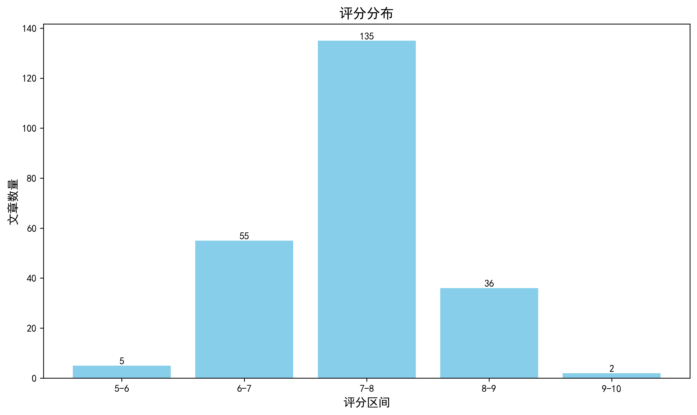

神经科学快讯·第015期 受伤的上皮细胞也会‘放电’：PNAS 发现上皮单层中的慢速电压尖峰 (2026-06-20)
📊 本周概览
- 头条推荐: 2 篇
- 深度解读: 124 篇
- 简要提及: 76 篇
- 跨界启发: 0 篇
- 已过滤: 236 篇
🌏 环球视野

📊 评分分布
| 评分区间 | 文章数量 |
|---|---|
| 5-6 | 5 |
| 6-7 | 55 |
| 7-8 | 135 |
| 8-9 | 36 |
| 9-10 | 2 |
总计: 233 篇评分文章
📈 各领域文章分布
| 领域 | 深度解读 | 简要提及 | 总计 |
|---|---|---|---|
| 未知领域 | 0 | 46 | 46 |
| 系统与环路神经科学 | 27 | 3 | 30 |
| 分子与细胞神经科学 | 25 | 1 | 26 |
| 感觉与运动神经科学 | 16 | 9 | 25 |
| 临床与转化神经科学 | 17 | 5 | 22 |
| 认知神经科学 | 10 | 4 | 14 |
| 方法学 | 9 | 5 | 14 |
| 发育神经科学 | 10 | 2 | 12 |
| 计算与理论神经科学 | 8 | 1 | 9 |
| 社会与情感神经科学 | 2 | 0 | 2 |
合计: 深度解读 124 篇，简要提及 76 篇，共 200 篇
🥇 头条推荐（9.0+分）
Epithelial cells fire voltage spikes.
头条推荐 9.1/10中文标题: 上皮细胞发射电压尖峰
作者: Yu SM, Granick S
关键词: 上皮细胞, 电压尖峰, 电生理, 非神经元兴奋性, 细胞通讯
亮点: 非兴奋性上皮细胞也能产生动作电位，颠覆百年教条
核心优势: 发现上皮细胞具有电压尖峰，挑战了动作电位仅存在于可兴奋细胞的传统认知，开辟细胞电生理新领域
研究局限: 仅基于单一研究，需在更多物种和组织中验证，且机制细节尚不明确
目标读者: 细胞生物学家、神经科学家、生物物理学家、生理学家
推荐理由: 这项研究颠覆了'动作电位是神经元专属'的传统认知，首次证明上皮细胞也能产生电压尖峰。这不仅拓展了可兴奋细胞的定义，更暗示在肠道、皮肤等非神经组织中可能存在类似神经元的电信号通讯机制。对于神经科学家而言，这一发现可能重塑我们对细胞间信息传递的理解，并为跨组织电信号交互提供全新视角。
中文标题: 觉醒活跃单胺能神经元释放的色胺调节睡眠稳态
作者: Huateng Cao, Kui Wang, Zhe Zhang
资深研究者: Kui Wang (h指数=54)
关键词: 色胺, 睡眠稳态, 单胺能神经元, 荧光传感器, 脑脊液, 跨物种
亮点: 首次揭示色胺作为睡眠稳态调控因子及其受体GPR139，为治疗睡眠障碍提供新靶点
核心优势: 跨物种验证、新型传感器开发、从分子到行为的完整机制链
研究局限: 色胺来源的具体神经元亚型及其上游调控机制尚不完全清楚；GPR139下游信号通路细节有待深入
目标读者: 睡眠神经科学家、GPCR药理学研究者、转化睡眠医学研究者
推荐理由: 该研究鉴定色胺为一种新的睡眠压力信号分子，其脑脊液水平在两种哺乳动物中均随清醒和体力活动增加，并由觉醒相关的单胺能神经元产生。通过开发特异性荧光传感器，揭示了色胺动态与睡眠稳态的紧密关联，为理解睡眠调控机制提供了新靶点和工具，对系统与分子神经科学均有重要价值。
📚 精选文献（按领域分类）
临床与转化神经科学
中文标题: 一种中枢神经系统渗透性小分子解聚Tau蛋白减少纤维和寡聚体负荷并维持蛋白质稳态和行为
作者: Mostowfi, N., Foreman, R., Wang, J. et al.
关键词: 小分子药物, tau蛋白, 阿尔茨海默病, 蛋白稳态, 行为学, 药物化学
亮点: 首个通过脑渗透小分子直接解聚tau纤维和寡聚体而不产生毒性中间体的治疗策略
核心优势: 开发了一种机制全新、脑渗透的小分子PT-13，能够直接解聚tau聚集体而不形成有毒中间体，并在体内改善病理和行为。
研究局限: 仅在一个小鼠模型中验证，且长期安全性和有效性尚未评估；机制细节（共组装的具体分子互动）有待进一步明确。
目标读者: 神经退行性疾病研究者、药物化学家、转化神经科学家
推荐理由: 该研究报道了一种能穿透血脑屏障的香豆素类小分子PT-13，通过堆叠驱动的共组装机制有效解聚tau纤维和寡聚体，减少阿尔茨海默病脑源性tau种子活性。在模型系统中，PT-13降低了总tau聚集负担，保护蛋白稳态并改善行为缺陷。这一发现为tau蛋白病提供了一种潜在的疾病修饰策略，其独特的分子机制也为靶向蛋白聚集的药物设计开辟了新途径。
中文标题: 利用自监督表征的语音作为重度抑郁症辅助诊断的生物标志物
作者: Yunhan Lin, Biman Najika Liyanage, Weihua Yue
单位: Voice Health Tech, Beijing, China; Peking University Sixth Hospital, Beijing, China; Dryue@Bjmu
研究地区: China
关键词: 自监督学习, 语音生物标志物, 深度学习, 人类, 重度抑郁障碍, 多中心队列
亮点: 利用自监督表征在大规模语音数据中实现高精度抑郁症辅助诊断
核心优势: 大规模多中心队列验证，自监督模型显著优于传统方法，且外部验证有效
研究局限: 外部验证样本量较小，未阐明神经生物学机制，仅相关性
目标读者: 计算精神病学、语音信号处理、情感计算和临床心理学研究者
推荐理由: 本研究利用自监督语音表示在大型多中心队列中建立抑郁诊断模型，系统比较了WavLM、HuBERT等基础模型与传统声学特征，验证了语音作为客观生物标志物的临床潜力。工作规模大、方法严谨，为精神疾病客观诊断提供了可借鉴的范式。
中文标题: 单倍型分辨的甲基化组揭示自闭症谱系障碍中父母来源的DNA甲基化失衡
作者: Lu Xia, Hailiang Guo, Ruiting Liu et al.
单位: Center For Medical Genetics And Hunan Key Laboratory Of Medical Genetics, School Of Life Sciences, Central South University, Changsha, 410008 Hunan, China; School Of Public Health, Peking University, Beijing 100191, China; Annoroad Gene Technology (Beijing) Co 等
资深研究者: Jinchen Li (h指数=31); Kun Xia (h指数=60)
研究地区: China
关键词: ASD, DNA甲基化, 亲本效应, 单倍型解析, PacBio HiFi, 表观基因组
亮点: 首次利用单倍型分辨甲基化组揭示ASD中亲本来源的DNA甲基化失衡
核心优势: 系统性地在患者-同胞对照设计中鉴定了亲本特异性差异甲基化位点和区域
研究局限: 样本量相对较小，且局限于特定人群，部分关联可能需更大样本验证
目标读者: 神经表观遗传学、自闭症研究和计算基因组学研究者
推荐理由: 该研究首次系统解析自闭症谱系障碍中亲本来源的DNA甲基化不平衡，通过单倍型分相甲基化谱揭示大量父源和母源特异性差异甲基化位点及区域，为理解ASD的表观遗传机制提供了新维度。方法上，PacBio HiFi测序结合单倍型分析，为精准研究基因组印记和亲本效应提供了可复制范本。
中文标题: 破坏脑-脾轴损害单核细胞-小胶质细胞通讯并加速淀粉样变性小鼠模型的疾病进展
作者: Tommaso Croese, Miguel A. Abellanas, Michal Schwartz
资深研究者: Tommaso Croese (h指数=12); Michal Schwartz (h指数=105)
关键词: 阿尔茨海默, 小鼠模型, 脑-脾轴, 神经免疫, 小胶质细胞, 单核细胞
亮点: 揭示脾脏通过单核细胞-小胶质细胞通信调控阿尔茨海默病进展的新机制
核心优势: 通过功能性去神经支配与增强实验，系统证明脑-脾轴在调控外周免疫向中枢迁移及小胶质细胞状态转变中的因果作用
研究局限: 研究仅基于5xFAD小鼠模型，缺乏在人类AD中的验证，且机制细节（如脾脏与大脑之间的具体信号分子）仍需阐明
目标读者: 神经免疫学、阿尔茨海默病研究、外周-中枢通信领域研究者
推荐理由: 这项研究首次揭示了脑-脾轴在阿尔茨海默病进展中的关键作用：早期脾脏交感神经去神经支配会破坏单核细胞-小胶质细胞通讯，加速认知下降。它不仅将外周-中枢免疫交互纳入AD病理框架，还为靶向外周神经干预提供了新思路，对理解疾病从无症状到症状期转化的机制具有重要价值。
中文标题: 神经元靶向压电微针破坏促肿瘤神经-免疫串扰并恢复黑色素瘤抗肿瘤免疫
作者: Anjun Song, Yanjie Zhang, Xiaogang Qu
资深研究者: Yanjie Zhang (h指数=36); Xiaogang Qu (h指数=129)
关键词: 压电微针, 神经免疫, 黑色素瘤, 小鼠, 肿瘤微环境, 外周神经
亮点: 利用压电微针靶向神经元重塑肿瘤免疫微环境，实现黑色素瘤免疫治疗新策略
核心优势: 创新性地结合压电微针技术与神经免疫调控，为肿瘤免疫治疗提供了全新干预靶点
研究局限: 缺乏体内长期安全性与有效性验证，且技术转化路径尚不清晰
目标读者: 肿瘤免疫学家、生物材料研究者、神经科学和交叉学科科学家
推荐理由: 该研究利用新型压电微针技术，通过靶向肿瘤浸润神经元，有效阻断促肿瘤的神经-免疫串扰，并重新激活抗肿瘤免疫。这项工作不仅为神经科学领域提供了调控外周神经-免疫互作的新工具，更展示了将神经调控策略应用于肿瘤免疫治疗的转化前景，对理解神经在疾病微环境中的复杂角色具有重要启发。
中文标题: PLK4抑制剂RP-1664通过双机制敏感性在神经母细胞瘤临床前模型中显示出强效疗效
作者: Isabel Soria-Bretones, Matias Casás-Selves, John M. Maris
单位: Laurent, Qc, Canada; Repare Therapeutics, St
研究地区: Canada
关键词: 神经母细胞瘤, PLK4抑制剂, TRIM37, 中心粒扩增, CRISPR筛选, 染色体17q
亮点: PLK4抑制剂通过双重机制（TRIM37依赖性合成致死和中心粒扩增诱导多极分裂）在神经母细胞瘤中展现强效抗肿瘤活性
核心优势: 全面临床前验证，包括多个PDX模型、转基因小鼠模型及联合治疗，证据链完整严谨
研究局限: 仍为临床前研究，未涉及临床试验；TRIM37非依赖机制的详细分子通路未完全阐明
目标读者: 肿瘤生物学、神经母细胞瘤研究、靶向治疗开发人员
推荐理由: 该研究揭示了PLK4抑制剂RP-1664在神经母细胞瘤中的作用机制，尤其是通过TRIM37依赖和独立双重通路选择性杀伤高风险肿瘤细胞，为开发针对儿童肿瘤的靶向治疗提供了新策略。结合CRISPR筛选和活细胞成像，机制解析清晰，临床前模型验证扎实，对神经肿瘤学转化研究具有重要参考价值。
中文标题: 临床连接组学：疾病中结构性脑网络的映射
作者: Andrew Zalesky, Maria A. Di Biase
单位: Department Of Biomedical Engineering, University Of Melbourne, Melbourne, Vic 3010, Australia; Electronic Address: Azalesky@Unimelb; Systems Group, Department Of Psychiatry, University Of Melbourne, Melbourne, Vic 3010, Australia
资深研究者: Andrew Zalesky (h指数=80); Maria A. Di Biase (h指数=28)
研究地区: Australia
关键词: 弥散MRI, 结构连接组, 白质微结构, 脑网络, 临床疾病, 方法学
亮点: 病理条件下的结构连接组映射：挑战、分类与最佳实践指南
核心优势: 系统整合了从微观到宏观的连接组异常分类与多种测量方法，提供了面向临床的可靠映射建议。
研究局限: 主要聚焦于结构连接组，未涵盖功能连接组；对特定疾病的深度分析有限。
目标读者: 临床神经影像、神经病学、精神病学及神经科学方法论研究者
推荐理由: 该综述系统梳理了在脑疾病状态下进行结构连接组映射的核心挑战，包括病变对白质微结构的影响、病理破坏网络拓扑以及方法论偏差。它连接了计算神经科学的工具与临床实践需求，为研究阿尔茨海默病、精神分裂症等疾病的网络病理学提供了关键指导，对推进精准神经影像学有重要参考价值。
中文标题: 临床可转化的超声定位显微镜揭示创伤性脑损伤患者的脑血管重塑和预后
作者: Maoyao Li, Wenxuan Wang, Yuanyi Zheng
资深研究者: Wenxuan Wang (h指数=23)
关键词: 超声定位显微镜, 创伤性脑损伤, 微血管成像, 床边评估, 人类, 脑血管重塑
亮点: 实现床旁微血管超高分辨率成像，揭示脑损伤后微循环重塑与预后关联
核心优势: 首次在临床系统上实现超声定位显微镜的床旁应用，纵向揭示脑血管重塑并预测6个月预后
研究局限: 样本量仅20例，为单中心观察性研究，需更大规模多中心验证
目标读者: 神经重症、超声影像、脑血管疾病研究者
推荐理由: 该研究突破常规超声定位显微镜对超快成像的依赖，实现神经重症监护床旁的脑微血管结构可视化。在20例去骨瓣减压术后脑损伤患者中，该方法揭示了微血管重塑的时空特征，并与预后相关。这一转化成果为实时微循环监测提供了可及工具，有望改变神经危重症的临床决策模式，对脑血管疾病和脑损伤研究具有重要方法学价值。
TFPI2 promotes NK cell-mediated glioblastoma killing through adhesion and checkpoint control.
深度解读 7.6/10中文标题: TFPI2通过粘附和检查点控制促进NK细胞介导的胶质母细胞瘤杀伤
作者: Zheng D, Li F, Zhang Z et al.
关键词: 胶质母细胞瘤, NK细胞, 免疫检查点, TFPI2, 细胞粘附, 肿瘤微环境
亮点: 揭示TFPI2通过双重机制（粘附与检查点控制）增强NK细胞杀伤胶质母细胞瘤的免疫逃逸新机制
核心优势: 首次发现TFPI2在NK细胞介导的胶质母细胞瘤杀伤中发挥关键调控作用，并阐明其双重分子机制。
研究局限: 主要在体外和小鼠模型中验证，缺乏临床样本和患者来源数据的直接支持。
目标读者: 肿瘤免疫学、神经肿瘤学、NK细胞生物学及免疫治疗研究者
推荐理由: 该研究揭示了TFPI2在NK细胞介导的胶质母细胞瘤杀伤中的关键作用，通过促进NK细胞与肿瘤细胞的粘附以及调控免疫检查点，增强了抗肿瘤免疫。这一发现为胶质母细胞瘤的免疫治疗提供了新的分子靶点，具有重要的临床转化潜力。
Amyotrophic lateral sclerosis as a network disease: from metabolic decline to network failure.
深度解读 7.6/10中文标题: 肌萎缩侧索硬化作为一种网络疾病：从代谢衰退到网络失效
作者: Dubbioso R, Pappatà S
关键词: 神经退行性疾病, 肌萎缩侧索硬化症, 网络疾病, 代谢下降, 功能连接
亮点: 从代谢衰退到网络失效的ALS新视角
核心优势: 整合代谢与网络神经科学，提出ALS作为网络疾病的统一框架
研究局限: 缺乏新实验数据，依赖现有文献，批判性深度可能有限
目标读者: 神经退行性疾病研究者、代谢与网络神经科学交叉领域学者
推荐理由: 本文提出ALS不应仅被视为运动神经元疾病，而是由代谢崩溃引发的全脑网络失效。通过整合代谢影像与功能连接数据，揭示了疾病进展中从局部代谢异常到全局网络解耦的动态过程。这一框架为理解神经退行性疾病的系统性机制提供了新视角，也为早期诊断和靶向网络保护的干预策略奠定了理论基础。
中文标题: 基因治疗恢复内质网与线粒体相互作用改善2A型腓骨肌萎缩症
作者: Tessier M, Hamze Z, Bonello-Palot N et al.
关键词: 基因治疗, 内质网-线粒体互作, CMT2A, 周围神经病, MFN2, 小鼠模型
亮点: 基因治疗恢复ER-线粒体互作，为CMT2A提供新疗法
核心优势: 首次将ER-线粒体互作修复作为CMT2A基因治疗的靶点
研究局限: 尚缺乏临床转化证据
目标读者: 神经遗传学、基因治疗、线粒体生物学研究者
推荐理由: 本研究针对Charcot-Marie-Tooth 2A型疾病（CMT2A），通过基因治疗恢复内质网与线粒体之间的功能性互作，在动物模型中显著改善了周围神经病变表型。该工作不仅为CMT2A这一尚无有效治疗方法的遗传性神经疾病提供了有前景的治疗策略，更揭示了ER-线粒体轴在神经退行性病变中的关键作用，为相关神经疾病的机制研究和临床转化开辟了新方向。
中文标题: 类风湿关节炎中脑老化的神经结构和分子证据
作者: Wasen, C., Erlandsson, M., Andersson, K. et al.
关键词: MRI, 生物标志物, 转录组学, 人类, 类风湿关节炎, 脑衰老
亮点: 多模态证据揭示类风湿关节炎与加速脑衰老的关联
核心优势: 结合结构MRI、血清生物标志物和单核细胞转录组学，提供了跨模态的加速脑衰老证据。
研究局限: 样本量较小，且缺乏纵向数据，因果推断受限；脑年龄预测模型仅基于健康对照，可能低估RA特异性变化。
目标读者: 神经免疫学、神经影像学和风湿病学研究者
推荐理由: 该研究通过整合结构MRI、循环神经退行性生物标志物和外周单核细胞转录组学，提供了类风湿关节炎（RA）患者大脑加速衰老的多模态证据。研究利用独立队列交叉验证，揭示了慢性系统性炎症如何驱动神经退行性变化，为RA相关认知衰退的早期干预和精准监测提供了潜在靶点，也拓展了我们对全身-脑轴衰老机制的理解。
中文标题: 单侧纹状体深部脑刺激改善认知控制
作者: Sachse EM, Dastin-van Rijn EM, Bennek JP et al.
关键词: 深部脑刺激, 纹状体, 认知控制, 电生理, 行为学, 大鼠
亮点: 单侧纹状体DBS特异性增强认知控制，为基底节环路调控提供新靶点。
核心优势: 首次系统评估单侧纹状体DBS对认知控制的影响，行为与电生理证据相结合。
研究局限: 样本量较小且缺乏长期随访，双盲对照设计可能不充分。
目标读者: DBS临床研究者、认知神经科学家、基底节疾病基础与转化研究者
推荐理由: 该研究通过单侧纹状体深部脑刺激，揭示了特定环路在认知控制中的关键作用，为理解基底节功能及神经精神疾病的干预提供了新视角。结合电生理与行为学分析，明确了刺激参数与认知改善的因果关系，具有重要的转化潜力。
中文标题: 融合神经刺激与外骨骼技术以增强脑或脊髓损伤后的感觉运动手功能
作者: Andrea Cimolato, Dunja Cekić, Natalija Katić Šećerović et al.
资深研究者: Ljubica Konstantinovic (h指数=18); Stanisa Raspopovic (h指数=37)
关键词: 神经刺激, 外骨骼, 脑损伤, 脊髓损伤, 传感器运动功能, 康复
亮点: 融合神经刺激与外骨骼技术，为脑/脊髓损伤后的手功能康复提供新范式
核心优势: 系统整合两种干预手段，并验证其协同效应，具有明确的转化潜力
研究局限: 可能缺乏大规模临床试验数据，且个体差异和长期效果尚未充分评估
目标读者: 康复工程、神经调控、神经康复和临床神经科学研究者
推荐理由: 该研究创新性地将神经刺激技术与外骨骼机器人相结合，旨在恢复脑或脊髓损伤后的感觉运动手功能。通过闭环整合刺激与辅助运动，有望突破单一疗法的瓶颈，为神经康复提供更有效的干预策略。文章系统综述了现有证据并提出了未来方向，对临床神经科学和康复工程领域具有重要参考价值。
中文标题: 靶向昼夜节律治疗癌性疼痛
作者: Sankar N
关键词: 昼夜节律, 癌痛, 动物模型, 药理学, 行为学, 视交叉上核
亮点: 系统综述昼夜节律调控在癌症疼痛治疗中的潜在靶点与机制
核心优势: 整合了昼夜节律生物学与疼痛研究，为癌症疼痛管理提供了新视角
研究局限: 缺乏对具体临床转化的深入探讨，部分机制尚不明确
目标读者: 疼痛神经科学、癌症研究、时间生物学领域的研究者
推荐理由: 该研究聚焦于昼夜节律在癌痛发生与维持中的关键作用，并提出靶向生物钟以缓解癌痛的新策略。通过整合分子机制与行为学评估，揭示了节律紊乱如何加剧疼痛感知，并验证了时间特异性干预的镇痛潜力。不仅为癌痛治疗提供了时间药理学思路，也为理解慢性疼痛的昼夜调控机制开辟了新方向。对于从事疼痛研究、神经药理学及临床转化的读者具有重要参考价值。
中文标题: 选择性靶向次黄嘌呤核苷酸脱氢酶-2抑制脑转移潜能同时保留免疫细胞功能
作者: Kieliszek AM, Apel E, Zheng S et al.
关键词: 脑转移, IMPDH2, 免疫微环境, 酶抑制剂, 肿瘤神经科学, 代谢
亮点: 选择性靶向IMPDH2同时抑制脑转移并保护免疫细胞功能的新型治疗策略
核心优势: 提出一种在脑转移中区分肿瘤与免疫细胞的代谢靶向方法
研究局限: 仅基于摘要，缺乏体内长期安全性及多模型验证的详细信息
目标读者: 肿瘤神经科学、免疫学、药物开发研究者
推荐理由: 该研究首次揭示IMPDH2在脑转移中的关键作用，并证明选择性抑制该酶可有效减少脑转移灶形成，同时保留抗肿瘤免疫细胞功能。这一发现为脑转移治疗提供了代谢靶点新策略，克服了传统疗法抑制免疫的局限，对理解肿瘤-免疫-代谢交叉调控具有重要价值。
中文标题: 靶向HMGB1-TLR4轴缓解神经病理性疼痛相关的认知缺陷
作者: Li J, Liu Y, Liao Z et al.
关键词: 神经病理性疼痛, 认知缺陷, HMGB1, TLR4, 神经炎症, 药理学干预
亮点: 揭示HMGB1-TLR4通路在神经病理性疼痛相关认知障碍中的关键作用，提供靶向治疗新思路。
核心优势: 将外周免疫信号与中枢认知缺陷直接联系起来，具有转化潜力。
研究局限: 缺乏对具体机制的深入解析（如下游信号通路），且样本量和动物模型单一。
目标读者: 疼痛神经科学、认知神经科学、神经免疫学研究者及临床转化研究人员。
推荐理由: 该研究揭示了HMGB1-TLR4信号轴在神经病理性疼痛相关认知障碍中的关键作用，通过靶向该轴可缓解疼痛并改善认知功能。研究不仅阐明了神经炎症驱动认知缺陷的分子机制，还为开发同时治疗疼痛和认知症状的联合疗法提供了新靶点，具有重要的临床转化价值。
中文标题: 限制ALS中的神经退行性变：一种磷酸酶铺平道路
作者: Elena I. Rugarli, Thomas Langer
单位: Max-Planck-Institute For Biology Of Ageing, Cologne, Germany; Cologne Excellence Cluster On Cellular Stress Responses In Aging-Associated Diseases (Cecad), University Of Cologne, Cologne, Germany; Electronic Address: Tlanger@Age
资深研究者: Elena I. Rugarli (h指数=47); Thomas Langer (h指数=88)
研究地区: Germany
摘要: 聚焦PGAM5-OMA1通路，为ALS治疗提供新靶点视角
优势: 敏锐捕捉并解读重要发现，提出治疗转化潜力 局限: 仅基于单一研究，缺乏独立数据支持 受众: 神经退行性疾病研究者、ALS领域科学家、线粒体生物学专家
Feynman Kac Reweighted Schrödinger Bridge Matching for Surface-Based Tau PET Harmonization
简要提及 6.9/10中文标题: 基于费曼-卡克重加权薛定谔桥匹配的Tau PET图像标准化
作者: Jianwei Zhang, Xinyu Nie, Jiaxin Yue et al.
资深研究者: Jianwei Zhang (h指数=49); Yonggang Shi (h指数=36)
摘要: 提出Feynman Kac重加权薛定谔桥匹配解决Tau PET数据协调中的子组分布偏移问题
优势: 通过子组感知的重加权机制，在数据层面实现生物学一致的运输，显著降低了tau阳性状态误匹配 局限: 仅基于两个数据集和特定示踪剂对（PI-2620和AV-1451），泛化到其他示踪剂和场景需要进一步验证 受众: 神经影像计算方法学、核医学、阿尔茨海默病生物标志物研究者
中文标题: 迷幻蘑菇素中毒期间的脑电微状态动态与急性体验及持续性心理变化的关系
作者: Jajcay, N., Vejmola, C., Korcak, J. et al.
摘要: EEG微状态动力学揭示psilocybin加速大脑状态转换，并与急性体验及28天后心理变化相关
优势: 首次将EEG微状态动力学与远期间隔的心理变化直接关联，为psilocybin的神经机制提供候选标记物 局限: 样本量小（n=15），相关分析为探索性，未进行多重比较校正，仅包含健康志愿者 受众: 精神药理学、EEG神经影像、意识研究及精神疾病转化研究者
中文标题: 星形胶质细胞中FTO依赖的m6A去甲基化驱动七氟烷诱导的围手术期神经认知障碍
作者: Li J, Liao Z, Zhang K et al.
摘要: 星形胶质细胞m6A修饰在麻醉后认知障碍中的关键作用
优势: 首次揭示星形胶质细胞FTO依赖的m6A去甲基化参与七氟烷诱导的神经认知障碍 局限: 仅在小鼠模型中验证，缺乏人类数据；机制可能不唯一 受众: 神经科学、麻醉学、表观遗传学、神经退行性疾病研究者
中文标题: 进行性多灶性白质脑病存活患者的长期预后
作者: Lambert N, El Moussaoui M, Le Guilloux A et al.
摘要: 首个大规模队列揭示PML幸存者长期预后及关键预测因素
优势: 聚焦长期预后，填补PML幸存者结局数据空白，对临床决策有直接参考价值。 局限: 回顾性设计，可能存在选择偏倚，且未提供对照组，因果推断受限。 受众: 神经科、感染科、移植科及免疫缺陷相关疾病临床研究者
分子与细胞神经科学
中文标题: 靶向PGAM5驱动的线粒体整合应激反应可减缓所有亚型ALS的进展
作者: Zhilong Zheng, Wangju Yang, Zhen Chen et al.
单位: Department Of Medicinal Chemistry, School Of Pharmacy, Nanjing Medical University, Nanjing 211166, Jiangsu, China; Electronic Address: Pharmchen@Njmu; Department Of Neurobiology, School Of Basic Medical Sciences, Nanjing Medical University, Nanjing 211166, Jiangsu, China 等
资深研究者: Jing Wang (h指数=100); Yan Liu (h指数=119)
研究地区: China
关键词: CRISPR筛选, 线粒体应激, ALS, 磷酸酶, 脊髓, 神经肌肉接头
亮点: 揭示PGAM5-OMA1-mtISR通路是ALS共同致病机制，并提出老药telmisartan的靶向治疗潜力。
核心优势: 通过CRISPR筛选发现PGAM5作为ALS跨亚型共同靶点，并利用多种体内外模型系统验证其机制和治疗效果，尤其发现现有药物telmisartan可抑制PGAM5。
研究局限: 研究主要在细胞和动物模型中进行，缺少人体临床试验数据；telmisartan作为PPARγ激动剂可能有其他效应，特异性需进一步确认；PGAM5在其他神经退行性疾病中的作用未探讨。
目标读者: 神经退行性疾病研究者、ALS临床专家、药物开发者和线粒体生物学研究者
推荐理由: 该研究通过CRISPR-Cas9筛选发现PGAM5是ALS的共性病理介质，揭示其通过去磷酸化OMA1激活线粒体整合应激反应，进而驱动神经肌肉接头破坏和运动功能减退。在散发性ALS患者脊髓中PGAM5水平升高，提示其作为治疗靶点的潜力。工作为理解ALS的跨亚型机制和开发广谱疗法提供了新方向。
中文标题: 早期资源匮乏导致雌性前额叶皮层的持续性转录变化和血管重塑
作者: Andrews, E. R., Crist, R. C., Silva, A. I. et al.
关键词: 早期逆境, 资源稀缺, 有限垫料模型, 雌性大鼠, 内侧前额叶皮层, 转录组学
亮点: 首次揭示早期资源匮乏触发雌性前额叶皮层持续血管重构的细胞和分子机制
核心优势: 结合单核转录组学和3D血管成像，从分子到结构水平正交验证了雌性特异性血管变化
研究局限: 仅在啮齿类模型中验证，且未直接操纵血管基因以建立因果关系
目标读者: 神经科学家、性别差异研究者、发育神经生物学家、血管生物学家
推荐理由: 该研究利用雌性大鼠的有限垫料模型模拟早期贫困，系统揭示了资源稀缺如何通过持续转录变化和血管重塑影响内侧前额叶皮层功能。结合分子与细胞层面的多组学分析，为理解早期逆境导致长期脑脆弱性的机制提供了新视角，对发育与精神疾病研究具有重要参考价值。
中文标题: 可溶性α2δ-1在疾病脑脊液中改变，调节网络稳态并挽救神经精神小鼠模型的缺陷
作者: Marc Dos Santos, Marc P. Forrest, Ewa Bomba-Warczak et al.
单位: Department Of Neurology, Northwestern University Feinberg School Of Medicine, Chicago, Il 60611, Usa; Center For Autism And Neurodevelopment, Northwestern University Feinberg School Of Medicine, Chicago, Il 60611, Usa; Department Of Neuroscience, Northwestern University Feinberg School Of Medicine, Chicago, Il 60611, Usa 等
资深研究者: Marc P. Forrest (h指数=22); Jeffrey N. Savas (h指数=43)
研究地区: United States
关键词: 可溶性α2δ, CSF, 电压门控钙通道, 网络稳态, 精神分裂症, 小鼠模型
亮点: 发现可溶性钙通道亚基α2δ-1作为新型细胞外信号分子，调控网络稳态并逆转精神分裂症样缺陷
核心优势: 首次鉴定可溶性α2δ-1为活动依赖的细胞间信号，并在神经系统疾病中具有治疗潜力
研究局限: 机制细节尚不明确（如何被释放、受体等），需进一步验证临床转化潜力
目标读者: 神经科学、精神疾病、细胞信号转导研究者
推荐理由: 该研究发现电压门控钙通道亚基α2δ-1的可溶形式在人脑脊液中分泌，并证明其作为活动调控的细胞间信号调节神经网络稳态。在精神分裂症患者CSF中水平降低，而在小鼠模型中补充可溶性α2δ-1可挽救行为缺陷和网络失调。这一发现不仅揭示了离子通道亚基的非经典功能，也为精神疾病的生物标志物和潜在治疗靶点提供了新方向。
Structural basis for lysophosphatidic acid recognition and atypical Gα(q) coupling by LPAR5.
深度解读 8.2/10中文标题: LPAR5识别溶血磷脂酸和非典型Gα(q)偶联的结构基础
作者: Li X, Wang K, Xing Z et al.
资深研究者: Xu HE (h指数=41)
关键词: 冷冻电镜, GPCR, LPA信号, Gαq, 结构生物学, 脂质信号
亮点: 首次解析LPAR5与LPA及Gα(q)复合物结构，揭示非典型偶联机制
核心优势: 高分辨率结构明确LPA识别和G蛋白选择性偶联的结构基础
研究局限: 缺乏体内功能验证和细胞水平动态证据
目标读者: 结构生物学、GPCR信号转导、药物发现研究者
推荐理由: 该研究通过冷冻电镜解析了LPAR5与溶血磷脂酸及Gαq蛋白复合物的高分辨率结构，揭示了配体识别和非常规G蛋白偶联的分子细节。LPAR5在神经系统发育、突触可塑性和疼痛信号中发挥关键作用，此项工作为理解脂质信号在中枢和外周神经系统的功能提供了结构基础，并为开发靶向LPAR5的选择性药物（如镇痛剂）奠定了基础。对于关注GPCR信号转导和神经药物开发的读者具有重要参考价值。
中文标题: 出生后人类神经干细胞的分离
作者: Liu, D. D., Eastman, A. E., Womack-Gambrel, N. L. et al.
关键词: 人类, 神经干细胞, 索引分选, 克隆条形码, 异种移植, A2B5+EGFR+
亮点: 首次从产后人脑中分离并功能表征两种神经干细胞亚群，揭示其命运偏向及随年龄的指数衰减趋势
核心优势: 结合索引分选、克隆条形码和异种移植，系统鉴定并验证了产后人类神经干细胞的两个功能亚群
研究局限: 预印本未经同行评审，样本量有限，亚群体内功能意义需进一步验证
目标读者: 神经发育生物学、神经干细胞、再生医学和衰老研究者
推荐理由: 该研究通过索引分选技术首次从出生后人类脑中前瞻性分离出两类神经干细胞亚群，并结合克隆条形码和体内异种移植揭示了其分化动力学。这不仅为理解人类产后神经发生提供了直接的工具和细胞靶标，也为干细胞生物学研究设立了新的方法学标准，对再生医学和脑发育研究具有重要价值。
中文标题: NPAS3调控的星形胶质细胞线粒体生物能量学是认知所必需的
作者: Kateryna Murlanova, Ksenia Novototskaya-Vlasova, Shovgi Huseynov et al.
单位: Danish Research Institute Of Translational Neuroscience (Dandrite), Nordic Embl Partnership For Molecular Medicine, Aarhus University, Aarhus, Denmark; Department Of Pathology And Anatomical Sciences, Jacobs School Of Medicine And Biomedical Sciences, State University Of New York At Buffalo, Buffalo, Ny, Usa; Department Of Physiology And Biophysics, Jacobs School Of Medicine And Biomedical Sciences, State University Of New York At Buffalo, Buffalo, Ny, Usa 等
资深研究者: Juhyun Kim (h指数=35); Mikhail V. Pletnikov (h指数=54)
研究地区: United States, Denmark
关键词: 星形胶质细胞, 线粒体, NPAS3, 基因敲除, 认知功能, 小鼠
亮点: 揭示星形胶质细胞NPAS3通过调控线粒体能量代谢影响认知功能的新机制
核心优势: 多模态实验（基因敲除、代谢组学、电生理、行为学）结合乳酸拯救实验，建立了从分子代谢到认知表型的完整因果链。
研究局限: 仅在小鼠模型中验证，缺乏人类星形胶质细胞或患者数据支持临床转化。
目标读者: 神经科学、胶质细胞生物学、代谢生物学和神经精神疾病研究者
推荐理由: 该研究揭示了转录因子NPAS3在星形胶质细胞中调控线粒体生物能量代谢的关键作用，并证明这一细胞类型特异性机制是维持正常认知功能所必需的。通过条件性敲除小鼠模型，作者发现星形胶质细胞NPAS3缺失导致线粒体谷氨酸载体表达下降、能量代谢受损，进而引发突触功能障碍和认知缺陷。这一发现为理解精神疾病中认知障碍的细胞代谢基础提供了新视角，并提示星形胶质细胞线粒体可作为潜在治疗靶点。
中文标题: ATF2磷酸化是神经元凋亡的核心转录驱动因子
作者: Jorge Gómez-Deza, Matthew Nebiyou, Lara H. El Touny et al.
单位: Eunice Kennedy Shriver National Institute Of Child Health And Human Development, National Institutes Of Health, Bethesda, Md, Usa; Department Of Cancer And Cellular Biology, Lewis Katz School Of Medicine, Temple University, Philadelphia, Pa, Usa; Fox Chase Cancer Center, Cancer Signaling And Microenvironment Program, Philadelphia, Pa, Usa 等
资深研究者: Pedro P. Rocha (h指数=26); Claire E. Le Pichon (h指数=27)
研究地区: United States
关键词: CRISPR筛选, 全基因组, 人类神经元, 神经元凋亡, ATF2, DLK
亮点: 首次系统性揭示ATF2磷酸化而非JUN磷酸化是神经元凋亡的核心转录驱动，为神经退行性疾病提供新靶点。
核心优势: 结合全基因组CRISPR筛选和体内外功能验证，发现并证明了ATF2磷酸化在凋亡通路中的核心地位及JUN磷酸化的非必需性。
研究局限: 核心发现主要基于体外和动物模型，缺乏在人类神经退行性疾病样本中的直接验证；ATF2作为治疗靶点的长期安全性和有效性未知。
目标读者: 神经退行性疾病研究者、细胞死亡与转录调控学者、药物靶点发现专家
推荐理由: 该研究通过全基因组CRISPR抑制筛选，在人类神经元中系统鉴定了凋亡所需基因，发现ATF2磷酸化是核心转录驱动事件，与DLK和JUN形成新的促死亡级联。这一发现不仅深化了对神经元凋亡分子机制的理解，也为阿尔茨海默病等神经退行性疾病提供了潜在的治疗靶点。
中文标题: 溶酶体回收神经元脂质使胶质细胞能够浸润突触区域
作者: Emma K. Theisen, Irma Magaly Rivas-Serna, Peiwen Cheng et al.
单位: Department Of Agriculture, Food, And Nutritional Science, University Of Alberta, Edmonton, Ab T6G 2R3, Canada; Department Of Cell And Developmental Biology, University Of Colorado-Denver Anschutz Medical Campus, Aurora, Co 80045, Usa; Department Of Anatomy, University Of California, San Francisco, San Francisco, Ca 94114, Usa 等
资深研究者: Thomas R. Clandinin (h指数=50)
研究地区: Canada, United States
关键词: 果蝇, 脂质组学, 溶酶体, 鞘脂, 遗传学, 发育
亮点: 揭示发育中胶质细胞通过溶酶体回收神经元膜脂驱动自身形态建成的新机制
核心优势: 首次将溶酶体介导的神经元-胶质细胞脂质代谢耦合与胶质细胞突触区域浸润的发育程序联系起来
研究局限: 基于果蝇模型，人类保守性及在不同脑区的重要性尚需验证
目标读者: 神经发育生物学、脂质代谢、胶质细胞生物学和溶酶体功能研究者
推荐理由: 该研究利用果蝇模型揭示了发育过程中特定鞘脂的瞬时积累，并证明这种脂质脉冲来源于神经元和胶质细胞的合成，最终被溶酶体回收，从而促进胶质细胞向突触区域的浸润。这一发现将溶酶体脂质代谢与神经发育中的膜重塑和胶质-神经元互作联系起来，为理解溶酶体贮积症的神经病理机制提供了新视角。
中文标题: 人2型IP3受体的构象景观及配体依赖性聚集
作者: Caifeng Liu, Yu-Jing Lan, Erkan Karakas
资深研究者: Caifeng Liu (h指数=24); Erkan Karakas (h指数=21)
关键词: IP3受体, 构象景观, 配体依赖性聚集, 人类, 钙信号, 结构生物学
亮点: 高分辨率构象动态揭示IP3受体配体调控新机制
核心优势: 首次全面描绘人源IP3R2在不同配体结合下的构象景观，阐明聚类机制
研究局限: 功能验证较为有限，缺乏对神经元中生理功能的直接证据
目标读者: 钙信号、结构生物学、细胞信号转导和神经科学家
推荐理由: 该研究通过解析人2型IP3受体的构象景观及其配体依赖性聚集机制，为理解细胞内钙释放通道在神经信号传导中的复杂调控提供了关键结构基础。IP3受体介导的钙信号对神经元可塑性、突触传递和胶质细胞功能至关重要，而这项研究揭示了受体如何在不同配体条件下调节自身构象和寡聚状态，直接关联到钙信号在时空编码中的精确性。对于从事分子与细胞神经科学的读者，这是一项推动钙信号机制从宏观表型向原子分辨率理解的重要进展。
中文标题: 挥发性麻醉药在与通道门控直接相关的位点调节电压门控钠通道功能
作者: David Hollingworth, Karl F. Herold, Hugh C. Hemmings Jr.
资深研究者: David Hollingworth (h指数=24); Karl F. Herold (h指数=16)
关键词: 电压门控钠通道, 挥发性麻醉药, 电生理, 位点导向突变, 门控机制, 啮齿类
亮点: 定位挥发性麻醉药直接作用于电压门控钠通道门控相关位点的分子机制
核心优势: 首次明确麻醉药结合位点与通道门控的直接联系，为麻醉机制提供结构基础
研究局限: 主要依赖体外电生理和突变分析，缺乏在体或临床浓度下的验证
目标读者: 麻醉学、离子通道生物物理、分子药理学研究者
推荐理由: 该研究精确鉴定了挥发性麻醉药直接调控电压门控钠通道的关键结构位点，该位点与通道门控过程直接耦合。通过电生理与突变分析，揭示了麻醉药如何通过稳定通道的非激活状态来抑制神经元兴奋性。这一发现不仅深化了对全身麻醉分子机制的理解，也为开发更精准的钠通道调制药物提供了结构基础，对离子通道研究与临床麻醉学均具有重要意义。
中文标题: 核CK1δ作为PER:CRY复合物动力学和昼夜节律周期的关键决定因素
作者: Serrano FE, Marzoll D, Ruppert B et al.
关键词: 昼夜节律, CK1δ, PER:CRY复合体, 磷酸化, 蛋白动力学
亮点: 揭示CK1δ核定位控制PER:CRY复合物动态从而决定昼夜节律周期的新机制
核心优势: 首次阐明CK1δ在核内的关键功能，为生物钟周期调控提供新机制
研究局限: 缺乏体内验证，以及与其他激酶相互作用的全面分析
目标读者: 生物钟研究、细胞信号转导、蛋白质动态领域的研究者
推荐理由: 该研究揭示了核内CK1δ作为PER:CRY复合体动态和昼夜节律周期的关键调控因子，通过磷酸化修饰精细调控复合体的组装与解体，为理解生物钟的分子机制提供了新的视角。这项工作不仅深化了对昼夜节律核心振荡器的认知，还可能为相关节律紊乱疾病的治疗靶点发现提供依据。
中文标题: 内吞机制在神经末梢周围活性区的部署独立于活性区组装和诱发释放
作者: Emperador-Melero J, Del Signore SJ, De León González KM et al.
关键词: 神经末梢, 内存机制, 活性区, 突触传递, 超分辨率成像, 小鼠
亮点: 发现内吞机器在神经末梢的部署与活性带组装和诱发放电无关，揭示突触前功能独立性的新层面。
核心优势: 精细地解耦了内吞机器招募与突触前活性区的形成和活动依赖性释放。
研究局限: 主要依赖于果蝇或体外系统，在哺乳动物中枢突触中的普遍性有待验证。
目标读者: 突触生物学、细胞神经科学、膜运输和神经递质释放研究者。
推荐理由: 该研究揭示了神经末梢periactive zone的内存机制独立于活性区组装和诱发释放，为理解突触前末梢在持续活动后如何维持膜稳态和神经递质释放提供了新的细胞生物学视角。通过精细的分子和成像手段，区分了两种不同时空调控的突触前事件，对突触可塑性和神经传递的分子机制具有重要启示。
Conformational cycling of the Wntless transporter drives trafficking and secretion of Wnt morphogens
深度解读 7.5/10中文标题: Wntless转运蛋白的构象循环驱动Wnt形态发生素的运输和分泌
作者: Yunhui Ge, Taciani de Almeida Magalhaes, Pengxiang Huang
资深研究者: Pengxiang Huang (h指数=18)
关键词: Wnt信号, 构象循环, 转运体, 分泌机制, 形态发生素, 细胞生物学
亮点: Wntless转运体构象动态调控Wnt形态发生素分泌的分子机制
核心优势: 结合结构生物学与功能分析，揭示了Wntless构象循环驱动Wnt运输的详细机制
研究局限: 研究主要基于体外和细胞系实验，体内验证不足；Wnt信号在神经系统的具体作用未直接探讨
目标读者: 发育生物学、细胞生物学、结构生物学研究者，以及关注Wnt信号通路的神经科学家
推荐理由: 该研究通过解析Wntless转运蛋白的构象循环机制，揭示了Wnt形态发生素从内质网到质膜运输及分泌的分子开关。这一发现不仅填补了Wnt信号通路中长距离运输调控的认知空白，也为理解神经发育过程中形态发生素梯度建立提供了直接机制。对于关注细胞极性、突触形成和神经管发育的研究者具有重要参考价值。
中文标题: GPR37调节脱髓鞘损伤后的髓鞘再生
作者: Hajbi Karasik R, Vainshtein A, Aharoni R et al.
关键词: GPR37, 髓鞘再生, 少突胶质细胞, 脱髓鞘, 小鼠, 药物靶点
亮点: 揭示GPR37通过调节少突胶质细胞分化促进脱髓鞘损伤后髓鞘再生的新机制
核心优势: 首次系统阐明GPR37在髓鞘修复中的功能，为多发性硬化等脱髓鞘疾病提供潜在治疗靶点
研究局限: 机制细节尚不完整，缺乏体内功能性验证及临床转化支持
目标读者: 神经胶质细胞生物学、脱髓鞘疾病及GPCR信号转导研究者
推荐理由: 该研究揭示了GPR37在脱髓鞘损伤后促进髓鞘再生的关键角色，通过调控少突胶质细胞的分化和成熟。这一发现不仅深化了对髓鞘修复分子机制的理解，也为多发性硬化等脱髓鞘疾病的治疗提供了新的潜在靶点。GPR37的调控作用可能具有转化医学价值。
中文标题: iSCORE-PD：用于研究帕金森病的同基因干细胞库
作者: Oriol Busquets, Hanqin Li, Frank Soldner
资深研究者: Oriol Busquets (h指数=19); Hanqin Li (h指数=12)
关键词: 基因编辑, iPSC, 帕金森病, 疾病建模, 干细胞, 同基因对照
亮点: 大规模、标准化的PD相关基因编辑干细胞库及其质控框架，为帕金森病机制研究提供系统性资源平台。
核心优势: 系统生成并全基因组测序验证65株等基因干细胞系，明确区分编辑与培养来源的突变，建立可复现的质控范式。
研究局限: 功能验证不足，且所有细胞系源自单一hESC系，遗传背景有限，可能限制疾病表型的多样性。
目标读者: 帕金森病研究者、干细胞生物学家、疾病模型与遗传学研究者
推荐理由: 该研究构建了包含65株基因编辑人源干细胞系的开放资源库，覆盖SNCA、PRKN、PINK1等多个帕金森病高风险及致病突变，并提供同基因对照。这一资源为解析PD发病机制、建立体外疾病模型以及高通量药物筛选提供了标准化平台，是分子与细胞神经科学领域的重要基础设施。
A cannabidiol-sensitive region involved in the allosteric modulation of the α7 nicotinic receptor.
深度解读 7.4/10中文标题: 一种参与α7烟碱型乙酰胆碱受体变构调节的大麻二酚敏感区域
作者: Chrestia JF, Viscarra F, Biggin PC et al.
关键词: 大麻二酚, α7烟碱受体, 变构调节, 结合位点, 分子药理学
亮点: 揭示CBD变构调节α7烟碱受体的关键结构区域，为靶向药物设计提供新位点。
核心优势: 功能电生理与计算模拟结合，精准定位CBD变构调节的敏感区域。
研究局限: 缺乏体内实验及直接结构证据（如冷冻电镜），基于同源建模的推测。
目标读者: 神经药理学、离子通道结构生物学、大麻素受体研究者
推荐理由: 该研究首次鉴定出α7烟碱型乙酰胆碱受体上对大麻二酚敏感的变构调节区域，为理解CBD的神经调节作用提供了分子基础。通过结构-功能分析，作者精确定位了关键氨基酸残基，揭示了CBD如何通过非竞争性变构机制调控受体活性。这一发现不仅深化了对烟碱受体变构调控的理解，也为开发靶向α7受体的新型治疗药物（如针对阿尔茨海默病、精神分裂症认知缺陷）提供了关键结构信息。对于关注受体药理学和神经调节机制的读者具有重要参考价值。
中文标题: 肠道病毒D68 2A蛋白酶导致核孔复合体功能障碍并独立促进运动神经元毒性
作者: Zinn KM, McLaren MW, Imai MT et al.
关键词: 肠道病毒D68, 2A蛋白酶, 核孔复合体, 运动神经元, 神经毒性, 病毒机制
亮点: 揭示病毒蛋白酶独立于病毒复制引发运动神经元毒性的新机制
核心优势: 首次将肠道病毒D68 2A蛋白酶与核孔复合体功能障碍及运动神经元毒性直接联系起来
研究局限: 缺乏体内动物模型验证，且病毒复制本身的影响未完全排除
目标读者: 神经病毒学、运动神经元疾病、核孔复合体生物学研究者
推荐理由: 该研究揭示了肠道病毒D68的2A蛋白酶通过破坏核孔复合体功能，独立于病毒复制直接导致运动神经元毒性。这一发现为理解病毒诱发运动神经元疾病的分子机制提供了新视角，并可能为脊髓灰质炎样麻痹等疾病的治疗干预提供潜在靶点。
中文标题: 具有相反活性的白藜芦醇异构体靶向内切核酸酶G调节神经退行性变和线粒体消除
作者: Lin JLJ, Wu X, Redweik GAJ et al.
关键词: 白藜芦醇, 异构体, Endonuclease G, 线粒体清除, 神经退行性疾病, 药物靶点
亮点: 白藜芦醇两种异构体通过相反作用调控内切酶G，揭示神经退行性变和线粒体清除的新机制
核心优势: 发现具有相反活性的异构体同时靶向同一蛋白，为神经保护提供潜在双靶点策略
研究局限: 缺乏完整摘要和实验细节，难以评估体内验证和临床转化潜力
目标读者: 神经科学家、线粒体生物学、神经退行性疾病研究者
推荐理由: 该研究揭示白藜芦醇的两种异构体通过分别激活或抑制核酸内切酶G，对神经退行性病变和线粒体清除过程产生截然相反的调控作用。这一发现不仅为理解白藜芦醇在神经保护中的双向机制提供了分子基础，更将EndoG确立为神经退行性疾病干预的新靶点，对开发基于线粒体稳态的治疗策略具有重要转化意义。
Catch, dock, unravel, and lock.
深度解读 7.3/10中文标题: 捕捉、停靠、解开、锁定
作者: Bieschke J
关键词: 突触传递, 囊泡对接, 分子机制, SNARE蛋白, 电生理
亮点: 系统阐述蛋白质错误折叠的动力学机制及神经退行性疾病治疗新靶点
核心优势: 提出catch-dock-unravel-lock四阶段模型，整合了多种实验证据
研究局限: 缺乏对模型普适性的检验，过度依赖体外实验
目标读者: 神经退行性疾病研究者、蛋白质折叠与聚集领域科学家
推荐理由: 该研究聚焦于囊泡对接与融合的分子步骤，通过Catch-dock-unravel-lock的序列揭示了神经递质释放的精确调控机制。对理解突触传递的分子基础以及可塑性调控具有重要意义。
中文标题: 单羧酸转运蛋白2通过少突胶质细胞调节髓鞘维持和轴突完整性
作者: Leire Izagirre-Urizar, Luna Mora-Huerta, Vanja Tepavčević
单位: Tepavcevic-Mandic@Uv; Laboratory Of Comparative And Regenerative Neurobiology, Cavanilles Institute Of Biodiversity And Evolutionary Biology, University Of Valencia, Paterna, Spain; Achucarro Basque Center For Neuroscience/Department Of Neurosciences, University Of The Basque Country, Leioa, Spain
研究地区: Spain
关键词: 单羧酸转运蛋白, 少突胶质细胞, 髓鞘, 轴突完整性, AAV, 多发性硬化
亮点: 揭示少突胶质细胞MCT2通过代谢调控髓鞘维持和轴突保护的新机制
核心优势: 结合体内AAV靶向敲除与代谢干预，直接证明MCT2在髓鞘维持中的因果作用
研究局限: 主要基于小鼠模型，且炎症程度较轻，对人类MS的转化意义需进一步验证
目标读者: 神经代谢、脱髓鞘疾病、胶质细胞生物学研究者
推荐理由: 该研究揭示了单羧酸转运蛋白MCT2在少突胶质细胞中维持髓鞘和轴突完整性的关键代谢机制，并在多发性硬化（MS）中观察到MCT2下调。通过少突胶质细胞特异性AAV介导的MCT2敲除，实验证实了MCT2对白色质稳态的必要性。这一发现为理解脱髓鞘疾病中代谢功能障碍导致的轴突损伤提供了新靶点，具有重要的临床转化潜力。
中文标题: 神经元YTHDF2通过促进m6A依赖的胞质线粒体mRNA降解抑制Aβ病理中的先天免疫激活
作者: Wenqi Pan, Lin Yang, Yao Zhang et al.
资深研究者: Lin Yang (h指数=63); Yao Zhang (h指数=70)
关键词: m6A修饰, YTHDF2, Aβ病理, 线粒体mRNA, 先天免疫, 阿尔茨海默病
亮点: 揭示m6A表观转录组调控阿尔茨海默病先天免疫新机制
核心优势: 首次发现YTHDF2通过降解胞质线粒体mRNA抑制Aβ诱导的先天免疫激活，为阿尔茨海默病免疫机制提供新视角。
研究局限: 主要基于小鼠模型，且YTHDF2在其他脑区的功能及与人类疾病的关联尚需验证。
目标读者: 阿尔茨海默病研究者、表观转录组学、神经免疫学研究者
推荐理由: 该研究揭示了神经元中m6A阅读蛋白YTHDF2在Aβ病理下的关键保护作用：通过促进胞质线粒体mRNA的降解，抑制了异常的先天免疫激活。这一发现将m6A表观转录调控与神经退行性病变中的线粒体-免疫串扰联系起来，为阿尔茨海默病提供了新的分子靶点和治疗思路。研究结合了m6A测序、线粒体分离等分子技术，机制论证严谨，具有重要的基础和转化价值。
中文标题: 突触囊泡胞吐作用中双钙传感器的进化保守与分化机制
作者: Li L, Wang J, Xia J et al.
关键词: 钙传感器, 突触囊泡, 胞吐, 进化保守, 分子机制, 电生理
亮点: 揭示双钙传感器在突触囊泡胞吐中的进化保守与分化机制
核心优势: 系统比较了不同物种或亚型中钙传感器的功能差异，为理解突触释放的进化基础提供了新视角
研究局限: 摘要信息有限，推测可能缺乏多模态验证或仅限于特定突触类型，泛化性有待验证
目标读者: 突触传递、进化神经生物学、钙信号和囊泡循环研究者
推荐理由: 该研究系统比较了双Ca2+传感器在突触囊泡胞吐中的进化保守与分化机制，揭示了不同物种间钙传感蛋白协同调控释放的分子基础。对于理解神经递质释放的精确调控及其在神经系统疾病中的失调具有重要参考价值。
中文标题: COMMD1通过抑制CCS的棕榈酰化诱导ALS中SOD1的铜缺乏
作者: Su X, Tan X, Wang Y et al.
关键词: 棕榈酰化, 铜代谢, SOD1, CCS, ALS, 蛋白翻译后修饰
亮点: 揭示COMMD1通过抑制CCS棕榈酰化导致SOD1铜缺乏的新机制，为ALS治疗提供新靶点
核心优势: 首次阐明COMMD1在ALS中调控SOD1铜离子装配的分子机制，连接金属代谢和蛋白质修饰
研究局限: 主要依赖细胞和动物模型，缺乏人类ALS样本验证，机制细节（如棕榈酰化调控的直接证据）尚不充分
目标读者: 神经退行性疾病研究者、铜代谢和氧化应激领域专家、蛋白质翻译后修饰研究人员
推荐理由: 该研究揭示了COMMD1通过抑制CCS的棕榈酰化，导致SOD1铜缺乏，从而促进ALS病理机制。这一发现不仅为SOD1的成熟调控提供了新机制，也为肌萎缩侧索硬化症的潜在治疗靶点开辟了新方向，对理解神经退行性疾病中的金属离子稳态失调具有重要价值。
中文标题: 肌酸转运蛋白缺乏症小鼠模型中阶段和区域依赖的蛋白质组学改变
作者: Ito S, Iwata Y, Uemura T et al.
关键词: 蛋白组学, 小鼠, 肌酸转运体缺陷, 脑区特异性, 发育阶段
亮点: 系统揭示肌酸转运体缺陷小鼠脑区与病程依赖的蛋白质组学图谱
核心优势: 首次在多个脑区和疾病阶段进行系统蛋白质组分析，为肌酸缺乏症的时空病理机制提供新见解。
研究局限: 缺乏功能验证实验，且仅基于小鼠模型，向人类转化的直接证据不足。
目标读者: 神经代谢疾病研究者、蛋白质组学专家、罕见病机制研究人员
推荐理由: 该研究通过定量蛋白组学技术，系统揭示了肌酸转运体缺陷小鼠模型在不同发育阶段和脑区中的蛋白质表达变化，为理解肌酸缺乏导致的神经发育障碍提供了分子层面的全景图谱。研究不仅鉴定了多个与能量代谢、突触功能相关的新型候选蛋白，还强调了时空特异性在疾病机制中的关键作用，为后续靶向治疗策略的开发奠定了重要基础。
中文标题: 癫痫蛋白PCDH19的细胞内结构域通过Xlr基因在体内调节皮层神经元树突棘密度
作者: Newbold SA, Becerra-Espinosa V, Fabra-Beser J et al.
摘要: 揭示癫痫蛋白PCDH19胞内结构域通过Xlr基因调控皮层神经元树突棘密度的新机制
优势: 首次在体内证明PCDH19胞内域通过Xlr基因调节树突棘密度，为PCDH19相关癫痫提供新机制 局限: 机制研究尚浅，缺乏与癫痫表型的直接因果联系，且Xlr基因在人中的同源性和功能需进一步验证 受众: 发育神经生物学、癫痫疾病机制、突触可塑性研究者
发育神经科学
中文标题: 七鳃鳗3D单细胞转录组学揭示脊椎动物脑的祖先和特化特征
作者: Haixu Wu, Duoyuan Chen, Jun Li et al.
单位: College Of Life Science, Liaoning Normal University, Dalian, China; State Key Laboratory Of Genetic Evolution And Animal Model, Kunming Institute Of Zoology, Chinese Academy Of Sciences, Kunming, China; State Key Laboratory Of Genome And Multi-Omics Technologies, Bgi Research, Hangzhou, China 等
资深研究者: Haixu Wu (h指数=18); Jun Li (h指数=118)
研究地区: China
关键词: 七鳃鳗, 全脑图谱, 空间转录组学, 单核RNA测序, 跨物种比较, 发育进化
亮点: 七鳃鳗3D分子图谱揭示脊椎动物脑进化保守性与细胞创新
核心优势: 首次构建七鳃鳗全脑3D单细胞图谱，发现类小脑结构在有颌类之前就已存在
研究局限: 依赖于单一种类的七鳃鳗，可能无法完全代表无颌类；功能验证尚需进一步研究
目标读者: 进化神经生物学、比较基因组学、发育生物学和单细胞组学研究者
推荐理由: 该研究通过空间转录组学和单核RNA测序构建了七鳃鳗大脑的3D单细胞分子图谱，鉴定了209个细胞簇，并系统比较了跨脊椎动物物种的脑区组织。研究揭示了保守的祖先蓝图与显著的谱系特化，为理解脊椎动物大脑的进化起源和发育机制提供了关键的分子和细胞层面证据。方法学上整合多模态组学与进化比较，为发育神经科学和进化神经生物学提供了高分辨率的参考框架。
Two translocation mechanisms drive neural stem cell dissemination into the human fetal cortex
深度解读 8.6/10中文标题: 驱动神经干细胞播散进入人类胎儿皮层的两种易位机制
作者: Ryszard Wimmer, Clarisse Brunet Avalos, Pauline Lestienne et al.
单位: Institut Curie, Psl University, Sorbonne Université, Cnrs Umr144, Cell Biology And Cancer, 75005 Paris, France; Department Of Translational Brain Research, Central Institute Of Mental Health, Medical Faculty Mannheim, Heidelberg University, Mannheim, Germany; Hector Institute For Translational Brain Research (Hitbr Ggmbh), Mannheim, Germany 等
资深研究者: Fabien Guimiot (h指数=29)
研究地区: France, Germany, Sweden
关键词: bRG细胞, 人类皮层, 活体成像, 类脑器官, 细胞迁移, MST/IST
亮点: 发现bRG细胞通过两种机制（MST和IST）在人类胎儿皮层中扩散，其中新发现的IST占主导地位
核心优势: 首次鉴定并表征了bRG细胞的间期体细胞转位（IST）及其分子机制，揭示了人类皮层扩张的新驱动力
研究局限: 主要基于离体组织和类器官模型，人类活体验证有限；样本量可能较小；机制细节（如微管组织中心）未完全阐明
目标读者: 神经发育生物学、干细胞生物学、神经肿瘤学研究者
推荐理由: 本研究通过活体成像和皮层类脑器官，揭示了人类基底放射状胶质（bRG）细胞定植新皮层的两种转位机制：有丝分裂躯体转位（MST）和间期躯体转位（IST）。该发现阐明了bRG细胞如何驱动新皮层扩张，为理解人脑进化与发育异常提供了关键细胞生物学基础。
中文标题: RAI1保护人类神经发育基因表达的保真度和时间节奏
作者: Zhou, B., Mohanty, S., Riggle, P. et al.
关键词: 人类, 等基因细胞系, RAI1, Smith-Magenis综合征, 神经分化, 基因表达调控
亮点: 发现RAI1作为人类神经发育基因表达时序的‘刹车’，其缺失导致发育加速和中胚层异常激活。
核心优势: 首次在人类ESC模型中揭示RAI1缺失促进神经发育转录组加速，并识别出中胚层程序的异常激活。
研究局限: 仅基于体外分化模型，缺乏体内验证；RAI1的直接靶标和分子机制尚不明确。
目标读者: 神经发育生物学、表观遗传学、神经疾病模型研究者
推荐理由: 本研究利用敲除RAI1的人类胚胎干细胞系揭示了该基因在神经发育过程中维持基因表达保真度和时序的关键作用。RAI1的单倍体不足导致Smith-Magenis综合征，但此前其细胞功能机制不明。作者通过单细胞转录组和神经分化实验，证明RAI1缺失会扰乱数百个发育相关基因的表达节奏和水平，为理解人类大脑发育的独特时间线以及相关神经发育疾病提供了重要的分子机制。
中文标题: 自闭症谱系障碍小鼠模型中的皮层发育动态
作者: Lena A. Schwarz, Christoph P. Dotter, Gaia Novarino
资深研究者: Gaia Novarino (h指数=27)
关键词: 单核多组学, 小鼠, 放射状胶质细胞, 发育延迟, 自闭症模型, 跨模型收敛
亮点: 跨ASD模型揭示神经发育的共同动态收敛性
核心优势: 系统性多模型、多阶段、多组学分析揭示ASD相关发育变化的收敛与动态
研究局限: 仅基于单基因模型，未能涵盖特发性ASD；缺乏人类数据验证
目标读者: 神经发育疾病、单细胞多组学、计算生物学、神经科学研究者
推荐理由: 该研究通过对11种自闭症单基因小鼠模型进行跨发育阶段的单核多组学分析，发现不同遗传突变在放射状胶质细胞谱系上表现出共同扰动，揭示了一种短暂的发育延迟而非永久性谱系错误指定。这一发现为理解自闭症表型异质性下的共同神经生物学通路提供了新视角，强调了发育时序在疾病机制中的核心作用。
中文标题: 受限迁移诱导发育中神经元的非致死性DNA损伤
作者: Zhejing Zhang, Andres Canela, Mineko Kengaku
资深研究者: Andres Canela (h指数=17); Mineko Kengaku (h指数=34)
关键词: 神经元迁移, DNA损伤, 机械应力, 小鼠, 大脑皮层, 小脑皮层
亮点: 发现发育中神经元迁移导致的机械应力引起非致死性DNA损伤，为脑发育和疾病风险提供新视角
核心优势: 首次揭示生理性神经元迁移过程中的非核膜破裂性DNA损伤及其修复机制
研究局限: 机制细节（如拓扑异构酶IIβ的作用）需进一步验证，行为表型较轻微
目标读者: 神经发育生物学、DNA损伤修复、细胞力学研究者
推荐理由: 该研究首次揭示在生理性神经元迁移过程中，细胞核通过狭窄间隙时产生的机械应力即可导致大量DNA双链断裂，且这些损伤非致死，可能具有调控发育的功能。这一发现挑战了DNA损伤仅与病理过程相关的传统观点，为理解神经发育中的基因组稳定性与神经发生机制提供了全新视角，并为迁移相关的神经系统疾病研究开辟了新方向。
中文标题: 发育期少突胶质细胞通过介导同步自发活动调控大脑功能
作者: Masumura R, Goda K, Sekiguchi M et al.
关键词: 少突胶质细胞, 同步自发活动, 发育, 钙成像, 光遗传学, 皮层
亮点: 少突胶质细胞通过调控同步自发活动在脑功能发育中发挥关键作用
核心优势: 首次揭示发育性少突胶质细胞介导神经环路同步自发活动的新功能，拓展了胶质细胞-神经元相互作用的理解
研究局限: 缺乏详细摘要，难以评估实验设计的严谨性和证据强度；若仅基于相关性而非因果机制则证据力度有限
目标读者: 发育神经生物学家、胶质细胞生物学研究者、系统神经科学及计算建模科学家
推荐理由: 本研究揭示了发育中的少突胶质细胞通过介导同步自发活动来调控脑功能的新机制，挑战了少突胶质细胞仅作为髓鞘形成细胞的传统认知。利用钙成像和光遗传学技术，作者发现这些细胞在发育关键期主动参与神经环路的活动同步化，对后续脑功能成熟至关重要。为理解神经发育障碍中胶质细胞的作用提供了全新视角。
中文标题: alx基因家族赋予额鼻颅神经嵴细胞分段特性
作者: Abigail Mumme-Monheit, Jennyfer M. Mitchell, James T. Nichols
资深研究者: James T. Nichols (h指数=21)
关键词: 基因家族, 颅神经嵴细胞, 分段身份, 模式发生, 小鼠
亮点: 揭示Alx基因家族在颅神经嵴细胞前额区段身份中的关键调控作用
核心优势: 系统阐明了Alx基因在颅面发育中的分段调控机制
研究局限: 缺乏体内功能验证和下游靶基因的深入解析
目标读者: 发育神经生物学、颅面生物学、基因调控网络研究者
推荐理由: 该研究揭示了Alx基因家族在额鼻颅神经嵴细胞分段身份建立中的关键作用，为理解颅面发育的分子机制提供了新见解。通过基因功能分析和细胞谱系追踪，阐明了Alx基因如何调控神经嵴细胞的区域特异性分化，为颅面畸形相关疾病研究奠定了基础。
中文标题: 青春期下丘脑内侧视前区中Esr1依赖的信号和转录成熟塑造交配行为的发展
作者: Hashikawa K, Hashikawa Y, Briones B et al.
关键词: Esr1, 内侧视前区, 下丘脑, 青春期, 交配行为, 转录组学
亮点: 揭示青春期MPOA中Esr1依赖的信号与转录成熟如何共同塑造交配行为的发育过程
核心优势: 首次系统将青春期MPOA的Esr1依赖性转录成熟与交配行为发育直接联系起来，提供了分子与行为整合的证据
研究局限: 聚焦于单一脑区和单一行为，缺乏跨性别、跨物种或自然情境下的验证；因果关系证据可能不够全面
目标读者: 神经内分泌学家、行为神经科学家、发育生物学家以及关注青春期社会行为的研究者
推荐理由: 该研究揭示了青春期下丘脑内侧视前区中Esr1依赖的信号转导与转录成熟如何协同驱动交配行为的发育。通过分子与行为学手段，阐明了激素敏感神经元在关键期内的精细化调控机制，为理解性成熟过程中的神经环路可塑性提供了新视角。
中文标题: 神经嵴对头部与心脏贡献的调控逻辑
作者: Gandhi S, Rajan ARD, Urrutia H et al.
关键词: 神经嵴, 基因调控, 细胞命运决定, 头部发育, 心脏发育, 谱系追踪
亮点: 揭示神经嵴细胞在头部与心脏命运决定中的调控逻辑
核心优势: 解析了神经嵴细胞亚群特异性基因调控网络
研究局限: 尚未在体内功能验证所有候选基因
目标读者: 发育生物学、神经嵴研究、心脏发育研究者
推荐理由: 该研究系统解析了神经嵴细胞在头部与心脏中不同命运决定的调控逻辑，通过遗传学手段揭示了关键的基因调控网络节点。工作不仅深化了我们对神经嵴多能性和区域特异性的理解，也为颅面及心脏先天性缺陷的发病机制提供了分子层面的新线索，对发育神经生物学和再生医学均有重要参考价值。
中文标题: 丘脑活动调节发育中视觉丘脑的中间神经元密度
作者: Huerga-Gómez I, Torres-Romero D, Castellano-Ruiz P et al.
关键词: 丘脑, 中间神经元, 发育, 活动依赖, 视觉系统, 小鼠
亮点: 揭示丘脑自发活动通过非凋亡机制调控中间神经元密度的发育规律
核心优势: 系统揭示了丘脑活动依赖的中间神经元密度调控机制，填补了发育中丘脑环路形成的关键空白。
研究局限: 仅在小鼠中进行，机制细节不够深入（如未鉴定分子通路）。
目标读者: 发育神经生物学家、视觉系统研究者
推荐理由: 该研究揭示了发育过程中丘脑神经活动如何调控局部中间神经元密度的新机制，为理解抑制性环路在视觉丘脑中的建立提供了关键证据。通过结合遗传操作与体内成像，作者证明了活动依赖的细胞存活或迁移过程对于中间神经元精确整合至关重要。这一发现不仅丰富了我们对发育可塑性的认识，也可能为神经发育障碍中抑制/兴奋平衡失调提供新的解释框架。
中文标题: EMB/ATG7介导的自噬过程调控神经突生长并促进肠神经元发育
作者: Wu L, Wang J, Xiao J et al.
摘要: 揭示自噬通路在肠神经系统发育中调节神经突生长的新角色
优势: 首次在肠神经元中阐明EMB/ATG7介导的自噬过程对神经突生长和发育的必要性 局限: 缺乏在体完整动物模型的验证和具体分子机制的深入解析 受众: 发育神经生物学、自噬研究、肠道神经科学及神经退行性疾病研究者
中文标题: 神经发育中雪旺细胞-轴突相互作用的调节：Slit2在轴突分选中的作用
作者: Porrello E, Hörner M, Gioia A et al.
资深研究者: Srinivasan S (h指数=51)
摘要: 揭示Slit2通过调控施万细胞-轴突相互作用促进轴突分选的新机制
优势: 首次阐明Slit2在外周神经轴突分选中的非细胞自主功能 局限: 缺乏体内功能挽救实验，机制下游信号通路未完全解析 受众: 发育神经生物学、外周神经再生及细胞信号转导研究者
感觉与运动神经科学
中文标题: 人类中央前回全身表征的马赛克分布
作者: Darrel R. Deo, Elizaveta V. Okorokova, Francis R. Willett
资深研究者: Francis R. Willett (h指数=24)
关键词: 微电极阵列, 单神经元记录, 人类, 前运动皮层, 全身表征, 脑机接口
亮点: 单神经元分辨率揭示人类运动皮层全身表征的镶嵌式组织
核心优势: 首次在人类运动皮层以单神经元精度绘制全面的身体表征图谱，发现高度混合的表征结构，挑战经典同人模型
研究局限: 样本来自瘫痪患者，可能不能完全代表健康运动皮层；电生理覆盖范围有限（中央前回冠部）
目标读者: 运动神经科学、神经工程、脑机接口、计算神经科学研究者
推荐理由: 该研究利用微电极阵列在人类前中央回以单神经元分辨率绘制了全身运动表征的镶嵌式图谱，首次在人类中验证了精细的躯体拓扑结构。其发现不仅深化了对运动皮层组织原则的理解，也为神经假体和脑机接口的精准解码提供了关键的神经基础。
中文标题: 浅层背角的GABA能Gbx1神经元是应激诱导镇痛脊髓回路的关键元件
作者: Karen Haenraets, Robert P. Ganley, Francesca Pietrafesa et al.
单位: Institute Of Pharmaceutical Sciences, Swiss Federal Institute Of Technology (Eth) Zurich, Vladimir Prelog Weg 1-5, 8093 Zürich, Switzerland; Institute Of Pharmacology And Toxicology, University Of Zurich, Winterthurerstrasse 190, 8057 Zürich, Switzerland; Electronic Address: Hwildner@Pharma 等
资深研究者: Hendrik Wildner (h指数=27); Hanns Ulrich Zeilhofer (h指数=66)
研究地区: Switzerland
关键词: 脊髓背角, GABAergic, 应激诱导镇痛, Gbx1, 光遗传学, 小鼠
亮点: 首次揭示脊髓Gbx1阳性GABA能神经元在应激镇痛中的核心抑制性回路机制
核心优势: 结合基因标记、行为学、病毒示踪和光遗传学，完整鉴定了脊髓背角一个特定抑制性中间神经元群体及其在应激镇痛中的必要性和上游调控
研究局限: 仅关注游泳应激模型，其他应激形式下是否同样重要尚未验证；对Gbx1神经元的具体抑制机制和投射靶点下游效应仍需进一步解析
目标读者: 疼痛神经科学、脊髓回路、应激生理学和镇痛机制研究者
推荐理由: 该研究鉴定了脊髓背角浅层表达Gbx1的GABA能中间神经元，作为应激诱导镇痛的关键脊髓效应元件。通过光遗传学抑制这些神经元可完全消除游泳应激诱导的镇痛，而基础痛觉不受影响。研究还揭示了其在脊髓环路中的位置和功能连接。这一发现填补了应激下行调控通路中脊髓靶细胞的空白，为理解内源性镇痛机制提供了新靶点，并可能启发非阿片类镇痛策略的开发。
Proliferative Capacity and Neural Lineage Commitment of Muller Glia in the Adult Human Retina
深度解读 8.1/10中文标题: 成人视网膜中Müller胶质细胞的增殖能力和神经谱系承诺
作者: Magda, D. P., Tyler, T., Gerendas, L. et al.
关键词: Müller胶质细胞, 视网膜, 神经再生, 器官型培养, FGF-2, GSK-3抑制
亮点: 揭示人类Muller胶质细胞具内在再生潜力，定义信号可激活神经发生程序。
核心优势: 首次在成人人类视网膜中通过单一信号组合诱导Muller胶质细胞增殖并分化为多种神经元类型。
研究局限: 新生成神经元的成熟度和功能性整合未得验证，长期存活和突触连接有待后续研究。
目标读者: 视网膜神经生物学、再生医学、胶质细胞生物学和转化医学研究者
推荐理由: 该研究通过长期人视网膜器官型培养，证明FGF-2联合GSK-3抑制足以诱导成人Müller胶质细胞增殖并表达神经前体标志物，挑战了人类视网膜缺乏再生潜能的传统观点。研究阐明了固有神经发生程序被重新激活的关键信号条件，为视网膜退行性疾病的细胞替代治疗提供了全新策略和理论基础。
中文标题: 一种脂肪酸酰胺激活髓系细胞并改善视网膜退行性病变中的神经血管结果
作者: Guoqin Wei, Shreyosree Chatterjee, Martin Friedlander
资深研究者: Martin Friedlander (h指数=56)
关键词: 代谢组学, 小鼠, 视网膜, 脂肪酸酰胺, 骨髓细胞, 神经血管单元
亮点: 鉴定出 erucamide-TMEM19 通路调控视网膜神经免疫相互作用，为退行性眼病提供新治疗策略。
核心优势: 通过无偏代谢组学发现 erucamide 并整合纳米递送与结合蛋白鉴定，揭示了脂肪酸酰胺在视网膜神经血管单元中的新功能。
研究局限: 机制主要基于小鼠模型，TMEM19 下游信号及在人类中的保守性尚未明确。
目标读者: 视网膜生物学、神经血管单元、神经免疫和脂肪酸代谢研究者。
推荐理由: 该研究通过高分辨率代谢组学发现erucamide在视网膜变性中失调，并证明其体内给药可通过激活骨髓细胞改善神经血管功能。这一发现不仅揭示了脂肪酸酰胺在神经血管互作中的新角色，还为视网膜变性提供了潜在的治疗靶点，对理解神经退行性疾病的代谢-免疫-血管交互具有重要启示。
中文标题: 耳鸣随机共振模型的十年：从幻听感知到适应性感觉优化
作者: Patrick Krauss, Achim Schilling
资深研究者: Achim Schilling (h指数=25)
关键词: 耳鸣, 随机共振, 听觉系统, 神经噪声, 信号检测, 适应性优化
亮点: 系统综述随机共振模型十年进展，将耳鸣重新定义为适应优化的副产物
核心优势: 整合理论、计算、临床和动物证据，提出统一框架，并提供新治疗思路
研究局限: 部分预测仍需直接实验验证，模型解释力在复杂临床异质性中尚存局限
目标读者: 听觉神经科学、计算神经科学、耳科学及感觉系统信息处理研究者
推荐理由: 这篇综述回顾了耳鸣随机共振模型提出十年来的发展，将耳鸣从病理性感知重新定义为听觉系统对听力损失的适应性优化机制。模型巧妙利用神经噪声增强信号检测，为理解感觉系统在损伤后的功能重塑提供了计算框架。对于关注听觉神经科学、计算建模及临床转化的研究者，本文提供了整合理论与实验的独特视角。
中文标题: 感觉处理的广泛时间连续体源于非拓扑细胞多级梯度
作者: Wicke KD, Kladisios N, Kattler-Lackes K et al.
关键词: 感觉处理, 非拓扑梯度, 细胞多级梯度, 时间连续体, 小鼠
亮点: 揭示感觉处理中的连续时间谱，源于细胞层面的非地形多级梯度
核心优势: 提出全新的时间连续体理论框架，挑战传统分级处理模型
研究局限: 缺乏具体实验细节，无法评估假设的独创性与验证强度
目标读者: 系统神经科学、感觉生物学、计算建模研究者
推荐理由: 该研究揭示了一种非拓扑的细胞多级梯度如何构建感觉处理的时间连续体，挑战了传统拓扑映射观念。通过精细的细胞类型和功能分析，作者展示了从快速到慢速感觉信号的连续时空编码，为理解感觉皮层的动态组织提供了全新框架，并可能启发对跨模态时间整合的机制研究。
中文标题: 用于足底感觉替代的可扩展多模态触觉阵列网络
作者: Flavin MT, Huang YT, Simatos D et al.
关键词: 触觉阵列, 感觉替代, 足底, 多模态, 可扩展网络, 神经假体
亮点: 多模态足底触觉阵列实现可扩展感觉替代
核心优势: 网络化可扩展的多模态触觉阵列设计
研究局限: 缺乏行为学和生理学验证，人体实验数据未知
目标读者: 神经工程、康复工程、触觉技术研究者
推荐理由: 该研究设计了可扩展的多模态触觉阵列网络，用于足底感觉替代，通过分布式的触觉刺激传递足底压力信息。其核心创新在于网络化架构支持大覆盖面积与高分辨率，同时保持低延迟和可穿戴性。对神经科学领域而言，它不仅为感觉替代提供了硬件基础，也为研究触觉感知的时空编码机制、以及开发用于截肢者或神经病变患者的闭环反馈系统提供了重要工具。
中文标题: 活体成像和多模态分析揭示Notch抑制下耳蜗支持细胞亚群的转分化
作者: Lama Khalaily, Shahar Kasirer, Rotem Domb et al.
单位: Department Of Human Genetics And Computational Medicine, Gray Faculty Of Medical And Health Sciences And Sagol School Of Neuroscience, Tel Aviv University, Tel Aviv, Israel; Department Of Biomedical Sciences, School Of Medicine, Creighton University, Omaha, Ne, Usa; School Of Neurobiology, Biochemistry & Biophysics, Faculty Of Life Sciences, Tel Aviv University, Tel Aviv, Israel
资深研究者: David Sprinzak (h指数=31); Karen B. Avraham (h指数=58)
研究地区: Israel, United States
关键词: 活体成像, 单细胞多组学, 耳蜗, 支持细胞转分化, Notch抑制, 毛细胞再生
亮点: 发现Notch抑制下仅有Deiters'细胞亚群具备转分化能力，揭示耳蜗再生细胞异质性的分子基础
核心优势: 整合活体成像与单细胞多组学，首次在单细胞分辨率下定义并验证了具有转分化能力的支持细胞亚群
研究局限: 局限于新生小鼠，成年耳蜗的再生潜力及因果机制未直接验证
目标读者: 听觉神经科学、发育生物学、再生医学及单细胞组学研究者
推荐理由: 该研究通过活体成像与单细胞多组学策略，精细描绘了耳蜗支持细胞在Notch抑制下的转分化过程，揭示了支持细胞的异质性与再生潜能的动态调控。不仅为感觉上皮再生提供了新的细胞和分子靶点，也为利用活体体系研究谱系可塑性树立了范例。
中文标题: 当预期不够时：鲁棒与自适应反馈控制策略的混合改善了动态环境中的到达运动
作者: Kalidindi HT, Crevecoeur F
关键词: 运动控制, 抓取, 反馈控制, 行为学, 计算建模, 动态环境
亮点: 混合鲁棒与自适应控制策略优化动态环境中的伸手运动
核心优势: 提出并验证了鲁棒与自适应反馈控制混合的框架，为运动控制理论提供了新见解。
研究局限: 实验范式相对简单，可能缺乏多模态验证和跨场景泛化。
目标读者: 运动控制、计算神经科学和机器人学研究者
推荐理由: 这项研究通过结合鲁棒与自适应反馈控制策略，揭示了人脑如何在动态环境中优化上肢抓取动作。它突破了传统单一控制模型的局限，展示了神经系统混合运用多种策略的灵活性。对于理解运动控制的神经机制以及开发更自然的脑机接口系统具有重要启示。
中文标题: 视觉辨别学习过程中初级视觉皮层和顶叶皮层不同的反应选择性变化
作者: McClure JP Jr, Váradi M, Poort J
关键词: 视觉皮层, 顶叶皮层, 辨别学习, 反应选择性, 可塑性, 电生理
亮点: 直接对比V1和顶叶皮层在学习中反应选择性的差异化重塑
核心优势: 同时记录两个关键皮层区域，揭示学习诱导的反应选择性区域特异性变化
研究局限: 任务单一，且未提供因果证据或行为关联的定量分析
目标读者: 学习与记忆、皮层可塑性、感觉运动整合研究者
推荐理由: 该研究通过记录初级视觉皮层和顶叶皮层在视觉辨别学习过程中的神经活动，揭示了两个脑区在反应选择性上的不同变化模式。V1的选择性增强更具局部特异性，而顶叶皮层则表现出更广泛的学习相关重调。这一发现为理解学习如何重塑感觉和关联皮层的表征提供了环路层面的新见解，对感觉运动整合和认知灵活性研究具有重要价值。
中文标题: 大麻二酚通过依赖于N-酰基磷脂酰乙醇胺特异性磷脂酶D（NAPE-PLD）的机制减轻化疗引起的周围神经病理性疼痛
作者: Alves Jesus, C. H., Li, A., Luquet, S. et al.
关键词: 大麻二酚, NAPE-PLD, 神经病理性疼痛, 小鼠, 行为学, 脂质信号
亮点: 揭示CBD镇痛依赖于NAPE-PLD和PPAR受体，而非CB1/CB2或GPR55
核心优势: 利用基因敲除和药理学工具，系统阐明了CBD缓解化疗诱导神经病理性疼痛的关键分子通路
研究局限: 仅使用小鼠模型，且未深入探究NAPE-PLD下游的具体脂质介质变化
目标读者: 疼痛研究者、神经药理学、大麻素生物学和转化医学研究者
推荐理由: 本研究揭示了CBD减轻化疗诱导的周围神经病理性疼痛的新机制——依赖于NAPE-PLD酶活性。通过小鼠模型，作者证明CBD通过激活该酶促进内源性大麻素合成，从而产生镇痛效果。这一发现为理解CBD的非精神活性镇痛作用提供了关键分子靶点，也为开发基于脂质信号的疼痛疗法奠定了理论基础，对疼痛研究领域具有重要价值。
中文标题: TNF-α缺乏减少小清蛋白神经元密度，损害稳态可塑性，破坏突触兴奋-抑制平衡，并阻止听觉皮层关键期关闭
作者: Schwartz BA, Wang W, Jia G et al.
关键词: 听觉皮层, 小清蛋白神经元, TNF-α, 突触可塑性, 关键期, 兴奋-抑制平衡
亮点: 揭示TNF-α通过调控PV神经元密度和稳态可塑性影响听觉皮层关键期闭合
核心优势: 首次系统阐明TNF-α在听觉皮层关键期可塑性中的多重作用，涵盖细胞密度、突触平衡和行为层面
研究局限: 机制阐释尚不深入，未明确下游信号通路；仅基于基因敲除模型，缺乏因果操作验证
目标读者: 发育神经生物学、听觉神经科学、免疫神经科学研究者
推荐理由: 该研究揭示了TNF-α信号在感觉皮层关键期可塑性中的核心作用：TNF-α缺失导致小清蛋白神经元密度降低、稳态可塑性受损、兴奋-抑制平衡失调，最终阻碍听觉皮层关键期的正常关闭。这一发现不仅将经典的炎症因子TNF-α与发育中皮层微环路成熟联系起来，也为理解自闭症、精神分裂症等神经发育疾病中感觉处理异常提供了新的分子靶点。
中文标题: 压力诱导的镇痛：通过脊髓上门的控制
作者: Yan Zhang, Qiufu Ma
单位: Department Of Neurology, The First Affiliated Hospital Of Ustc, Division Of Life Sciences And Medicine, University Of Science And Technology Of China, Hefei 230001, China; Electronic Address: Yzhang19@Ustc; School Of Life Sciences And Center Of Bioelectronic Medicine, Westlake University, Hangzhou 310024, Zhejiang, China 等
资深研究者: Yan Zhang (h指数=38); Qiufu Ma (h指数=50)
研究地区: China
关键词: 脊髓, GABA能中间神经元, 延髓头端腹内侧区, 应激, 镇痛, 门控机制
亮点: 揭示压力镇痛中脊髓上-脊髓解除抑制门控机制的新见解
核心优势: 由领域大牛撰写，对Haenraets等人发现的关键回路机制提供了权威解读和背景整合
研究局限: 作为短篇评论，缺乏原始实验数据支撑，全面性和深度受限于篇幅
目标读者: 疼痛神经科学、脊髓回路和压力应激研究者
推荐理由: 本研究揭示了应激诱导镇痛的全新机制：延髓头端腹内侧区通过抑制脊髓GABA能中间神经元，解除其对疼痛传递的门控作用。这一发现为理解疼痛调控的脑-脊髓环路提供了重要基础，并为开发新型镇痛策略提供了潜在靶点。
Dynamic and Context-Dependent Modulation of Somatosensory Input in the Primate Primary Motor Cortex.
深度解读 7.3/10中文标题: 灵长类初级运动皮层中体感输入的动态和情境依赖调制
作者: Yoshida J, Kikuta S, Hasegawa W et al.
关键词: 电生理, 非人灵长类, 初级运动皮层, 体感输入, 情境依赖, 感觉运动整合
亮点: 揭示灵长类初级运动皮层中体感输入根据运动情境动态调制的机制
核心优势: 系统刻画了不同运动状态下体感反应的动态变化
研究局限: 限于单一脑区和简化行为，缺乏因果验证
目标读者: 运动控制、感觉运动整合、灵长类电生理研究者
推荐理由: 该研究在非人灵长类初级运动皮层中揭示了体感输入的动态与情境依赖性调节机制，超越了传统认知中运动皮层仅作为运动输出区域的框架。通过系统分析不同行为状态下感觉信息的门控与增益调控，为理解感觉运动整合、运动学习及适应性控制提供了关键神经基础，对康复工程与脑机接口设计亦有启示。
中文标题: 大脑对自然声音统计的表征
作者: Mohammadi Y, Billig AJ, Berger JI et al.
关键词: 听觉皮层, 自然声音, 统计学习, fMRI, 表征, 人类
亮点: 利用自然声音刺激揭示听觉皮层编码声音统计特征的神经机制
核心优势: 采用自然声学刺激和计算建模，将行为相关的声音统计特性与皮层神经表征直接关联
研究局限: 实验范式较为单一，缺乏跨物种或跨模态验证，结论的普适性有待进一步检验
目标读者: 听觉神经科学、计算神经科学、系统神经生物学研究者
推荐理由: 该研究通过分析人类对自然声音统计特征的脑表征，揭示了听觉系统如何高效编码日常声学环境中的统计规律。研究结合计算建模与神经影像，发现听觉皮层对声音的频谱-时间统计参数具有系统性表征，为理解感知统计学习机制提供了新视角。
中文标题: 长期肌肉骨骼重组背后的多时间尺度神经适应
作者: Philipp R, Hara Y, Ohta N et al.
关键词: 多时间尺度, 神经适应, 肌肉骨骼重组, 运动控制, 电生理, 可塑性
亮点: 多时间尺度神经适应机制揭示长期肌肉骨骼重组背后的可塑性规律
核心优势: 系统性地整合了多时间尺度的神经适应过程，为理解慢性肌肉骨骼重组的神经基础提供了新视角。
研究局限: 基于eLife期刊定位，可能缺乏里程碑式的突破性发现，且方法学创新性有待进一步验证。
目标读者: 系统神经科学、运动控制、神经可塑性和康复医学研究者
推荐理由: 本研究揭示了长期肌肉骨骼重组过程中多时间尺度的神经适应机制，为理解运动系统在经历结构变化时如何维持功能提供了新的理论框架。通过整合多个时间尺度的神经活动记录，作者阐明了从短期突触可塑性到长期环路重组的连续适应过程，对康复医学和脑机接口设计具有重要启示。
中文标题: 感觉刺激引发中脑背侧被盖区血清素和多巴胺神经元的不同尖峰反应
作者: Földi, P., Müller, K., Magyar, D. et al.
摘要: 揭示背侧中脑被盖5-HT和DA神经元对不同感觉刺激的差异性spike响应，特别是足部电击下VIP+ DA神经元的延迟激活
优势: 首次在相同条件下对比鉴定后的5-HT和DA神经元对多种感觉刺激的spike响应，并发现分子亚型（VIP）导致的时程差异 局限: 仅使用足部电击作为厌恶刺激，缺乏奖赏刺激对比；样本量有限；机制解析不够深入 受众: 系统神经科学、单胺能系统、感觉处理研究者
中文标题: 利用长期成像技术分析小鼠体内角膜轴突在发育和衰老过程中的重塑
作者: Bizzarri E, Rappeneau Q, Saint-Hilaire C et al.
摘要: 长期活体成像揭示角膜轴突在发育和衰老中的动态重塑规律
优势: 首次实现角膜轴突在体长期追踪，提供了发育和衰老过程中轴突重塑的定量数据。 局限: 缺乏多模态验证（如电镜或分子标记），且样本量限制统计效力。 受众: 发育神经生物学、角膜研究、体内成像技术领域的研究者
中文标题: 抑制性电路可恢复视网膜假体中的OFF通路反应
作者: Carleton M, Oesch NW
摘要: 揭示抑制性回路在视网膜假体中恢复OFF通路反应的关键作用
优势: 聚焦于抑制性回路这一被忽视的机制，为视网膜假体设计提供新思路 局限: 缺乏体内验证和量化指标，证据强度有限 受众: 视觉神经科学、视网膜假体工程、计算神经科学研究者
中文标题: 具身化在多模态婴儿模型中塑造翻身行为
作者: Leon Philipp, Francisco M. López, Jochen Triesch
资深研究者: Jochen Triesch (h指数=38)
摘要: 利用具身虚拟婴儿模型揭示身体形态对翻身行为发展的塑造作用
优势: 结合强化学习与多模态虚拟婴儿模型，定量复现了婴儿翻身的发展特征 局限: 模型未包含真实肌肉系统与完整感知运动闭环，且对比实证数据有限 受众: 发展神经科学、计算认知科学、机器人学与运动控制研究者
中文标题: 运动努力不改变序列到达运动的计划跨度
作者: Bellmann A, Oostwoud Wijdenes L, Medendorp WP
摘要: 运动努力不影响序列到达运动的规划范围
优势: 通过操控运动阻力并结合规划模型，系统检验了努力对规划范围的影响 局限: 负结果可能受限于任务和参数范围，缺乏神经活动直接证据 受众: 运动控制、决策和认知神经科学研究者
中文标题: 回复Borst等人：针灸与安慰剂效应
作者: Peeples L, Russo G
摘要: 对Borst等人关于针灸安慰剂效应的观点进行尖锐批判，强调方法学缺陷与证据差异。
优势: 针对针灸研究中安慰剂对照的混淆问题提出深刻的方法学批判，凸显随机对照试验设计的漏洞。 局限: 仅针对单一研究的评论性回应，未提供系统性文献综述或原创实验证据，指导性有限。 受众: 针灸与安慰剂效应研究者、疼痛神经科学及临床实验方法学专家
中文标题: 观察动作时皮质脊髓兴奋性的时间进程：早期抑制随后恢复至基线而无易化的证据
作者: Baptiste, W. M., Moreno-Verdu, M., Van Caenegem, E. E. et al.
摘要: 挑战传统动作观察易化观点，揭示早期抑制和肌肉特异性的时间动态
优势: 精细时间分辨率（100-800ms）和多种条件（肌肉、方向）揭示时间特异性抑制效应 局限: 预印本缺乏具体统计数据和效应量，未经过同行评审；研究仅限于特定手部动作，泛化性不足 受众: 运动神经科学、动作观察、TMS研究者和认知神经科学研究者
中文标题: 年轻成年人手部本体感觉不同亚模态和运动技能的不对称性评估
作者: Ünver OB, Nalçacı E, Arı F et al.
摘要: 系统比较健康年轻成人手部运动-位置与力量-努力本体感觉的偏侧性及其与运动技能的关系。
优势: 首次同时评估两种本体感觉亚模态的偏侧性，为手部功能不对称提供量化证据。 局限: 样本仅限健康年轻右利手，缺乏神经影像或电生理验证，临床推广性有限。 受众: 运动神经科学、康复医学、手部功能评估研究者
中文标题: 重复分体式跑步机行走过程中运动控制策略和生理唤醒的适应
作者: Lin B, Yoshida KJ, Garland SJ et al.
摘要: 首次揭示重复split-belt行走中自主神经唤醒与运动适应的动态关系
优势: 结合电生理与运动学，系统分析了多次暴露下步长对称性适应和EDA变化的时间模式 局限: 样本量较小，仅限年轻健康成人，且暴露时间短，可能未达稳态适应，缺乏长期或训练效果 受众: 运动控制、神经适应、自主神经系统研究的学者及康复医学从业者
方法学
Untethered thin-film neurostimulator wrapped around tiny nerve trunks for wireless neuromodulation
深度解读 8.2/10中文标题: 用于无线神经调控的、包裹微小神经干的非束缚薄膜神经刺激器
作者: Renyuan Sun, Wenyuan Wang, Wenliang Liu et al.
单位: Materials Research Laboratory, University Of Illinois Urbana-Champaign, Urbana, Il 61801, Usa; Department Of Ultrasound Medicine, Union Hospital, Tongji Medical College, Huazhong University Of Science And Technology, Wuhan 430022, China; National Engineering Research Center For Nanomedicine, Research Center For Intelligent Fiber Devices And Equipment, State Key Laboratory Of New Textile Materials And Advanced Processing, College Of Life Science And Technology, Huazhong University Of Science And Technology, Wuhan 430074, China 等
资深研究者: Wenyuan Wang (h指数=14); Wei Jiang (h指数=68)
研究地区: China, United States
关键词: 薄膜刺激器, 无线神经调控, 超声, 外周神经, 神经假体, 电刺激
亮点: 无线自粘薄膜神经刺激器可无损伤地包裹细小神经干，实现精准电疗
核心优势: 提出了针对细小神经干的无线、自粘、无引线薄膜刺激方案，避免机械损伤，并在心肌炎模型中验证了免疫调控效果
研究局限: 仅在大鼠模型验证，长期稳定性和人体转化数据缺失；超声穿透深度和聚焦精度在体型较大个体中可能受限
目标读者: 神经工程、生物医学工程、电疗转化研究的学者
推荐理由: 该研究开发了一种无线、自粘附的薄膜神经刺激器（NWUS），可共形包裹微小神经干，避免了传统有线刺激器在体动时对脆弱神经的损伤。这一工程突破为长期稳定的外周神经调控提供了可行方案，有望推动神经假体和闭环电刺激治疗的发展，对临床转化神经科学具有重要价值。
中文标题: 类淋巴动态的无创全脑成像
作者: Nanchao Wang, Xinyuan Yu, Matthew Lowerison et al.
单位: Department Of Biomedical Engineering, State University Of New York At Buffalo, Buffalo, Ny, Usa; Department Of Anesthesiology, Duke University Medical Center, Durham, Nc, Usa; Department Of Biomedical Engineering, Duke University, Durham, Nc, Usa 等
资深研究者: Xinyuan Yu (h指数=18); Junjie Yao (h指数=59)
研究地区: United States, China
关键词: 光声成像, 超声定位显微镜, NIR-II窗口, 全脑成像, 胶质淋巴系统, 脑脊液
亮点: 无创全脑成像技术实时追踪小鼠类淋巴系统，揭示病理状态下的动力学变化
核心优势: 首次实现无创、全脑、超分辨率的类淋巴系统动态成像，整合光声与超声技术
研究局限: 目前仅在小鼠模型验证，缺乏与其他成像模态的交叉验证和人脑适用性数据
目标读者: 神经科学家、脑血管研究者、生物医学工程师和神经影像学专家
推荐理由: 该研究开发了结合三维光声断层成像与超声定位显微镜的混合技术（3D-PAULM），并利用近红外二区光声染料实现无创全脑胶质淋巴动态成像。这一突破性方法填补了深脑胶质淋巴功能研究的成像空白，为解析脑脊液循环机制及神经退行性疾病中的废物清除障碍提供了强大工具。
中文标题: 具有可切换柔韧性的电子器件用于三维共形神经接口
作者: Xingdao He, Matthew Chamberlin, Zhaoqi Chen et al.
资深研究者: Xingdao He (h指数=24); Jing Li (h指数=142)
关键词: 柔性电子, 神经接口, 三维共形, 植入式器件, 可切换柔性
亮点: 可切换柔性电子器件实现三维适形神经接口，提升植入顺应性和信号稳定性
核心优势: 创新性地结合可切换材料实现刚性-柔性转变，适配复杂神经组织结构
研究局限: 长期稳定性和生物相容性仍需进一步验证
目标读者: 神经科学、材料科学、生物医学工程研究者，特别是神经接口方向
推荐理由: 该研究开发了一种具有可切换柔性的电子器件，植入时保持刚性以精准定位，植入后变为柔性以贴合三维神经组织，显著减少免疫反应和长期损伤。这种可逆的机械性能调控为下一代高密度、高保真度的神经接口提供了全新设计策略，有望在慢性记录与刺激应用中提升生物兼容性和信号稳定性。
中文标题: 基于图的可解释模型在多模态生物医学数据整合中的应用：技术综述与基准测试
作者: Alireza Sadeghi, Farshid Hajati, Hamid Alinejad-Rokny
单位: School Of Science And Technology, Faculty Of Science, Agriculture, Business And Law, University Of New England, Armidale, Nsw, Australia; Holcombe Department Of Electrical And Computer Engineering, Clemson University, Clemson, Sc, Usa; Unsw Biomedical Machine Learning Lab (Bml), School Of Biomedical Engineering, Unsw Sydney, Sydney, Nsw, Australia 等
研究地区: United States, Australia
关键词: 图模型, 多模态整合, 可解释AI, SHAP, 阿尔茨海默病, 基准测试
亮点: 系统梳理并基准测试可解释图模型在多模态医疗数据整合中的应用，为AI临床信任提供参考。
核心优势: 综合分类、XAI技术比较和基准测试，并提出可操作的未来方向（动态图、知识整合、LLM解释性）。
研究局限: 基准测试仅基于阿尔茨海默病数据，泛化性有限；未深入分析图结构对解释性的影响。
目标读者: 生物医学AI研究人员、计算病理学家、临床数据科学家
推荐理由: 该综述系统梳理了可解释图模型在多模态生物医学数据整合中的应用，聚焦疾病分类任务，并对SHAP、显著性等可解释性技术进行了基准测试。对于神经科学领域，图模型能够有效融合影像、基因组、临床等多尺度数据，并为阿尔茨海默病等复杂脑疾病的机制解析提供全新视角。本文为希望引入可解释图模型的神经科学家提供了实用的方法指南和评估参考。
中文标题: 原位石墨烯测序：组织微环境的空间转录组学和慢性电生理特征分析
作者: Jaeyong Lee, Wenbo Wang, Jia Liu
资深研究者: Jaeyong Lee (h指数=17); Wenbo Wang (h指数=59)
关键词: 空间转录组学, 电生理, 石墨烯, 慢性记录, 原位测序, 组织微环境
亮点: 首次在组织微环境中实现空间转录组与慢性电生理的同步原位检测
核心优势: 创新性地融合石墨烯测序与多模态记录，有望揭示神经活动与基因表达的时空关联
研究局限: 技术细节和验证数据未公开，实际性能及适用性仍需进一步评估
目标读者: 空间组学、神经工程、计算神经科学及脑疾病研究者
推荐理由: 该研究开发了原位石墨烯测序（graphene-seq）技术，首次实现了在体组织微环境中同时进行空间转录组学和慢性电生理记录。这一方法突破解决了长期以来基因表达谱与电活动监测无法在同一空间和时间尺度上整合的瓶颈，为解析神经环路功能与分子机制的关联提供了全新工具。对于研究神经可塑性、疾病病理和脑机接口的科学家，该技术有望带来重要革新。
中文标题: 基于精选残差分解提高高密度表面肌电图运动单位提取量
作者: Osswald, M., Del Vecchio, A.
关键词: HD-sEMG, 运动单元分解, 残余分解, 肌电信号, 人类
亮点: Curated Residual Decomposition大幅提升HD-sEMG中运动单位产量，尤其恢复低振幅MU
核心优势: 通过迭代分解残差信号显著增加MU数量，并验证了新增MU的准确性，实用性高
研究局限: 手动编辑初始分解可能耗时，且第二次迭代收益递减，需进一步自动化
目标读者: 神经肌肉电生理学、运动控制、生物医学工程研究者
推荐理由: 该研究提出了一种新颖的残留信号分解策略（CRD），通过逐步分解初始分解后残留的信号，显著提高了从高密度表面肌电（HD-sEMG）中识别运动单元（MU）的数量，尤其增加了低振幅MUs的检出率。传统方法往往因动作电位叠加而遗漏这些单元，CRD通过手动编辑与迭代分解有效克服了这一限制。该方法为神经肌肉系统的非侵入性研究提供了更全面的运动单元采样工具，有助于深入理解运动控制机制及神经肌肉疾病的病理生理变化。
中文标题: 可调贝塞尔光束双光子荧光显微镜用于大脑动态的高速体积成像
作者: Li MJ, Wang J, Walczak M et al.
关键词: 双光子显微, 贝塞尔光束, 体积成像, 高速成像, 脑动力学, 光片显微
亮点: 可调谐贝塞尔光束实现高速体积脑成像，动态追踪神经活动。
核心优势: 首次实现可调谐贝塞尔光束双光子显微镜，在保持轴向分辨率的同时提高体积成像速度。
研究局限: 成像深度受限于双光子散射，且贝塞尔光束旁瓣可能降低信噪比。
目标读者: 光学成像、神经科学方法学研究者
推荐理由: 该研究提出一种基于可调贝塞尔光束的双光子荧光显微技术，实现了对大脑动力学的高速三维体积成像。传统双光子显微镜受限于逐点扫描，体积成像速度慢；而该方法利用贝塞尔光束的扩展焦深特性，结合快速轴向调谐，大幅提升成像速率，同时保持较高空间分辨率。这对于研究神经群体在行为过程中的快速同步活动、跨脑区信号传播等动态过程具有重要价值。方法本身具有较好的通用性，有望在体全脑功能成像领域得到广泛应用。
Risk-calibrated sharing of human brain data.
深度解读 7.3/10中文标题: 风险校准的人类大脑数据共享
作者: Hendriks S, Beckel-Mitchener AC, Eberwine J et al.
关键词: 方法学, 人类, 数据共享, 隐私保护, 风险校准, 神经影像
亮点: 系统提出风险校准框架，平衡人类脑数据共享的开放性与隐私保护。
核心优势: 首次将风险校准理念系统引入人脑数据共享领域，提供可操作的指导原则。
研究局限: 缺乏实证验证，框架的具体实施效果有待后续研究检验。
目标读者: 神经科学数据管理、伦理委员会、政策制定者及计算生物学家。
推荐理由: 该论文提出了一种基于风险校准的人类脑数据共享框架，在保护被试隐私与促进数据开放之间实现了关键平衡。通过量化数据共享带来的隐私泄露风险并据此调整共享策略，为神经科学领域大规模数据协作提供了可落地的解决方案。对推动多中心研究和可重复性科学具有重要意义。
中文标题: 婴儿脑发育中结构-功能模块一致性的鲁棒概率测量
作者: Lingbin Bian, Feihong Liu, Qian Wang et al.
资深研究者: Feihong Liu (h指数=12); Qian Wang (h指数=101)
关键词: 概率测量, 模块一致性, 脑网络, 婴儿发育, 结构-功能耦合, 群体分析
亮点: 提出随机模块方法稳健测量结构-功能模块一致性，揭示婴儿脑发育中初级与高级皮层的差异重组
核心优势: 创新性地引入随机模块概率框架，克服传统方法对模块大小一致性和个体变异的限制
研究局限: 仅基于单一数据集（BCP），缺乏跨数据集验证和与其他方法的系统比较
目标读者: 发育神经科学、脑网络分析、计算神经科学研究者
推荐理由: 该研究提出了一种基于随机模块的概率框架，用于鲁棒测量婴儿大脑发育中结构-功能模块的一致性。传统模块划分在个体间存在异质性，该方法通过分配概率捕捉区域归属的不确定性，为发育中脑网络的重组提供了更可靠的量化工具。对理解早期大脑可塑性及神经发育障碍具有方法学价值。
中文标题: 磁脊图的正向建模：边界元法与有限元法的系统比较
作者: Schmidt, M., O'Neill, G., Spedden, M. E. et al.
摘要: 系统比较BEM与FEM在脊髓磁图前向建模中的表现，揭示骨几何模型的关键影响。
优势: 全面比较了多种骨几何模型在两种框架下的前向解，提供了明确的方法学指导。 局限: 仅基于模拟数据，缺乏实验验证；未考虑组织电导率不确定性等因素。 受众: 计算生物医学、神经影像、脊髓磁图研究者
中文标题: 电解损伤后多电极阵列的材料损伤微不足道
作者: Tor A, Clarke SE, Bray IE et al.
摘要: 电解损伤对多电极阵列造成的材料损伤可忽略不计
优势: 通过系统实验验证了常规担忧的电解损伤并不显著 局限: 仅评估了特定条件下的损伤，长期效应未充分讨论 受众: 神经工程、植入式设备研发人员
OpTI-Mouse: Optimization for Targeted Temporal Interference Stimulation in the Mouse Brain
简要提及 6.4/10中文标题: OpTI-Mouse：小鼠脑中靶向时域干涉刺激的优化
作者: Jingsheng Tang, Zhengkang Zhou, Yingyue Xin et al.
资深研究者: Mo Wang (h指数=77); Quanying Liu (h指数=31)
摘要: 首个针对小鼠大脑的TI刺激计算优化框架，显著提升靶向强度和聚焦性。
优势: 开发了整合小鼠头部建模与优化算法的工具，实现了多目标平衡的刺激策略。 局限: 仅基于计算模型，缺乏实验验证；未考虑个体差异和实际电极因素。 受众: 神经调控、计算神经科学、生物医学工程和动物模型研究者。
中文标题: EEGDash：一个用于公共神经生理数据机器学习的开源平台
作者: Bruno Aristimunha, Aviv Dotan, Pierre Guetschel et al.
摘要: 一站式访问数百个公共神经生理数据集，无需定制代码
优势: 整合了791个数据集并自动修复格式，使跨数据集分析变得简单 局限: 缺乏对平台性能或用户效率提升的系统性评估 受众: 计算神经科学、机器学习研究者，以及任何使用公共EEG/MEG数据的科学家
中文标题: 使用高密度扩散光学断层扫描在精确准确性微发生研究设计中测量言语、语言和听觉临床人群随时间的变化
作者: Crow, S., Segel, A., Speh, E. et al.
摘要: 首次将微基因设计结合高密度扩散光学断层成像用于言语语言临床人群的纵向脑功能监测
优势: 展示了穿戴式fNIRS在自然情境下多次测量的可行性和信号质量控制流程 局限: 单被试设计且数据仅部分可用，缺乏统计推断和样本泛化性 受众: 言语语言病理学、神经康复、光学成像技术研究者
社会与情感神经科学
中文标题: 催产素调节社交网络中等级关系学习的神经计算机制
作者: Liu J, Qu C, Philippe R et al.
关键词: 计算建模, 人类, 前额叶, 杏仁核, 神经调节, 社会认知
亮点: 首次揭示催产素如何通过调节神经计算信号影响个体学习社会网络中的等级关系。
核心优势: 巧妙结合社会网络范式、计算建模与神经影像，直接关联神经调节与等级学习机制。
研究局限: 依赖人工社会网络任务，生态效度有限；样本量较小，统计功效存疑。
目标读者: 社会神经科学、计算神经科学、神经内分泌学与行为科学研究者
推荐理由: 该研究揭示了催产素如何通过调节社交网络等级学习中的神经计算机制，影响个体对社会地位的表征与更新。结合计算建模与神经影像，作者发现催产素增强了前额叶对等级关系的编码精度，同时调制了杏仁核对社会奖赏信号的响应，为理解社交层级认知的神经化学基础提供了关键机制证据。对研究社会行为障碍（如自闭症、社交焦虑）和神经调节系统均有重要启示。
中文标题: 一种新颖的大鼠合作行为检测揭示复杂层次的社会协调策略及脆性X综合征模型中的社会互惠缺陷
作者: Shukla A, Rivera EL, Bladon JH et al.
关键词: 行为测试, 大鼠, 社会协调, 互惠, 脆性X综合征, 合作行为
亮点: 新型大鼠合作行为测定揭示复杂社交协调策略及FXS模型中的互惠缺陷
核心优势: 开发了具有递增复杂性的合作行为范式，能够区分不同社交协调策略
研究局限: 仅基于行为学，缺乏神经机制的直接证据，且仅在一个疾病模型验证
目标读者: 社会行为神经科学、精神疾病模型研究者
推荐理由: 本研究开发了一种新型合作行为范式，能够量化大鼠从简单协调到复杂策略的递进式社会互动。通过对比野生型与脆性X综合征模型大鼠，揭示了社会互惠缺陷的具体行为维度，为啮齿类社会认知研究提供了可迁移的行为学工具，并拓展了神经发育障碍中社交功能障碍的机制理解。
系统与环路神经科学
中文标题: 协调口手食物操作的大脑皮层环路
作者: Xu An, Yi Li, Katherine Matho et al.
单位: Department Of Neurobiology, Duke University Medical Center, Durham, Nc 27710, Usa; Cold Spring Harbor Laboratory, Cold Spring Harbor, Ny 11724, Usa; Electronic Address: Tony 等
资深研究者: Yi Li (h指数=96); Z. Josh Huang (h指数=74)
研究地区: United States
关键词: 光遗传学, 皮层环路, 运动协调, 小鼠, RFO, 进食行为
亮点: 首次鉴定出专门协调手口动作的皮层区域及其细胞类型特异性环路
核心优势: 通过系统性光遗传学筛选、细胞类型特异性操控及自由行为记录，清晰揭示了RFO区域PT和IT神经元在协调多效应器自然行为中的不同功能分工。
研究局限: 小鼠模型与人类手口协调的差异未涉及，且该环路是否参与其他社会性或习得性行为有待验证。
目标读者: 系统神经科学、运动控制、神经环路和行为神经科学研究者
推荐理由: 该研究通过系统性光遗传学筛选，发现了一个此前未被描述的皮层区域——喙侧前肢-口面部区（RFO），其锥体束和大脑内投射神经元分别驱动前肢与口面部的协调运动，揭示了专门化的皮层环路如何将离散的动作组装成完整的进食行为。这一发现不仅填补了运动皮层功能图谱的空白，也为理解复杂序列运动的神经编码提供了新切入点。
中文标题: 单个纹状体细胞类型内的双记忆印记架构区分性控制酒精复发和消退
作者: Xueyi Xie, Yufei Huang, Ruifeng Chen et al.
单位: Institute For Neuroscience, Texas A&M University, College Station, Tx 77843, Usa; Department Of Neuroscience And Experimental Therapeutics, Naresh K; Vashisht College Of Medicine, Texas A&M University Health Science Center, Bryan, Tx 77807, Usa 等
资深研究者: Xueyi Xie (h指数=23); Yufei Huang (h指数=57)
研究地区: United States
关键词: 印迹, 纹状体, 酒精成瘾, 小鼠, 化学遗传学, 消退记忆
亮点: 发现纹状体同一神经元亚型内存在双印痕架构，分别编码成瘾复发和消退记忆，为治疗提供新靶点。
核心优势: 在单一细胞类型（dMSN）中鉴定出解剖和功能上不同的两个印痕群体，分别控制复发和消退，揭示了对立记忆的存储机制。
研究局限: 主要基于雄鼠，且未完全排除其他细胞类型或环路参与；消退记忆的长期稳定性未充分探讨。
目标读者: 成瘾、记忆、纹状体环路和印痕领域的研究者
推荐理由: 该研究在单一细胞类型（直接通路中等棘突神经元）中发现了两个功能对立的印迹群，分别编码酒精复发和消退记忆，且解剖位置和活动模式截然不同。这一发现为成瘾治疗中消退训练的局限性提供了神经环路层面的解释，并为操控特定记忆以抑制复发开辟了新思路。
中文标题: 后扣带回皮层中历史编码的自适应重组支持灵活决策策略
作者: Yu E. Zhang, Bethanny P. Danskin, Maxwell Zhou et al.
单位: Department Of Neurosciences, University Of California, San Diego, La Jolla, Ca 92093, Usa; Department Of Neurobiology, University Of California, San Diego, La Jolla, Ca 92093, Usa; Center For Neural Circuits And Behavior, University Of California, San Diego, La Jolla, Ca 92093, Usa 等
资深研究者: Takaki Komiyama (h指数=43)
研究地区: United States
关键词: 双光子钙成像, 小鼠, 后扣带回皮层, 灵活决策, 历史编码, 行为学
亮点: RSC神经元群体根据环境变化动态重编程历史整合时间尺度，支持灵活决策
核心优势: 结合双光子钙成像、行为学范式和光遗传学，因果证明了RSC在自适应历史整合中的关键作用
研究局限: 仅关注RSC，未系统探索与其他脑区的互动；环境变化可能过于离散，自然情境下更渐进
目标读者: 系统神经科学、认知神经科学、计算神经科学、决策研究者
推荐理由: 该研究通过双光子钙成像揭示了后扣带回皮层（RSC）如何根据环境变化速率自适应地重组历史信息编码，进而支持灵活的决策策略。实验设计巧妙，结合了不同时间尺度的任务，发现RSC神经元群体在快变环境中偏向短时程历史，在慢变环境中整合长时程历史。这不仅为理解皮层如何在动态环境中灵活调配记忆资源提供了新机制，也为系统神经科学中策略切换的环路基础研究树立了范例。
中文标题: 小鼠味觉皮层中的线性和分类编码单元驱动味觉决策中的群体动态和行为
作者: Lang L, Zheng CY, Blackwell JM et al.
关键词: 味觉皮层, 群体编码, 线性编码, 类别编码, 决策行为, 小鼠
亮点: 首次发现味觉皮层中存在线性和分类编码单元，并揭示其在决策行为中的因果作用。
核心优势: 结合钙成像、光遗传学和计算建模，直接证明了两种编码单元在群体动态和行为输出中的不同角色。
研究局限: 样本量较小，且仅在小鼠单一皮层区域进行，跨区域和跨物种的普适性待验证。
目标读者: 系统神经科学家、味觉研究者、计算神经生物学家
推荐理由: 该研究揭示了小鼠味觉皮层中存在线性与类别两种编码单元，它们共同驱动群体神经动力学并直接调控味觉决策行为。这一发现不仅为感觉-决策转化提供了具体的环路机制，也展示了不同编码策略在行为输出中的协同作用，对理解皮层信息处理的基本原理具有重要价值。
中文标题: 全脑范围的旋转波地形协调
作者: Zhiwen Ye, Alexander E. Ladd, Nancy MacKenzie et al.
单位: Allen Institute For Brain Science, Seattle, Wa, Usa; Department Of Neurobiology & Biophysics, University Of Washington, Seattle, Wa, Usa
资深研究者: Zhiwen Ye (h指数=20); Daniel Birman (h指数=14)
研究地区: United States
关键词: 皮层宽域成像, 电生理, 小鼠, 体感皮层, 运动皮层, 旋转波
亮点: 全脑宽场成像揭示旋转波的拓扑协调与轴突基础
核心优势: 结合皮层宽场成像与环路操纵，首次建立了旋转波的全脑拓扑组织及其与轴突架构的因果关系。
研究局限: 依赖小鼠模型，且旋转波的具体功能意义仍需深入探究。
目标读者: 系统神经科学、计算神经科学、脑成像、运动控制研究者
推荐理由: 该研究通过皮层宽域成像和电生理技术，在清醒小鼠中揭示了全脑尺度上旋转波的空间组织模式，发现其以体感皮层为中心、沿躯体拓扑图传播，且半球间和感觉-运动皮层间存在镜像协调。这一发现为理解大脑大规模神经活动动态的解剖基础和功能意义提供了新视角，对系统神经科学和计算建模具有重要价值。
中文标题: 神经元微外显子通过cAMP-PKA-CREB通路调节斑马鱼的觉醒
作者: Tahnee Mackensen, Luis Pedro Iñiguez, Thomas Soares Mullen et al.
资深研究者: Jason Rihel (h指数=32); Manuel Irimia (h指数=59)
关键词: 斑马鱼, 微外显子, cAMP-PKA-CREB通路, 觉醒调控, 行为学, 基因编辑
亮点: 揭示神经元微外显子通过cAMP-PKA-CREB通路调控觉醒的新机制
核心优势: 首次将微外显子介导的剪接调控与cAMP信号通路及觉醒行为直接联系起来，提供了从分子到行为的完整通路。
研究局限: 未提供摘要，具体实验细节未知；斑马鱼模型与哺乳动物的相关性需进一步验证。
目标读者: 神经遗传学、RNA剪接调控、睡眠-觉醒机制及斑马鱼模型研究者
推荐理由: 该研究首次发现神经元特异性微外显子通过cAMP-PKA-CREB信号通路调控斑马鱼的觉醒状态，揭示了RNA可变剪接在觉醒调节中的关键作用。工作将分子机制与系统行为水平关联，为理解觉醒状态的神经基础提供了全新视角，也为相关神经精神疾病（如睡眠障碍）的机制研究开辟了新方向。
Connectome wiring shapes population-level neural geometry in the Drosophila visual system
深度解读 8.0/10中文标题: 连接组布线塑造果蝇视觉系统中群体水平的神经几何结构
作者: Zhou, M. G., Hasler, J. O.
关键词: 连接组, 群体编码, 果蝇, 视觉系统, 计算建模, 神经几何
亮点: 连接组布线通过代表性几何刻画群体神经活动结构，提供独立于行为的保真度度量
核心优势: 提出代表性几何作为判别生物学接线与任意接线的群体级度量，无需行为解码器
研究局限: 仅基于果蝇视觉系统的一个模型（Flyvis）验证，泛化性待检验
目标读者: 计算神经科学、连接组学、系统神经科学研究者
推荐理由: 该研究提出群体级神经几何作为区分真实生物布线与非生物布线的关键指标，巧妙利用果蝇视觉系统的连接组数据与强化学习模型，揭示了结构-功能关系的新维度。工作为理解连接组如何塑造神经群体的表征空间提供了定量框架，对系统神经科学中网络结构与计算功能之间的关系具有重要启发。
中文标题: Ca2+通道与释放传感器之间的松散耦合作为高级脑功能的突触关联
作者: Bornschein, G., Schwarze, M., Brunner, A. et al.
关键词: 前额叶皮层, 躯体感觉皮层, 突触前纳米结构, Ca2+通道, 释放传感器, 锥体神经元
亮点: 揭示同类突触在不同皮层区域的耦合模式差异，为高阶脑功能提供突触前纳米结构基础。
核心优势: 首次从突触前纳米尺度证明，同一类型锥体神经元在不同皮层区域采用不同耦合模式（PFC微域 vs S1纳米域），直接关联高阶认知功能。
研究局限: 基于预印本，仅比较S1和PFC两个区域，缺乏其他区域验证，且耦合差异的分子机制和因果性尚待进一步实验。
目标读者: 突触生理学、神经环路可塑性、皮层功能特化及计算神经科学研究者。
推荐理由: 该研究揭示了相同类型的锥体神经元突触在不同脑区（前额叶皮层 vs 初级躯体感觉皮层）存在显著的功能性突触前纳米结构差异：前额叶皮层的突触以松散的Ca2+通道与释放传感器耦合为特征，而躯体感觉皮层的突触则耦合更紧密。这一发现将突触前纳米架构的差异与高阶认知功能联系起来，为理解脑区特异性突触功能分化提供了新的分子和细胞机制，对系统与环路神经科学以及突触可塑性研究具有重要意义。
中文标题: 双前岛叶-前额叶皮层环路介导慢性应激诱导的社交互动缺陷
作者: Shen Li, Jun Yang, Mingze Cai et al.
单位: Chinese Institute For Brain Research, 102206 Beijing, China; Key Laboratory Of Neuroregeneration, Co-Innovation Center Of Neuroregeneration, Nantong University, Nantong, 226019 Jiangsu Province, China; Department Of Neurobiology, Beijing Institute Of Basic Medical Sciences, 100850 Beijing, China 等
资深研究者: Jun Yang (h指数=84); Hao Li (h指数=88)
研究地区: China
关键词: 前岛叶, 前额叶皮层, 慢性应激, 社交缺陷, 光遗传学, 小鼠
亮点: 揭示前岛叶-前额叶双通路分别编码社交恐惧与社交新奇偏好，为应激相关社交障碍提供回路靶点
核心优势: 首次区分AID→FrA和AIV→PrL两条通路在社交恐惧和新奇偏好中的相反作用，并阐明PV中间神经元和OXTR信号的机制
研究局限: 仅使用小鼠模型且主要关注雄性；下游分子机制研究较初步；社交新奇偏好范式的行为学解释需谨慎
目标读者: 神经环路、应激神经生物学、精神疾病及社交行为研究者
推荐理由: 该研究通过精细的环路追踪和功能操纵，揭示了前岛叶两个亚区（AID和AIV）的CaMKIIα神经元分别投射至额叶联合皮层和前边缘皮层，编码社交恐惧和社交新颖性偏好。在慢性应激易感小鼠中，AID-FrA环路过度活跃导致社交恐惧，而AIV-PrL环路活动不足削弱社交探索。这一双环路模型为理解应激相关社交障碍的神经基础提供了新框架，也为干预靶点指明了方向。
中文标题: 皮层树突在体电压动态
作者: J. David Wong-Campos, Pojeong Park, Adam E. Cohen
资深研究者: Pojeong Park (h指数=20); Adam E. Cohen (h指数=54)
关键词: 电压成像, 树突, 光遗传学, 双平面成像, 皮层, 小鼠
亮点: 结合光遗传和电压成像首次揭示活体皮层树突广泛电位相关性和bAP传播调节
核心优势: 在体树突电压动态的高时空分辨率测量，揭示广泛相关性和bAP滤波新机制
研究局限: 主要关注L2/3锥体神经元，未涉及其他细胞类型和更深皮层
目标读者: 计算神经科学、树突生理学、光学成像和可塑性研究者
推荐理由: 本研究首次在清醒小鼠皮层L2/3锥体神经元中，利用双平面结构光照明显微镜同时记录树突和胞体的膜电位动态，揭示了突触输入和反向传播动作电位在树突中的整合规律。该技术突破使得在体追踪亚细胞电压信号成为可能，为理解树突计算、可塑性规则及神经环路信息处理提供了关键实验工具。对系统与环路神经科学领域具有重要方法论价值。
中文标题: 两个环路，一种压力：剖析共病恐惧和快感缺失的神经逻辑
作者: Qiuhong Xin, Hailan Hu
单位: School Of Brain Science And Brain Medicine, Zhejiang University School Of Medicine, Hangzhou 310058, China; Moe Frontier Science Center For Brain Science And Brain-Machine Integration, State Key Laboratory Of Brain-Machine Intelligence, New Cornerstone Science Laboratory, Zhejiang University, Hangzhou 311121, China; Electronic Address: Huhailan@Zju
资深研究者: Hailan Hu (h指数=42)
研究地区: China
关键词: 岛叶, 前额叶, 社交恐惧, 快感缺失, PV中间神经元, 光遗传学
亮点: 揭示平行环路调控应激共病的新框架
核心优势: 优雅地整合环路机制与共病逻辑，提出侧向抑制驱动行为共病的创新模型。
研究局限: 作为Preview，缺乏原始数据和实证验证，批判性深度有限。
目标读者: 应激神经科学、情感障碍环路研究者
推荐理由: 该研究通过精细的环路示踪与操纵，揭示了岛叶-前额叶平行环路分别控制应激诱导的社交恐惧与新奇偏好缺陷，并发现局部PV中间神经元介导的侧向抑制是两者共病的关键。这一发现为理解精神疾病中症状共存的神经基础提供了清晰的环路逻辑，并为开发针对特定症状的干预策略指明了靶点。
Robust and replicable effects of ageing on resting state brain electrophysiology measured with MEG.
深度解读 7.8/10中文标题: 使用MEG测量的静息态脑电生理学中衰老的稳健且可复现的影响
作者: Quinn, A. J., Pitt, J., Kohl, O. et al.
关键词: MEG, 老化, 静息态, 功率谱, 可重复性, 衰老标志
亮点: 全频谱-全脑MEG图谱揭示老龄化效应稳健可复制，并提供统计功效规划框架
核心优势: 系统地量化了老龄化对静息态MEG功率谱的影响，跨数据集复制并考虑协变量，方法学严谨
研究局限: 主要基于横断面数据，缺乏纵向验证；GLM-Spectrum的生物学解释尚不明确
目标读者: 老龄化神经科学、脑电/脑磁图分析、计算神经科学研究者
推荐理由: 本研究系统评估了老化对静息态MEG功率谱的影响，发现尽管存在广泛的方法学异质性，但老化效应在多个数据集和参数选择下仍表现出稳健性和可重复性。这一工作为建立可靠的脑电生理学衰老标志奠定了基础，对临床转化和大规模老龄化研究具有重要方法学指导意义。
中文标题: 脑干与皮层下白质的自动分割：使用BundleParc绘制深部被盖核心
作者: Schilling, K. G., Rudravaram, G., Theberge, A. et al.
关键词: 扩散MRI, 白质束, 自动分割, 脑干, 皮层下, BundleParc
亮点: 首个自动化分割97条脑干及皮层下白质通路的开源工具
核心优势: 系统性地将解剖先验与深度学习结合，在多个跨年龄和疾病数据集上验证了鲁棒泛化能力
研究局限: 依赖高性能扩散MRI数据，其准确性受限于参考数据集的质量和手工QA的可靠性
目标读者: 扩散MRI方法学、脑白质解剖、连接组学和神经影像计算研究者
推荐理由: 该研究通过改进BundleParc架构，首次实现了对97个脑干和皮层下白质束的自动分割与沿束分区，填补了大规模连接组分析中深部核团和脑干通路的空白。这一工具将极大推动基底节、小脑、边缘系统等环路的结构与功能研究，为系统神经科学提供高精度的白质图谱。方法学上，其可扩展性强，有望整合到主流扩散MRI分析流程中。
中文标题: 揭示α2δ-1在神经元网络中的功能
作者: Jianing Li, Samuel M. Young Jr.
单位: Center Of Molecular Medicine, University Of North Carolina At Chapel Hill, Chapel Hill, Nc 27599, Usa
资深研究者: Jianing Li (h指数=38)
研究地区: United States
关键词: α2δ-1, 小清蛋白中间神经元, 兴奋-抑制平衡, 精神分裂症模型, 小鼠, 神经元周围网络
亮点: α2δ-1可溶性胞外域作为调节兴奋/抑制平衡的新信号，为精神疾病治疗提供新靶点。
核心优势: 揭示α2δ-1在神经网络中的非突触胞外信号功能，连接分子机制与疾病模型，具有转化潜力。
研究局限: 基于单一研究，独立验证和机制细节仍不足，结论普遍性有待进一步实验支持。
目标读者: 突触生物学、精神疾病模型、细胞外基质研究者
推荐理由: 本研究鉴定出α2δ-1的活性依赖性可溶性胞外域作为一种全新的“脱落组”信号，通过特异性增强小清蛋白（PV）阳性中间神经元功能，精细调节神经网络兴奋-抑制平衡。该分子机制不仅揭示了神经元活动如何动态调控胞外基质与抑制性回路，而且通过合成SEAD1肽段成功挽救精神分裂症模型小鼠的认知和回路缺陷，为开发靶向E-I失衡的神经精神疾病疗法提供了新思路。
Structured stabilization in recurrent neural circuits through inhibitory synaptic plasticity
深度解读 7.7/10中文标题: 递归神经回路中通过抑制性突触可塑性的结构化稳定
作者: Festa, D., Cusseddu, C., Gjorgjieva, J.
关键词: 抑制性突触可塑性, 循环神经网络, 兴奋-抑制平衡, 计算建模, 皮层环路
亮点: 揭示抑制性STDP规则如何同时稳定网络并产生功能连接基序，实现“结构化稳定”。
核心优势: 系统展示了不同iSTDP规则如何导致不同连接图案，并将它们与功能网络特性（如墨西哥帽、侧抑制）联系起来。
研究局限: 缺乏直接的实验验证，预测需进一步检验。
目标读者: 计算神经科学、抑制性可塑性、皮层回路建模研究者
推荐理由: 该研究通过一类广泛的抑制性突触可塑性规则，揭示了抑制性连接如何自组织实现网络活动的稳态调节与计算功能的双重作用。研究不仅为环路中兴奋-抑制平衡的结构化提供了机制性见解，也为理解皮层信息处理与稳定性之间的权衡提供了理论框架。
中文标题: 外侧隔核GABA能神经元介导右美托咪定对神经病理性疼痛雄性小鼠模型中的痛觉超敏和睡眠的作用
作者: Haiting Fan, Yingying Su, Xia Feng
单位: Department Of Anesthesiology, The First Affiliated Hospital, Sun Yat-Sen University, Guangzhou, China; Fengxia@Mail; Guangdong Province Key Laboratory Of Brain Function And Disease, Department Of Physiology And Pain Research Center, Zhongshan Medical School, Sun Yat-Sen University, 74 Zhongshan Road 2, Guangzhou, China
资深研究者: Yingying Su (h指数=42)
研究地区: China
关键词: 小鼠, 外侧隔核, GABA能神经元, 神经病理性疼痛, 睡眠障碍, 右美托咪定
亮点: 揭示侧隔GABA能神经元作为疼痛-睡眠共病的关键枢纽及右美托咪定的双环路调控机制
核心优势: 首次建立侧隔GABA能神经元与两个不同LPO亚环路分别介导疼痛和睡眠障碍的因果关系，为共病治疗提供精准靶点
研究局限: 仅使用雄性小鼠，性别差异未知；未进行长期睡眠结构分析；机制依赖药理学和化学遗传学，缺乏直接电生理数据支持
目标读者: 疼痛神经生物学、睡眠神经科学、神经药理学和环路研究学者
推荐理由: 该研究聚焦外侧隔核（LS）GABA能神经元在神经病理性疼痛与睡眠障碍共病中的核心作用，发现SNI模型下LS GABA能神经元过度活跃同时驱动痛觉敏化和睡眠紊乱，而右美托咪定通过激活α2A受体抑制该过度活跃，从而发挥镇痛和促眠双重效应。这一发现揭示了疼痛-睡眠相互恶化的关键环路节点，为共病机制研究提供了新靶点，并为临床药物DEX的环路机制提供了直接证据。
中文标题: 灵长类前运动皮层中执行和观察动作的运动学结构的动态群体编码
作者: Konstantinos Chatzimichail, Christos Paschalidis, Eleftheria Tzamali et al.
资深研究者: Christos Paschalidis (h指数=11)
关键词: 群体编码, 动态编码, 前运动皮层, 非人灵长类, 动作观察, 运动学结构
亮点: 揭示前运动皮层群体活动如何动态编码自主执行与观察动作的共同运动学结构
核心优势: 同时比较执行与观察条件下群体水平的运动学编码动态，为镜像神经元系统提供新视角
研究局限: 单一脑区记录，缺乏与下游运动区因果验证及自然行为下更复杂动作的泛化
目标读者: 系统神经科学、动作认知、计算神经科学研究者
推荐理由: 该研究在灵长类前运动皮层中揭示了群体神经元如何动态编码执行和观察动作的运动学结构，为镜像神经元系统和动作理解的神经机制提供了新的群体编码视角。研究通过高密度电生理记录和先进的群体解码方法，展示了同一皮层区域在执行与观察条件下共享的动态表征，对理解社会认知的神经基础具有重要价值。
中文标题: 利用多位点微刺激研究额叶眼动区眼跳生成的机制
作者: Johnston R, Konecky RO, Katnani HA et al.
关键词: 微刺激, 额眼区, 眼跳, 微电极阵列, 运动控制, 非人灵长类
亮点: 多触点微刺激揭示FEF眼跳编码的极坐标平均新机制
核心优势: 结合双位点微刺激与模型比较，提出极坐标平均模型优于传统向量模型，揭示了FEF群体活动读取的新规则。
研究局限: 样本量小（两只猴子），且仅在FEF和SC部分验证，缺乏对模型神经基础的直接证据
目标读者: 眼动神经生理学、运动控制、系统神经科学研究者
推荐理由: 本研究通过16通道微电极阵列对额眼区进行多部位微刺激，系统揭示了刺激参数与眼跳运动之间的复杂关系，为理解皮层运动指令的编码与解码机制提供了关键实验证据。该工作不仅深化了我们对眼跳生成神经基础的认识，也为多部位微刺激技术在运动控制环路研究中的应用树立了新范式。
中文标题: 多巴胺耗竭和L-DOPA治疗后纹状体乙酰胆碱动力学的改变
作者: Scarduzio, M., Jaunarajs, K., Standaert, D. G. et al.
关键词: 纤维光度测定, 小鼠, 纹状体, 乙酰胆碱, 帕金森病, 左旋多巴诱导的运动障碍
亮点: 从胆碱能振荡时间结构视角理解帕金森病和LID的新机制
核心优势: 揭示了多巴胺耗竭和L-DOPA治疗下纹状体ACh动力学从协调慢振荡向不规则高频活动的转变，并发现金刚烷胺可恢复低频时间结构
研究局限: 基于单侧6-OHDA小鼠模型，结果在人类PD中的普适性有待验证；且仅关注了ACh，未结合其他神经递质系统
目标读者: 帕金森病研究者、基底节神经科学、胆碱能系统研究者、运动障碍临床前模型研究者
推荐理由: 该研究利用先进的乙酰胆碱光学传感器，揭示了纹状体胆碱能中间神经元在帕金森病及L-DOPA治疗下的动态变化。关键发现是病理状态下ACh的delta节律振荡丧失，而L-DOPA治疗虽恢复部分释放但引入异常模式，为理解LID的机制提供了新的时序动力学视角，提示未来治疗应着力于恢复ACh的时空调控而非仅仅调控总水平。
中文标题: 神经元能说话吗？单细胞分辨率下视觉的语义叙述
作者: Arnau Marin-Llobet, Richard Hakim, Sara Matias et al.
资深研究者: Venkatesh N. Murthy (h指数=54); Demba Ba (h指数=16)
关键词: 高级视觉皮层, 单神经元解码, 自然语言, CLIP, 稀疏自编码器, 电生理
亮点: 以单神经元分辨率为单位，将视觉皮层活动转化为自然语言叙述，揭示细胞类型功能角色
核心优势: 首次在单神经元分辨率下将神经活动解码为自由形式自然语言，搭建了从电生理到可理解语义的桥梁
研究局限: 未经过同行评审，验证仅基于小鼠视觉皮层特定范式，可能过度依赖大型语言模型的黑箱特性，且解释性仍有限
目标读者: 计算神经科学、视觉系统神经科学、机器学习与神经接口领域的研究者
推荐理由: 这项研究提出NEURRATOR框架，将高级视觉皮层中单神经元的峰电位活动直接解码为描述场景的自由格式自然语言，实现了语义水平的单细胞分辨率解读。通过将神经活动映射到CLIP嵌入空间，并借助多模态大语言模型与稀疏自编码器验证，该方法突破了传统参数化编码模型的局限，为理解单个神经元在视觉感知中的语义角色提供了全新工具。对系统神经科学家而言，它不仅揭示了神经元可‘讲述’其编码内容，还为连接神经活动与认知语义开辟了可推广的计算路径。
中文标题: 听觉皮层中空间显著性的表征通过时间协调选择性组织
作者: Irani-Cereceda, M., Qu, Z., Sen, K. et al.
关键词: 层流电生理, 小鼠, 听觉皮层, 空间显著性, 时间协调, 行为任务
亮点: 揭示听觉皮层通过gamma同步化而非发放率变化实现空间显著性编码的新机制
核心优势: 明确区分了行为相关声音通过时间协调而非发放率变化来组织皮层活动，提供了新的编码视角
研究局限: 仅在小鼠A1记录，缺乏因果操纵证据，且未检验是否推广到其他皮层或物种
目标读者: 系统神经科学、听觉生理学、计算神经科学研究者
推荐理由: 本研究通过小鼠层流电生理记录，揭示初级听觉皮层在行为相关声音位置处理中，通过神经元集群的时间协调而非发放率变化实现对空间显著性的选择性表征。这一发现挑战了传统基于速率编码的听觉空间表征观念，为理解复杂声学环境下的行为相关感觉处理提供了新机制，并拓展了我们对皮层环路动态组织的认识。
Passive Physiological Responses Fail to Predict Context-Dependent Action Selection in Bats
深度解读 7.2/10中文标题: 被动生理反应无法预测蝙蝠中情境依赖的动作选择
作者: George, Z. J., Marin, I., Sanderson, A. C. et al.
关键词: 心率监测, 果蝠, 社会呼叫, 行动选择, 性别差异, 上下文依赖
亮点: 蝙蝠社会发声的行为门控机制——生理和神经响应在隔离中持续存在，但行为仅在特定社会情境下触发。
核心优势: 结合自主神经、皮层电生理和行为学，揭示社会情境对行为产生的门控作用。
研究局限: 仅使用一种蝙蝠物种，性别差异未深入探究，神经记录仅来自A1，行为范式简单，生态效度有限。
目标读者: 社会行为神经科学、蝙蝠研究、发声感知和决策机制的研究者。
推荐理由: 该研究利用埃及果蝠的社会呼叫播放实验，结合心率监测，发现雌蝠对攻击和 distress 叫声的心率反应显著大于雄蝠，但心率变化不能预测后续的行为选择，提示生理反应与社会决策之间存在解耦。这一结果挑战了情绪生理反应直接驱动行为的传统观点，强调了社会语境和性别差异在价值分配与行动选择中的关键作用，为理解哺乳动物社会认知的神经机制提供了新视角。
中文标题: 线粒体辅酶Q氧化还原平衡抑制多巴胺能神经元活性以促进果蝇早期睡眠
作者: Rosa, J. B., Kim, H. H., Luong, J. et al.
关键词: 果蝇, 多巴胺能神经元, 线粒体复合物I, 睡眠, 遗传筛选, 氧化还原平衡
亮点: 揭示线粒体辅酶Q氧化还原平衡通过反向电子传递调控多巴胺能神经活动进而影响幼年睡眠的新机制
核心优势: 通过精巧的部分抑制策略，将线粒体氧化还原信号与线粒体功能障碍分离，发现辅酶Q氧化还原状态本身即可调节神经活动和睡眠。
研究局限: 研究仅在果蝇中进行，且缺乏直接测量辅酶Q氧化还原状态及反向电子传递的实时证据，对人类的转化意义尚不明确。
目标读者: 神经科学家、睡眠研究者、线粒体生物学家、果蝇遗传学家
推荐理由: 该研究揭示了线粒体辅酶Q氧化还原平衡如何通过调控多巴胺能神经元活性来促进果蝇早期生命阶段的睡眠。通过基因表达谱和靶向RNAi筛选，作者发现线粒体复合物I（MCI）的扰动程度不同会导致截然不同的生理结果：严重MCI功能缺失引发线粒体功能障碍并降低多巴胺能活性，而适度失衡则维持睡眠需求。这一工作将线粒体代谢与发育期睡眠驱动联系起来，为理解早期睡眠的细胞内在调控机制提供了新视角，也为睡眠障碍的线粒体相关病因研究奠定了基础。
中文标题: 浦肯野细胞群体协方差的行为相关性
作者: Abdulraheem Nashef, Michael S. Spindle, Abigail L. Person
资深研究者: Abigail L. Person (h指数=23)
关键词: 浦肯野细胞, 群体编码, 小脑, 电生理, 运动行为, 协方差
亮点: 揭示小脑浦肯野细胞群体协方差的行为编码机制
核心优势: 将群体编码分析与小脑学习理论结合，探讨协方差的行为相关性
研究局限: 缺乏多任务验证，因果性不足
目标读者: 系统神经科学、小脑研究、计算神经科学
推荐理由: 该研究聚焦小脑浦肯野细胞群体的活动协方差如何编码与行为相关的运动信息。通过分析细胞间相关性在运动任务中的动态变化，揭示了群体水平的时间结构对运动协调的贡献，为理解小脑环路的功能组织提供了新的计算视角。
中文标题: 突触前和突触后神经元的协同作用导致体内三阶段短时程可塑性
作者: Teh, K. L., Dossi, E., Rouach, N. et al.
关键词: 短时程可塑性, 在体记录, 突触前, 突触后, 神经环路, 三阶段
亮点: 揭示体内短时程可塑性中突触前与突触后协同作用的三阶段模型
核心优势: 首次在体内同时记录突触后场电位和锋电位传递，揭示了突触和非突触机制共存的第三阶段可塑性
研究局限: 预印本未经同行评审，实验细节和统计分析需加强；结果可能依赖于特定通路，普适性待验证
目标读者: 从事突触可塑性、神经计算和视网膜-上丘通路研究的神经科学家
推荐理由: 该研究首次在体揭示了突触前和突触后神经元协同作用产生的三阶段短时程可塑性（STP），为理解神经环路动态信息处理提供了新的机制框架。通过同时记录突触前和突触后活动，作者阐明了STP在体与离体表现的差异，对计算神经模型中突触可塑性的参数化具有重要意义。
Anatomical organization and origins of VGLUT3-positive axon terminals in the lateral septum.
简要提及 6.8/10中文标题: 外侧隔核中VGLUT3阳性轴突终末的解剖组织和起源
作者: Elvers, L. I., van der Veldt, S., Fortin-Houde, J. et al.
摘要: 多来源VGLUT3输入特异性支配外侧隔核亚区，揭示功能特化的新解剖基础
优势: 全面描绘了VGLUT3阳性输入至外侧隔核的多个起源，并揭示其区域特异性投射模式，为理解LS功能分区提供新线索 局限: 纯解剖学研究，缺乏功能验证，未探讨VGLUT3的生理学意义 受众: 神经解剖学、边缘系统/隔核功能、神经递质/囊泡转运体研究者
中文标题: 基于性别的连接组中的网络特异性差异：一种基于Krakencoder的分析
作者: Vibhashree S H, Debanjali Bhattacharya, Vamshi Krishna Kancharla et al.
摘要: 利用Krakencoder模拟连接组缺失，量化网络特异性对跨模态预测和性别差异的影响
优势: 系统评估了每个功能网络扰动对连接组预测的影响，并揭示了默认模式网络的关键作用 局限: 性别差异分析仅基于分类准确率，差异较弱；未涉及因果机制或独立验证集 受众: 连接组学、网络神经科学和性别差异研究者
中文标题: 观察到的男性和女性在精神兴奋剂/蔗糖自我给药行为中的差异可能并非主要由生物学性别驱动
作者: Madhuranthakam, I. M., Ahmed, S., Basak, K. et al.
摘要: 个体行为模式而非生物性别是药物自我给药行为变异的主要驱动因素
优势: 提出基于行为剖面的定量分类方法（QSCAn），挑战了以性别为中心的传统分析框架 局限: 样本量有限（尤其盐水对照组）、模型较简单、缺乏神经生物学机制验证 受众: 成瘾神经科学、性别差异研究、行为药理学研究者
计算与理论神经科学
中文标题: 使用神经常微分方程学习混合生物物理神经元模型
作者: Jonas Beck, Michael Deistler, Dóra Viktória Molnár et al.
关键词: 神经ODE, 混合建模, 离子通道, 计算建模, 电生理
亮点: 混合生物物理模型与神经ODE，发现未知离子通道门控动力学
核心优势: 即插即用框架，用神经ODE替换未知组件，同时保持机制可解释性
研究局限: 主要依赖模拟和体外数据，对噪声和体内泛化性需要更多验证
目标读者: 计算神经科学家、电生理学家、系统生物学家
推荐理由: 该研究提出一种混合建模框架，将神经ODE嵌入到基于电导的生物物理神经元模型中，以柔性方式发现未建模的离子通道动力学，同时保持机制的可解释性。这一方法弥合了简化模型与真实生物学之间的系统误差，为定量神经科学提供了强大的计算工具，尤其适用于从电生理数据中推断缺失的细胞机制。
中文标题: 在完整连接组中区分接线特异性和统计控制的动力学
作者: Stavros Therianos
关键词: 果蝇, 连接组, 电子显微镜, 计算建模, 动力学, 全脑
亮点: 完整连接组模型揭示连接精度与统计特征对神经网络动力学的分离控制
核心优势: 首次在完整连接组上分离出粗粒统计与精确连接对动力学不同方面的影响
研究局限: 使用率模型且未拟合单神经元参数，可能低估生理细节的重要性；仅基于幼虫果蝇连接组
目标读者: 计算神经科学、连接组学、系统生物学研究者
推荐理由: 本研究利用果蝇幼虫完整连接组构建固定参数下的速率动力学模型，无需拟合单神经元参数，直接揭示布线结构对神经活动动力学的控制作用，区分了布线特异性和统计调控的贡献。为理解连接组如何约束环路功能提供了理论框架，对计算神经科学和系统神经科学均有重要参考价值。
中文标题: 利用群体神经活动估计大脑计算量
作者: Li J, Lin Y, Sharma AK et al.
关键词: 群体编码, 信息论, 计算建模, 神经活动, 电生理
亮点: 提出通过群体神经活动量化大脑计算总量的新方法
核心优势: 首次将信息论与群体电生理结合，为‘大脑计算’提供可操作定义
研究局限: 依赖特定神经活动记录和假设，计算单位定义需进一步验证
目标读者: 计算神经科学家、系统生物学家、神经信息理论研究者
推荐理由: 本文提出一种从群体神经活动估算全脑计算量的理论框架，将信息论与神经编码结合，为量化大脑处理能力提供了可操作指标。通过分析不同类型神经数据，该方法可比较不同状态或物种的神经计算效率，对理解大脑的计算原理和设计类脑计算系统具有重要启发。
BrainWorld: A Structural-Prior-Conditioned Generative Model for Whole-Brain 4D fMRI Dynamics
深度解读 7.7/10中文标题: BrainWorld：一种结构先验条件化全脑4D fMRI动力学生成模型
作者: Junfeng Xia, Wenhao Ye, Junxiang Zhang et al.
资深研究者: Junfeng Xia (h指数=38); Wenhao Ye (h指数=15)
关键词: 生成模型, 扩散模型, fMRI, sMRI, 结构先验, 全脑
亮点: 利用结构MRI先验条件生成高质量、长时程全脑fMRI动态，在22个数据集上验证
核心优势: 首次将个体解剖结构作为先验条件融入fMRI生成扩散模型，实现400帧稳定4D轨迹生成
研究局限: 模型基于扩散过程，生成速度较慢；未与主流fMRI基础模型在同等条件下比较；临床转化证据不足
目标读者: 计算神经科学、神经影像、多模态机器学习研究者
推荐理由: BrainWorld提出了一种利用结构MRI作为解剖先验的条件生成模型，用于整脑4D fMRI动态的生成。该方法将结构信息融入去噪过程而非并行处理，在22个多样化数据集上验证了其泛化能力。对于神经科学领域，该模型不仅提供了一种新的全脑功能动态生成工具，还有助于探索结构-功能耦合关系，并可能促进脑疾病机制研究中的数据增强与假设检验。其方法学创新为计算神经科学中的生成建模提供了新范式。
中文标题: 用于视觉信息推断的人工稀疏神经元树突
作者: Rui Wang, Guolei Liu, Saisai Wang et al.
资深研究者: Rui Wang (h指数=117); Guolei Liu (h指数=25)
关键词: 计算建模, 树突计算, 稀疏编码, 视觉推理, 人工神经网络, 神经形态计算
亮点: 人工稀疏树突实现高效视觉推断，融合神经形态与稀疏编码
核心优势: 提出新颖的人工神经元树突架构，实现稀疏表示和低功耗视觉推理
研究局限: 与生物神经元的直接对应性未充分验证，且评估可能限于特定视觉任务
目标读者: 神经形态计算、计算机视觉、计算神经科学研究者
推荐理由: 该研究借鉴生物学神经元树突的稀疏结构特性，构建了新型人工神经元模型用于视觉信息推理。与传统全连接或密集连接模型相比，稀疏树突结构显著提升了计算效率与泛化能力，为神经形态计算和高效视觉处理提供了新的设计原则。方法上融合了计算神经科学与深度学习，对理解生物树突的功能意义以及发展节能AI硬件均有启示。
中文标题: 设计最优扰动输入用于神经科学中的系统辨识
作者: Ogino, M., Sekizawa, D., Kitazono, J. et al.
关键词: 系统辨识, 扰动优化, 数据驱动, 计算建模, 网络连接, 神经动力学
亮点: 从控制理论优化神经扰动输入，提升系统辨识精度
核心优势: 提出理论最优框架，超越经验直觉，仿真验证有效
研究局限: 仅仿真验证，缺乏体内/体外实验；假设可能简化
目标读者: 计算神经科学、系统神经科学、控制理论应用于神经科学的研究者
推荐理由: 该研究提出了一种数据驱动的方法来优化扰动输入，用于更准确地识别神经网络的连接性。相比传统基于直觉的设计，该方法理论上可以显著提升系统辨识的精度和可靠性，为计算神经科学中的网络重构问题提供了强有力的新工具。
中文标题: 基于检索的脑解码：对齐而非复杂性
作者: Matteo Ciferri, Matteo Ferrante, Nicola Toschi
资深研究者: Nicola Toschi (h指数=54)
关键词: fMRI, 人类, 脑解码, 对比学习, 高维表征, 语义空间
亮点: 线性对比学习解码器在fMRI脑解码中优于复杂非线性方法，挑战常规认知
核心优势: 跨视觉、语言、音频三个模态的系统性比较，揭示了训练目标而非架构复杂度是解码性能的关键
研究局限: fMRI数据的低时间分辨率与线性化假设可能限制了结论的普适性，且缺乏对非线性神经计算的微观机制解释
目标读者: 计算神经科学、神经影像学、机器学习与脑机接口研究者
推荐理由: 本研究从理论上论证了对比学习目标（contrastive objectives）作为脑解码的生物学合理候选，通过对齐而非增加复杂度实现高效检索。它利用fMRI数据验证了高维语义空间中的角度与方向关系，为理解大脑概念组织提供了计算框架，并为神经解码方法学开辟了新路径。
中文标题: 任务引导的跨被试潜在对齐：一种多编码器-解码器VAE
作者: Angeliki Papathanasiou, Jascha Achterberg, Thomas E. Nichols et al.
关键词: VAE, 跨被试对齐, fMRI, 人类, 视觉皮层, 潜空间
亮点: 无共享刺激的跨被试神经对齐新框架
核心优势: 首次实现无需共享刺激的跨被试神经信号对齐，利用预训练ANN提供通用语义锚点。
研究局限: 依赖预训练ANN，可能不适用于所有脑区或任务，且仅验证了静态图像，动态范式待检验。
目标读者: 计算神经科学、神经影像、机器学习交叉领域研究者
推荐理由: 本研究提出一种多编码器-解码器变分自编码器（MED-VAE），通过预训练人工神经网络作为共享锚点，实现了无需共享刺激条件下的跨被试神经活动对齐。在自然场景数据集上的验证表明，该方法能够有效对齐视觉皮层的响应模式，为自然主义实验中计算原理的提取与通用解码器的构建提供了关键工具。这一工作突破了传统对齐方法的局限性，对系统神经科学和计算建模具有重要方法论价值。
中文标题: 二分振子网络中的同步模式
作者: Pau Pomés, Bastian Pietras, Ernest Montbrió
摘要: 揭示二分神经群体中部分同步态的自组织准周期性机制
优势: 在简单模型中展示丰富动力学，模拟神经系统中观察到的频率失配。 局限: 缺乏实验验证，模型过于简化。 受众: 理论神经科学、非线性动力学、同步研究领域
认知神经科学
中文标题: 利用语言模型绘制人类语言的神经元构建模块
作者: Jing Cai, Yoav Kfir, Ziv M. Williams
资深研究者: Jing Cai (h指数=49); Ziv M. Williams (h指数=39)
关键词: 单神经元记录, 语言模型, 人类, 前颞叶皮层, 语言产生, 自然语言处理
亮点: 单神经元与语言模型结合，揭示人类语言产生的微观细胞构建模块
核心优势: 首次在单细胞精度描绘人类语言产生中语法、语义及句法结构的分布式编码，并跨微观、中观、宏观尺度定义皮层语言图谱
研究局限: 仅聚焦语言产生任务，未覆盖语言理解；任务范式相对简单，生态效度有限
目标读者: 语言神经科学、计算神经科学、系统神经科学及自然语言处理交叉领域研究者
推荐理由: 本研究整合大规模单神经元记录与自然语言处理模型，以前所未有的细胞分辨率揭示了人类语言产生中前颞叶皮层的细粒度表征。它不仅为语言加工的神经基础提供了直接证据，还展示了计算语言模型解析神经编码的潜力，对理解语言认知的神经计算原理具有里程碑意义。
中文标题: 早期视觉皮层中的彩色预测模板
作者: Bartsch, M. V., Spaak, E., de Lange, F. P.
关键词: 预测编码, 颜色, 视觉皮层, 人类, 高时空分辨率脑成像, 早期视觉皮层
亮点: 利用高时间分辨率脑磁/脑电图和MVPA解码，直接验证了预测视觉皮层中颜色特征的具体预激活，为预测编码的精细内容提供证据。
核心优势: 首次在缺乏外部颜色输入时，从早期视觉皮层的神经活动成功重建了预期的颜色信息，证明预测包含具体的感官特征。
研究局限: 仅使用简单颜色序列，生态效度有限；未区分预测与注意的影响，且缺乏行为报告的直接验证。
目标读者: 视觉认知神经科学、预测编码理论、计算神经科学及MVPA方法学研究者
推荐理由: 该研究通过高时空分辨率脑成像技术，揭示了早期视觉皮层在预测编码框架下能够形成携带颜色信息的预测模板。实验设计巧妙，利用可预测的彩色序列诱发颜色预期，为预测处理理论中预测的具体感官内容提供了关键证据。对于理解视觉系统如何利用先验知识优化感知具有重要意义。
中文标题: 通过抽象决策重新审视多巴胺在认知中的功能
作者: Puig MV
关键词: 多巴胺, 抽象决策, 计算建模, 人类, 前额叶, 强化学习
亮点: 从抽象决策视角重新审视多巴胺功能的整合性综述
核心优势: 系统整合了多巴胺在抽象决策中的最新证据，挑战传统功能划分
研究局限: 综述性质限制了原创性，部分观点需更多实证支持
目标读者: 认知神经科学、多巴胺功能、决策与奖励研究者
推荐理由: 该研究通过抽象决策任务重新审视多巴胺在认知中的功能，挑战了经典的奖赏预测错误假说。结合计算建模与行为实验，揭示了多巴胺在抽象推理和工作记忆中的新角色，为理解认知控制的计算原理提供了关键证据。对认知神经科学和计算神经科学领域均具重要意义。
中文标题: 海马体沿长轴在发育过程中出现地形和功能特化
作者: Jonah Kember, Ying He, Xiaoqian J. Chai
单位: Mcgill University, Department Of Neurology And Neurosurgery, Mcgill University, Montréal, Qc, Canada; Kember@Mail; Mcgill
资深研究者: Ying He (h指数=57); Xiaoqian J. Chai (h指数=24)
研究地区: Canada
关键词: 人类, 海马, 发育, 功能磁共振, 功能映射, 视觉空间记忆
亮点: 首次在发育人群中揭示海马长轴功能系统拓扑特化的动态过程，为记忆能力发展提供新解释。
核心优势: 大规模单被试功能映射，直接描绘发育中海马功能结构的精细变化。
研究局限: 记忆能力的年龄相关改善仅与功能指标相关，缺乏直接因果证据。
目标读者: 发育神经科学、记忆研究、海马功能和发育影像学研究者。
推荐理由: 该研究通过精确功能映射技术（precision functional mapping）对471名5-21岁个体进行BOLD-fMRI分析，揭示了海马体在发育过程中沿前后轴的功能分化与拓扑重组。研究发现后部海马与视觉空间记忆相关的功能系统在儿童期至青少年期经历显著重塑，为理解发育期记忆能力提升的神经基础提供了关键证据，同时为单个体素级功能定位方法在发育研究中的应用树立了新范式。
中文标题: 当前意识科学的伦理困境
作者: Vincent Taschereau-Dumouchel, Jun Seo Hwang, Hakwan Lau et al.
单位: Centre De Recherche De L'Institut Universitaire En Santé Mentale De Montréal, Montreal, Qc, Canada; Electronic Address: Vincent; Department Of Psychology, Université De Montréal, Montreal, Qc, Canada 等
资深研究者: Hakwan Lau (h指数=68); Joseph E. LeDoux (h指数=139)
研究地区: Canada
关键词: 意识科学, 伦理困境, 跨物种, 类器官, 人工智能, 方法论批判
亮点: 尖锐揭示意识科学中基于信息处理的‘标记’方法的伦理与方法论缺陷，呼吁回归主观体验核心
核心优势: 直面当前意识研究中的核心矛盾——用信息处理能力替代主观体验，并指出其在动物、胎儿、类器官和AI中的伦理误导
研究局限: 作为观点文章，缺乏实证支撑和具体的替代性解决方案，更多是批判性反思而非建设性框架
目标读者: 意识科学研究者、神经伦理学家、认知科学哲学家、以及关注AI意识与动物伦理的跨学科学者
推荐理由: 这篇评论尖锐指出了当前意识科学中一个核心困境：广泛使用的意识‘标记’（如信息整合能力）实际上衡量的是信息处理而非主观体验，导致在动物、胎儿、类器官及AI意识宣称中产生伦理与理论上的混乱。作者呼吁更严谨地界定意识的操作性定义，并反思现有范式能否真正触及主观性。对关注意识神经基础的研究者而言，这是一次必要的方法论清算，也为跨物种比较与人工智能伦理提供了关键反思框架。
Different brain regions support deliberation during food choice in disordered and healthy eating.
深度解读 7.4/10中文标题: 不同脑区支持饮食失调与健康饮食中食物选择时的深思熟虑
作者: Muratore AF, Hartnett EA, Foerde K et al.
关键词: fMRI, 人类, 前额叶, 眶额皮层, 食物选择, 进食障碍
亮点: 揭示健康与进食障碍个体食物选择时不同脑区参与的决策计算差异
核心优势: 结合计算建模和fMRI，在临床群体中系统解析前额叶和纹状体在决策中的角色
研究局限: 样本量可能有限，因果证据不足，神经机制直接比较略显宽泛
目标读者: 认知神经科学、进食障碍领域、计算精神病学研究者
推荐理由: 该研究通过功能磁共振成像比较健康个体和进食障碍患者在食物选择时的脑区活动，发现不同脑区（如眶额皮层与前额叶）在决策过程中承担不同角色，且这一模式在进食障碍群体中发生改变。研究不仅深化了对决策神经机制的理解，还为进食障碍的神经标志物识别提供了潜在靶点。
中文标题: 单个短暂线索在涡虫中留下持续一天的内部状态印记
作者: Ezomo OF, Suzuki R, Narahashi M et al.
关键词: 涡虫, 内在状态, 记忆印记, 行为学, 线索记忆, 可塑性
亮点: 颠覆认知：涡虫仅凭一次短暂线索即可形成持续一整天的内状态印记
核心优势: 首次在涡虫中揭示单次短暂线索诱导的长时程内状态印记，开辟了简单生物记忆研究新维度
研究局限: 机制尚未阐明，且行为学实验可能存在其他解释，需要进一步分子和神经环路验证
目标读者: 行为神经科学家、无脊椎动物记忆研究者、神经生物学和比较认知研究者
推荐理由: 该研究在涡虫这一再生能力强、神经系统简单的模型中，揭示了单个短暂的线索即可形成持续一天的内在状态印记。这一发现挑战了传统上认为长时程记忆需要多次训练或强刺激的观点，为理解记忆的持久性、状态依赖和神经可塑性提供了新的实验模型和理论视角。对于研究记忆形成与维持机制的神经科学家而言，涡虫系统有望成为探索分子与环路层面内在状态印记的独特工具。
中文标题: 个体语言学习成功背后的多网络拓扑结构
作者: Song P, Yang S, Geng X et al.
关键词: 语言学习, 脑网络, 拓扑, 功能连接, 个体差异, 多网络整合
亮点: 多网络拓扑结构预测个体语言学习成功的新视角
核心优势: 整合多网络拓扑分析与纵向学习数据，揭示语言学习个体差异的网络基础
研究局限: 缺乏因果验证，且样本量可能限制普遍性
目标读者: 认知神经科学、语言学习、网络神经科学研究者
推荐理由: 本研究通过分析多网络拓扑结构，揭示了个体语言学习成功背后的关键神经机制。利用先进的图论方法，发现语言学习能力与多个脑网络（如默认模式网络、突显网络和语言网络）之间的拓扑整合程度密切相关。该工作不仅为理解语言学习的神经基础提供了新的网络视角，也展示了复杂网络分析在认知神经科学中的强大应用潜力，对个性化教育和神经调控具有重要启示。
中文标题: 我们为何寻求未来的信息？论无工具价值的主观价值的起源
作者: Bromberg-Martin, E. S., Merel, J., Monosov, I. E.
关键词: 信息寻求, 主观价值, 计算建模, 跨物种, 奖励预测, 规范性框架
亮点: 提出统一规范框架，解释生物为何寻求无工具价值的信息
核心优势: 将多个经典理论整合进统一框架，并推导出可检验的新预测
研究局限: 依赖已有数据，缺乏直接实验验证，且框架的计算实现细节尚需完善
目标读者: 神经经济学、决策神经科学、计算神经科学研究者
推荐理由: 该研究通过构建规范性理论框架，系统解释了人类和动物为何会主动寻求关于未来的信息，即使这些信息不改变实际奖励（即主观价值无工具价值）。这一工作将好奇心、探索等看似非理性的行为纳入进化适应性的计算原理中，为理解跨物种的决策与认知动机提供了统一视角，对决策神经科学和计算精神病学具有重要参考价值。
中文标题: 基于双节点无线EEG传感器网络的选择性听觉注意解码
作者: Geirnaert, S., Ding, R., Bertrand, A.
摘要: 无线EEG传感器网络实现选择性听觉注意解码
优势: 首次在完全无线、电隔离的耳周EEG传感器网络上实现可靠的选择性听觉注意解码，并建立了实际硬件约束下的性能基准。 局限: 仅使用双节点耳周配置，性能仍低于传统头皮EEG，决策窗口较长（60s），且未验证多场景泛化能力。 受众: 听觉神经科学、神经工程、可穿戴EEG设备、听力辅助技术研究者
Exposure to false cardiac feedback alters pain perception and anticipatory cardiac frequency.
简要提及 6.9/10中文标题: 虚假心脏反馈暴露改变疼痛感知和预期心率
作者: Parrotta E, Bach P, Pezzulo G et al.
资深研究者: Costantini M (h指数=42)
摘要: 虚假心脏反馈操纵内感受，改变疼痛感知和预期心率，揭示自上而下的调控机制
优势: 精巧的行为实验设计，将内感受反馈与疼痛感知因果关联，探索认知预期对生理反应的影响 局限: 缺乏直接神经机制证据（如脑成像），样本量和效应量需进一步验证 受众: 情绪、内感受、疼痛研究领域的神经科学家和心理学家
中文标题: 人类视觉皮层类别选择区域的多维特征调谐
作者: van Dyck LE, Hebart MN, Dobs K
摘要: 系统揭示人类视觉皮层类别选择性区域中多个特征维度的调谐模式
优势: 采用多维特征分析框架，综合评估不同类别选择性区域的特征选择性重叠与分离 局限: 缺乏因果手段验证特征调谐的特异性，且样本量可能有限 受众: 视觉认知神经科学、fMRI多体素模式分析研究者
中文标题: 哌甲酯根据工作记忆容量增强或损害巴甫洛夫偏好的认知控制
作者: Geurts DEM, den Ouden HEM, Swart JC et al.
摘要: 揭示工作记忆容量调节哌甲酯对认知控制的双向效应
优势: 结合药物操控与个体差异，精细刻画了工作记忆容量对药物效应的调节作用 局限: 现象描述为主，机制解释不够深入 受众: 认知神经科学、精神药理学、个体差异研究者
跨界
中文标题: 人体和癌症中蛋白质组的空间分布
作者: Liang Yue, Wenhao Jiang, Tiannan Guo
资深研究者: Liang Yue (h指数=32); Wenhao Jiang (h指数=24)
关键词: 蛋白质组学, 人类, 空间分布, 质谱, 数据非依赖性采集, 癌症
摘要: 首次大规模绘制人类蛋白质组在组织与癌症中的空间分布图谱，提供关键资源。
优势: 样本覆盖广泛（58种组织、25种癌症），数据量巨大（13000+蛋白质），支持空间解析的蛋白质组轨迹分析。 局限: 蛋白质组覆盖仍不完全，且大部分样品来自单一来源（可能缺乏个体多样性）；空间分辨率有限（仅为组织级别而非单细胞）。 受众: 蛋白质组学、系统生物学、癌症生物学、发育生物学研究者
中文标题: 后训练如何塑造生物推理模型
作者: Lukas Fesser, Hanlin Zhang, Michelle M. Li et al.
关键词: 后训练, 多模态, 基础模型, 生物学推理, 泛化, 机器学习
摘要: 揭示后训练阶段如何系统性地影响生物推理模型的泛化与专门化，为AI4Science提供训练策略指南
优势: 大规模对比实验（100+模型）揭示了CPT、SFT、RL各阶段的独特贡献，首次提出ID-OOD权衡的优化策略 局限: 主要在公共生物数据集上评估，未在真实湿实验场景验证；RL部分依赖人工设计的奖励函数，可迁移性待验证 受众: AI for Biology、计算神经科学、系统生物学研究人员，以及深度学习后训练策略开发者
中文标题: 迈向自主医疗人工智能代理
作者: Dyke Ferber, Lars Hilgers, Jakob Nikolas Kather
资深研究者: Dyke Ferber (h指数=19); Jakob Nikolas Kather (h指数=74)
关键词: 大语言模型, 临床决策, 自主智能体, 电子健康记录, 医疗AI
摘要: 首个在沙盒EHR环境中超越医生诊断准确性的自主医疗AI智能体
优势: 展示了AI智能体在真实临床场景中的端到端操作能力，包括诊断、治疗决策和多步临床动作执行，并优于人类医生。 局限: 目前仅在模拟环境中验证，真实世界泛化性、安全性和监管问题尚未解决；且仅限于单一类别的EHR系统。 受众: AI医学研究者、临床决策支持系统开发者、医学信息学专家
中文标题: 一个跨物种可泛化的Hi-C基础模型，用于染色质结构、单细胞和多组学分析
作者: Xiao Wang, Yuanyuan Zhang, Sheng Wang
资深研究者: Xiao Wang (h指数=52); Sheng Wang (h指数=75)
关键词: AI4Science, 基础模型, Hi-C, 多组学整合, 跨物种, 染色质架构
摘要: 基于海量Hi-C数据的基础模型，实现跨物种染色质构象和多组学分析的统一框架
优势: 强大的跨物种泛化能力和从3D结构预测表观遗传活动的多功能性 局限: 对单细胞Hi-C的适应性尚需进一步验证，且依赖于高质量训练数据 受众: 计算基因组学、表观遗传学、系统生物学、染色质生物学研究者
中文标题: 可扩展、快速且准确的差异基因表达检测方法，可在多个患者的数百万细胞中应用
作者: Giovanni Santacatterina, Niccolò Tosato, Giulio Caravagna
资深研究者: Giulio Caravagna (h指数=24)
关键词: 单细胞测序, 贝叶斯框架, 差异表达, 高通量分析, 统计建模
摘要: 千万级单细胞差异表达分析的新框架，整合患者间差异
优势: 首次实现大规模多患者单细胞数据中患者独立性和转录差异的分离，并支持GPU加速 局限: 方法依赖于变分推断，可能对先验选择敏感；在超大规模数据上的实际计算性能需进一步验证 受众: 计算生物学家、单细胞数据分析者、生物信息学工具开发者
中文标题: 深度Transformer中的自适应推理与函数向量
作者: Ravin Raj, Gautam Reddy
关键词: Transformer, 分布式推理, 函数向量, 计算建模, 平均场理论, 机器学习
摘要: 深度transformer内部机制的理论新框架：平均场相互作用系统与函数向量驱动的自适应推理
优势: 将transformer建模为平均场相互作用系统，首次理论化函数向量用于层次化上下文推理，并在约束线性注意力中验证了深度与结构的关系 局限: 理论在简单线性回归任务上验证，未扩展到真实大规模语言模型或复杂注意力机制，且约束线性注意力与实际架构有差距 受众: 机器学习理论、AI可解释性、计算神经科学研究者
中文标题: 反向工程BNIP3鉴定出一种线粒体保护肽
作者: Ulrike B. Hendgen-Cotta, Anna Roth, Tienush Rassaf
单位: Tienush; Rassaf@Uk-Essen; Department Of Cardiology And Vascular Medicine, West German Heart And Vascular Center, University Hospital Essen, University Of Duisburg-Essen, Essen, Germany
资深研究者: Ulrike B. Hendgen-Cotta (h指数=30); Tienush Rassaf (h指数=69)
研究地区: Germany, United Kingdom
关键词: 反向工程, 线粒体, BNIP3, BH3-only蛋白, 细胞死亡, 蛋白结构建模
摘要: 从BNIP3促死亡机制逆向工程开发出多器官保护性肽B-017
优势: 首次基于结构建模设计BNIP3特异性拮抗肽，并在心、脑、肝多个临床相关模型中验证疗效，具备转化潜力。 局限: B-017的体内递送策略、长期安全性及在慢性疾病模型中的效果尚未明确，距离临床应用仍有距离。 受众: 线粒体生物学、细胞死亡机制、心血管/神经退行性疾病及药物开发研究者
中文标题: 测量噪声限制了非线性模型在生物医学预测中相对于线性模型的优势
作者: Marc-Andre Schulz, Kerstin Ritter
资深研究者: Kerstin Ritter (h指数=20)
关键词: 测量噪声, 线性模型, 非线性模型, 生物医学预测, 统计学习, 模型比较
摘要: 揭示测量噪声是生物医学预测中非线性模型失效的根本原因，而非模型不足
优势: 建立了测量噪声与非线性优势衰减的严格数学关系，并通过大样本数据验证 局限: 理论分析基于additive noise假设，实际噪声可能更复杂；UK Biobank数据代表性有限 受众: 生物医学机器学习、计算神经科学、统计建模研究者
中文标题: 一种通过增强时间信号实现纳米孔鉴定的通用深度学习框架
作者: Ming Li, Minmin Li, Guangyan Qing
单位: School Of Statistics And Mathematics, Zhongnan University Of Economics And Law, Wuhan, P; Dalian Institute Of Chemical Physics, Chinese Academy Of Sciences, Dalian, P; Qinggy@Dicp
资深研究者: Ming Li (h指数=72); Minmin Li (h指数=33)
研究地区: China
关键词: 深度学习, 纳米孔测序, 时间序列分析, 蛋白质测序, 糖组学, 人工智能
摘要: 强化时间信号的通用深度学习框架助力纳米孔单分子识别
优势: 跨数据集的高分类准确率和鲁棒迁移能力 局限: 仅在有限的生物分子类型上验证，且未在真实复杂生物样本中测试 受众: 生物传感、机器学习、单分子检测领域的研究人员
中文标题: ASTEROID：一种用于预测分子动力学多步时间序列的时空信息变换器
作者: Kexin Wu, Luonan Chen, Renxiao Wang
资深研究者: Kexin Wu (h指数=16); Luonan Chen (h指数=84)
关键词: Transformer, 分子动力学, 多步预测, 时空建模, AI4Science
摘要: 将物理方程融入Transformer架构，实现分子动力学轨迹的精准多步预测
优势: 首次将Transformer与时空信息变换方程结合，实现对高维MD轨迹的非迭代直接预测，显著加速模拟 局限: 对于超大系统和复杂力场的通用性及数据需求尚未充分验证 受众: 计算化学、AI4Science、系统生物学、时间序列预测机器学习研究者
SLC25A3 exports mitochondrial copper to metalate cytochrome c oxidase and prevent cuproptosis.
简要提及 7.8/10中文标题: SLC25A3将线粒体铜输出到细胞色素c氧化酶以进行金属化并防止铜死亡
作者: Zulkifli M, Farid I, Oldfather LE et al.
关键词: 线粒体, 铜稳态, 细胞色素c氧化酶, 铜死亡, 代谢, 神经退行性
摘要: 揭示SLC25A3作为线粒体铜输出蛋白，连接铜代谢与细胞死亡机制
优势: 首次鉴定SLC25A3为线粒体铜输出蛋白，明确了铜供给细胞色素c氧化酶并防止铜死亡的机制 局限: 在神经退行性疾病等复杂生理病理场景中的直接验证尚缺，调控机制有待深入 受众: 线粒体生物学、铜代谢、细胞死亡机制研究者，及关注神经退行性疾病的科学家
中文标题: 婴儿自发运动噪声改善深度强化学习中的探索
作者: Francisco M. López, Markus R. Ernst, Francisco Cruz et al.
资深研究者: Matej Hoffmann (h指数=24)
关键词: 深度强化学习, 有色噪声, 婴儿运动, 探索效率, 功率谱分析
摘要: 从婴儿运动中发现探索噪声的秘密：为深度强化学习注入“婴儿式好奇心”
优势: 将人类发展科学（婴儿运动统计特性）成功转化为RL探索机制，不仅在多个环境提升学习效率，还揭示了婴儿运动噪声并非随机而是具有结构化时间相关性。 局限: 实验环境规模有限，且仅验证了同质化的探索任务；婴儿噪声的具体生物机制与RL之间的映射关系尚需更多验证；论文为预印本，未经过同行评审。 受众: 深度强化学习、计算神经科学、发展心理学、人工智能与生物启发式算法研究者
BRIDGE: benchmarking large language models for understanding real-world clinical practice texts
简要提及 7.7/10中文标题: BRIDGE：用于理解真实世界临床实践文本的大语言模型基准测试
作者: Jiageng Wu, Bowen Gu, Jie Yang
资深研究者: Jiageng Wu (h指数=10); Jie Yang (h指数=97)
关键词: 大语言模型, 临床文本, 基准测试, 自然语言处理, 电子健康记录, 多语言
摘要: 多语言、多任务真实临床文本基准，系统评估95个LLM性能
优势: 覆盖59个数据源、9种语言、87个任务，提供持续更新的排行榜，是当前最全面的临床文本理解基准之一。 局限: 主要评估文本理解，未涉及多模态；基准数据可能存在领域偏差；对实际临床部署的指导有限。 受众: 医学信息学、自然语言处理、大语言模型评估与开发人员
中文标题: MIDFA：面向混合和不完整数据的可扩展贝叶斯因子分析
作者: Hutchings, G., Samartsidis, P., Donnay, C. et al.
关键词: 贝叶斯因子分析, 可扩展算法, 混合数据, 缺失数据, 高维数据
摘要: 统一处理混合数据、缺失值和稀疏因子结构的贝叶斯因子分析框架
优势: 首次在贝叶斯因子分析中同时处理混合数据类型、结构缺失和非参数维度选择，并开发高效EM算法。 局限: 目前仅通过模拟和单一MS数据集验证，在大规模多中心数据上的计算效率与可扩展性有待进一步评估。 受众: 计算统计学家、生物信息学家、神经影像数据分析师、流行病学研究者
中文标题: SmartTrap：带有光镊的自动化精密实验
作者: Martin Selin, Antonio Ciarlo, Giovanni Volpe
关键词: 光镊, 自动化, 微流控, 单分子, 细胞力学, 实时追踪
摘要: 自动化光镊平台实现无人值守高通量精密实验
优势: 将光镊从人工操作升级为自主连续运行的自动化平台，提升数据产量和可重复性，且开源框架易推广 局限: 在复杂生物样本中的鲁棒性和适应性尚需验证 受众: 单分子生物物理学家、细胞生物力学研究者、软物质物理学家、科研自动化系统开发者
Age and early life adversity shape heterogeneity of the epigenome across tissues in macaques
简要提及 7.7/10中文标题: 年龄和早期生活逆境塑造猕猴跨组织表观基因组异质性
作者: Baptiste Sadoughi, Rachel M. Petersen, Sam K. Patterson et al.
单位: Center For Anatomical Sciences, University Of North Texas Health Science Center, Fort Worth, Tx, Usa; School Of Life Sciences, Arizona State University, Tempe, Az, Usa; Department Of Biological Sciences, Vanderbilt University, Nashville, Tn, Usa 等
资深研究者: Rachel M. Petersen (h指数=9); Alex R. DeCasien (h指数=15)
研究地区: United States
关键词: DNA甲基化, 表观遗传时钟, 非人灵长类, 跨组织, 早期生活逆境, 年龄
摘要: 跨14组织揭示早期逆境与年龄的表观遗传学异同
优势: 大规模多组织样本与自然发生的早期逆境数据，提供了协调的跨组织表观遗传签名 局限: 动物模型向人类的转化有限，且因果关系尚未直接验证 受众: 表观遗传学、发育生物学、衰老与逆境研究学者
中文标题: POLY-Senolytic纳米平台：用于肿瘤特异性清除衰老肿瘤细胞并减轻放疗诱导的癌症免疫抵抗
作者: Yi Lai, Shunan Zhang, Zhiai Xu
单位: School Of Chemistry And Molecular Engineering, East China Normal University, Shanghai, China; Zaxu@Chem
资深研究者: Yi Lai (h指数=26); Shunan Zhang (h指数=24)
研究地区: China
关键词: 纳米医学, BRD4, PROTAC, 免疫检查点, 放疗增敏, 肿瘤微环境
摘要: 利用PROTAC和纳米技术靶向清除衰老肿瘤细胞，克服放疗引起的免疫抵抗
优势: 首次揭示BRD4-PD-L1轴在放疗诱导的衰老肿瘤细胞免疫逃逸中的作用，并开发了可实时监测的联合治疗策略。 局限: 动物模型为原位移植瘤，未在更复杂的免疫系统完整模型或临床试验中验证；纳米系统的长期毒性和靶向效率有待进一步研究。 受众: 肿瘤免疫治疗、纳米医学、衰老生物学和转化医学研究人员
中文标题: 人类器官N-糖蛋白质组的全面图谱
作者: Xiaoyu Hu, Tao Wang, Zhixin Tian
单位: Zhixintian@Tongji; Department Of Thoracic Surgery, Nanjing Drum Tower Hospital, Medical School, Nanjing University, Nanjing, China; School Of Chemical Science & Engineering, Tongji University, Shanghai, China
研究地区: China
关键词: N-糖基化, 蛋白质组学, 质谱, 人类, 器官图谱, 翻译后修饰
摘要: 首个人类多器官N-糖蛋白质组全景图谱
优势: 大规模系统性数据覆盖18个器官，结合机器学习实现组织特异性分类 局限: 缺少功能验证和动态调控信息，仅为静态图谱 受众: 糖生物学、蛋白质组学、系统生物学研究者
中文标题: 随机与约束：构建高维生物学的最小模型
作者: Nemenman I, Mehta P
关键词: 高维数据, 最小模型, 约束随机化, 计算建模, 机器学习
摘要: 一种利用随机约束构建高维生物学最小模型的新方法，有望简化复杂系统建模。
优势: 提出随机约束策略，有效降低高维数据建模的复杂度，具有广泛适用性。 局限: 方法在真实生物学场景中的验证有限，其可解释性及对噪声的鲁棒性尚需进一步测试。 受众: 系统生物学、计算神经科学、以及从事高维数据建模的研究人员。
中文标题: 自回归蛋白质语言模型中的电路追踪
作者: Darin Tsui, William Deinzer, Daniel Saeedi et al.
关键词: 机械可解释性, 跨层变换器, 生成模型, 蛋白质语言模型, 自回归生成, 深度学习
摘要: 提出跨层transcoder框架，首次揭示蛋白质生成语言模型的内部计算机制
优势: 零样本电路发现方法成功识别了与蛋白质功能相关的稀疏电路，实现了生成过程的可解释性 局限: 框架仅在单一模型（ProGen3）上验证，且未与大型语言模型的可解释性方法进行基准比较 受众: 计算生物学、蛋白质工程、AI可解释性、机器学习研究者
中文标题: BioHarness：面向生物医学问答的底层感知证据组装——跨文献、知识库和生物图谱
作者: Meng Xiao, Chuan Qin, Jinmiao Chen et al.
资深研究者: Meng Xiao (h指数=51); Chuan Qin (h指数=77)
关键词: 大型语言模型, 检索增强生成, 生物医学问答, 知识库, 证据整合, 自动化科学
摘要: 基元感知的证据组装机制，智能分级调用文献、知识库与图谱数据，提升生物医学问答准确性
优势: 提出了基元感知的证据组装机制，通过级联控制和结构化测量访问，有效修复证据-底层不匹配问题，显著提升QA性能 局限: 依赖LLM的当前证据状态判定，可能引入新误判；实验仅覆盖生物医学领域，泛化到神经科学等需进一步验证 受众: 生物医学信息学、自然语言处理、检索增强生成研究者
Programmable mRNA 3′UTR engineering restores MHC-I and overcomes immune evasion in prostate cancer
简要提及 7.6/10中文标题: 可编程mRNA 3′UTR工程恢复MHC-I并克服前列腺癌免疫逃逸
作者: Furong Huang, Fuwen Yuan, Qianben Wang
资深研究者: Furong Huang (h指数=39); Fuwen Yuan (h指数=17)
关键词: mRNA工程, 3′UTR, CRISPR/dCas13, 免疫逃逸, 抗原呈递, 肿瘤微环境
摘要: 基于CRISPR/dCas13的mRNA 3'UTR工程平台，通过逆转肿瘤特异性APA恢复MHC-I表达，克服免疫逃逸
优势: 发现肿瘤特异性APA调控MHC-I降解的新机制，并开发可编程RNA工程平台，兼具机制创新和转化潜力 局限: 仅在前列腺癌模型中验证，对其它肿瘤和免疫冷肿瘤的普适性有待验证；LNP递送系统可能引起免疫原性和脱靶效应 受众: 肿瘤免疫学家、RNA生物学家、基因编辑和RNA治疗研究人员
Single-cell RNA sequencing profiles drug activity within spatially engineered 3D cultures
简要提及 7.5/10中文标题: 单细胞RNA测序在空间工程三维培养中描绘药物活性图谱
作者: Jessica J. King, Alireza Mowla, Cameron W. Evans
资深研究者: Alireza Mowla (h指数=12); Cameron W. Evans (h指数=20)
关键词: scRNA-seq, 3D培养, 药物筛选, 空间工程, 类脑器官, 药物活性
摘要: 空间工程3D培养中的单细胞药物活性图谱
优势: 整合空间工程与单细胞RNA测序，实现药物反应在三维微环境中的高分辨率解析 局限: 方法稳健性及在复杂神经组织中的适用性尚未验证 受众: 细胞生物学、药理学、组织工程和单细胞组学研究者
中文标题: 太多还是太少？差异丰度研究的样本量估算
作者: Michael Agronah, Benjamin M. Bolker
关键词: 样本量估计, 统计功效, 差异丰度分析, 微生物组, 计算建模
摘要: 基于负二项分布和真实数据估计的微生物组差异丰度研究样本量计算新方法及R包
优势: 利用30个真实微生物组数据集进行参数估计，提供了实际可行的样本量建议，填补了该领域的方法学空白 局限: 方法依赖负二项分布假设，可能不适用于零膨胀或过度分散的数据集，且未考虑批次效应等因素 受众: 微生物组研究者、计算生物学家、统计学方法开发者
中文标题: 意义相似性和混淆性的交互解释了词汇及词下层面形式-意义映射的规律性
作者: Thomas Brochhagen, Xixian Liao, Carmen Saldana
关键词: 跨语言分析, 计算建模, 语义相似性, 语音混淆性, 形式-意义映射, 词汇规律
摘要: 跨1900种语言的统一原则揭示词级与词下级规律性的共同机制
优势: 大规模跨语言数据和统一原理为语言形式和意义映射提供了系统性解释 局限: 主要基于语言学形式特征，神经生物学机制尚未直接验证 受众: 语言学家、认知科学家、计算语言学家、对神经编码感兴趣的神经科学家
中文标题: 多重细胞因子和抗原mRNA给药产生针对胰腺癌的持久抗肿瘤免疫
作者: Chaitanya N. Parikh, Kelly D. DeMarco, Marcus Ruscetti
资深研究者: Kelly D. DeMarco (h指数=5); Marcus Ruscetti (h指数=14)
关键词: mRNA疫苗, 细胞因子, 肿瘤免疫, 纳米递送, 胰腺癌
摘要: 多路mRNA组合递送细胞因子和抗原实现胰腺癌肿瘤完全消退
优势: 首次展示多路mRNA鸡尾酒在胰腺癌中的强大抗肿瘤免疫效果，50%完全消退 局限: 仅在小鼠模型中验证，临床转化尚需大量安全性和有效性研究；长期免疫记忆和毒性未知 受众: 肿瘤免疫学家、mRNA治疗开发者、胰腺癌研究者
中文标题: 对流行观点而非平均观点的从众：模型、数据和演化
作者: Denton KK, Feldman MW, Johannemann JF
关键词: 社会学习, 从众行为, 计算建模, 演化模型, 行为数据
摘要: 揭示从众行为遵循流行意见而非平均意见的演化机制，为群体决策研究提供新视角
优势: 通过理论和数据区分了流行意见与平均意见的从众效应，方法严谨且具普适性 局限: 未涉及神经生物学机制，对人类神经活动与行为的一致性缺乏直接证据 受众: 计算社会科学家、演化生物学家、社会神经科学家、系统生物学家
中文标题: 细胞核中多聚腺苷酸化RNA命运决定的分子基础
作者: Andrii Bugai, Ulrich Hohmann, Torben Heick Jensen
资深研究者: Ulrich Hohmann (h指数=15); Torben Heick Jensen (h指数=63)
关键词: RNA命运决定, 核输出, UAP56, ATP酶, mRNA质量控制, TREX-2
摘要: 揭示pA+ RNA核内命运由PAXT和TREX-2竞争解释UAP56信号决定
优势: 首次阐明核内pA+ RNA降解与输出抉择的分子基础，提出亚核定位竞争模型 局限: 机制验证主要依赖体外和转录组数据，体内动态过程需进一步确认 受众: RNA代谢、基因表达调控、核生物学研究者
中文标题: ENO1与HDAC1偶联调控组蛋白乳酰化和基因转录
作者: Zhai G, Zhao F, Wang Y et al.
资深研究者: Li Y (h指数=60)
关键词: 组蛋白乳酸化, ENO1, HDAC1, 基因转录, 代谢重编程, 表观遗传学
摘要: 揭示糖酵解酶ENO1通过与HDAC1相互作用调节组蛋白乳酸化的非经典功能
优势: 首次建立ENO1与HDAC1直接偶联调控乳酸化的机制，连接代谢与表观遗传 局限: 可能缺乏体内功能验证或疾病模型，机制细节未展示 受众: 表观遗传学、代谢、基因转录调控研究者
Memorization in large language models in medicine prevalence characteristics and implications
简要提及 7.5/10中文标题: 医学大型语言模型中的记忆：普遍性、特征与影响
作者: Anran Li, Lingfei Qian, Qingyu Chen
单位: Qingyu; Chen@Yale; Department Of Biomedical Informatics And Data Science, School Of Medicine, Yale University, New Haven, Ct, Usa
资深研究者: Anran Li (h指数=34); Lingfei Qian (h指数=8)
研究地区: United States
关键词: LLM, 机器学习, 记忆评估, 医学应用, 隐私风险, 数据安全
摘要: 系统揭示医学大语言模型中数据记忆的普遍性、特征与风险，为安全部署提供实用指南
优势: 首次大规模量化医学领域LLM的记忆现象，并区分有益、无益和有害记忆类型，提出具体缓解建议 局限: 记忆检测方法依赖数据本身，可能遗漏隐式记忆；未深入探讨记忆与泛化的权衡机制 受众: 医学AI安全、隐私保护、自然语言处理在医疗中的应用研究者
中文标题: 深度学习引导的SpuFz1工程化和ωRNA合理小型化实现高效基因组编辑
作者: Shuanghong Chen, Shenlin Hsiao, Jiaoyang Liao
资深研究者: Shuanghong Chen (h指数=26)
关键词: 深度学习, 基因编辑, 蛋白工程, RNA设计, 人工智能, 小型化
摘要: 深度学习方法系统优化CRISPR相关蛋白与RNA，提升编辑效率并缩小工具尺寸
优势: 将深度学习应用于CRISPR工具的定向进化，提供了通用性强的蛋白质/RNA优化策略，显著提升编辑性能 局限: 研究聚焦于特定CRISPR系统，神经科学等复杂场景中的实际效果与安全性尚未验证 受众: 基因编辑研究者、蛋白质工程学家、计算生物学家、神经科学中应用基因编辑工具的学者
Scaling covalent ligand discovery through dynamic combinatorial library-versus-proteome screening
简要提及 7.4/10中文标题: 通过动态组合文库与蛋白质组筛选实现共价配体发现的规模化
作者: Yuchen Huang, Lexuan Hou, Gang Li
资深研究者: Yuchen Huang (h指数=29)
关键词: 共价配体, 动态组合库, 蛋白质组筛选, 高通量筛选, 药物发现, 化学生物学
摘要: 通过动态组合库与蛋白质组筛选规模化发现共价配体，为化学蛋白质组学提供新范式
优势: 高通量筛选策略结合蛋白质组范围靶标鉴定，大幅提升共价配体发现效率与广度 局限: 验证仅限于少数靶标，体内活性和选择性数据不足，向神经科学等领域拓展需进一步验证 受众: 化学生物学、药物发现、蛋白质组学及对共价配体感兴趣的神经科学家
中文标题: 基于热力学硬件的节能密码子优化
作者: Andraz Jelincic, Ross C. Walker
关键词: 热力学计算, 密码子优化, 能量效率, 硬件加速, 药物研发, 组合优化
摘要: 热力学硬件实现超低能耗的mRNA密码子优化
优势: 首次将制药关键优化问题映射到热力学硬件，实验验证显示10^6倍能效提升 局限: 研究基于模拟和原型估算，尚未在真实TSU芯片上实际运行大型问题 受众: 计算生物学、低功耗计算硬件、制药研发优化领域的研究者
中文标题: 基于糖酵解驱动的乳酸梯度的通用病变部位靶向策略
作者: Zheng Cao, Xueqing Cheng, Xiulian Lu et al.
资深研究者: Zheng Cao (h指数=32); Xueqing Cheng (h指数=13)
关键词: 糖酵解, 乳酸梯度, 疾病靶向, 肿瘤微环境, 代谢工程, 药物递送
摘要: 利用糖酵解驱动的乳酸梯度实现通用疾病位点靶向
优势: 提出基于疾病共性代谢特征的通用靶向策略，有望简化多种疾病的递送系统设计。 局限: 乳酸梯度在体内复杂环境下的特异性和鲁棒性尚未充分验证，且脑部疾病应用受血脑屏障限制。 受众: 生物医学工程、肿瘤学、药物递送、以及关注代谢微环境调控的神经科学家
中文标题: 用于高性能三维微操控的光纤夹持器
作者: Deng Pan, Kaiwen Liang, Dong Wu
资深研究者: Deng Pan (h指数=31); Kaiwen Liang (h指数=17)
关键词: 光纤集成, 微夹钳, 3D微操纵, 光学捕获, 单细胞操控
摘要: 微型光纤夹持器实现高力质量比三维微操控，填补光学与机械镊子间的力区间
优势: 设计并制造了尺寸仅38μm的三维光纤夹持器，力质量比高达340 μN/mg，远超现有技术，可操控任意形状物体和单细胞 局限: 长期稳定性和生物相容性需进一步验证；制造依赖双光子聚合，普及性有限 受众: 微纳操控、生物医学工程、细胞生物学、微机器人领域研究者
中文标题: 仿生螺旋辅助生物纤维用于智能生物力学监测
作者: Yi Zhou, Xuechuan Wang, Yifan Wang et al.
资深研究者: Yi Zhou (h指数=59); Xuechuan Wang (h指数=43)
关键词: 仿生材料, 胀性结构, 生物力学传感, 可穿戴设备, 智能监测
摘要: 仿生螺旋拉胀纤维实现智能生物力学监测，为柔性神经传感提供新材料平台
优势: 利用螺旋结构实现拉胀效应，在智能可穿戴和生物力学监测中具有创新性 局限: 目前可能仅处于概念验证阶段，实际神经应用需要进一步的生物相容性和长期稳定性验证 受众: 材料科学家、生物力学工程师、可穿戴传感器研究者、神经接口开发者
中文标题: 真菌生物电子学：生物打印活体真菌生物电子用于人工感觉
作者: Cai Y, Yuan H, Ronders C et al.
关键词: 生物打印, 真菌生物电子学, 人工感觉, 生物材料, 活体传感器, 神经形态接口
摘要: 活体真菌生物打印电子皮肤，开创真菌生物电子学新范式
优势: 首次利用3D生物打印活体真菌菌丝体构建功能性人工感觉电子系统，兼具生物相容性与自修复潜力 局限: 当前处于概念验证阶段，信号稳定性、长期可靠性和实际神经接口应用尚需大量优化与验证 受众: 生物电子、合成生物学、柔性传感器、类脑计算与神经工程领域研究者
Multimodal multitask deep learning for grading management system in non-small cell lung cancer
简要提及 7.2/10中文标题: 基于多模态多任务深度学习的非小细胞肺癌分级管理系统
作者: Xinyue Liu, Fang Dai, Yayi He
单位: Department Of Clinical Laboratory Medicine, Shanghai Tenth People'S Hospital, School Of Medicine, Tongji University, Shanghai, Pr China; Department Of Medical Oncology, Shanghai Pulmonary Hospital, Tongji University Medical School Cancer Institute, Tongji University School Of Medicine, Shanghai, China; He@Tongji
研究地区: China
关键词: 深度学习, 多模态, 多任务, PET/CT, 肺癌, 预后
摘要: 多模态多任务深度学习实现肺癌非侵入性综合分级与预后评估
优势: 大规模多中心验证，整合PET/CT影像与临床变量同时预测亚型、分期及生存风险 局限: 仅基于影像和临床特征，缺乏基因组学等分子信息；AUC值约0.86，仍有提升空间 受众: 肿瘤学、医学影像AI、计算病理学和临床决策支持系统研究者
中文标题: 用于边缘通用视觉处理的光学超表面
作者: Jiayong Peng, Mingcheng Luo, Chaoran Huang
资深研究者: Chaoran Huang (h指数=23)
关键词: 光学超表面, 边缘计算, 视觉处理, 光学神经网络, AI硬件
摘要: 光学超表面将视觉计算原理直接嵌入物理层，实现高效通用边缘视觉处理
优势: 首次将相似性识别、注意力引导和细节-上下文融合等核心视觉原则统一嵌入大规模光学超表面，克服了光学神经网络的可扩展性和通用性瓶颈 局限: 当前原型在复杂自然场景下的鲁棒性和精度尚未充分验证，光电子混合系统的集成成本与微型化仍有挑战 受众: 光学计算、计算机视觉、边缘AI与神经形态计算研究者
中文标题: 扩大参与：本科科学培训项目20年成果
作者: Anna Woodcock, Samantha D. Aguilar, Paul R. Hernandez et al.
单位: Division Of Behavioral And Organizational Sciences, Claremont Graduate University, Claremont, Ca, Usa
资深研究者: Anna Woodcock (h指数=17); Mary E. Peterson (h指数=8)
研究地区: United States
关键词: 科学教育, 多样性, 纵向研究, 匹配对照, 博士培训, NIH项目
摘要: 20年纵向证据表明，本科科研培训项目可显著增加博士学位获得率，为扩大生物医学领域参与提供有力支持。
优势: 长期（20年）前瞻性匹配对照设计，提供了关于培训项目效能的严谨因果证据。 局限: 观察性研究，可能存在未测量的混杂因素；样本来自特定NIH项目，推广性受限。 受众: 科学教育研究者、政策制定者、生物医学领域导师及培训项目管理者
中文标题: 结构系综的贝叶斯采样：系综计数度量的作用
作者: Ivan Gilardoni, Giovanni Bussi
资深研究者: Giovanni Bussi (h指数=47)
关键词: 贝叶斯采样, 结构系综, 分子模拟, 最大熵, 计算建模, 统计学方法
摘要: 提出Jeffreys度量解决贝叶斯结构系综精修中先验选择的非归一化问题
优势: 首次明确指出并解决了BELT框架中系综计数度量的形式化缺陷，提供了不变性处方 局限: 仅在小规模模型和RNA模拟中验证，实际应用普适性待进一步检验 受众: 计算生物物理学、分子模拟、贝叶斯方法研究者
Synchronous wearable ultrasound for early detection of coronary and carotid artery comorbidity
简要提及 7.1/10中文标题: 同步可穿戴超声用于早期检测冠状动脉和颈动脉合并症
作者: Shengrong Lin, Hao Xu, Ya Li et al.
资深研究者: Shengrong Lin (h指数=10); Yingying Zhang (h指数=89)
关键词: 可穿戴超声, 早期检测, 冠状动脉, 颈动脉, 合并症, 心血管疾病
摘要: 同步双血管可穿戴超声，实现冠状动脉与颈动脉共病早期筛查
优势: 首次报道可穿戴超声同步监测冠脉和颈动脉，填补了共病早期无创检测的技术空白 局限: 目前仅评估形态学参数，缺乏功能血流信息；临床验证样本量有限，长期佩戴稳定性待考 受众: 心血管疾病研究者、可穿戴设备开发工程师、超声成像与生物医学工程专家
中文标题: 用于可拉伸电子器件的超导电和超鲁棒弹性导体
作者: Tong Zheng, Shengxin Xiang, Qiongfeng Shi et al.
资深研究者: Tong Zheng (h指数=32); Jianwei Li (h指数=52)
关键词: 弹性导体, 可拉伸电子, 柔性材料, 高导电性, 超强耐久性
摘要: 一种兼具高导电性和超高机械坚固性的弹性导体，为可拉伸电子及神经接口提供关键材料方案
优势: 实现了导电性与机械鲁棒性的协同优化，解决了传统弹性导体难以兼顾的难题 局限: 目前应用演示限于基础电子器件，缺乏在生物体内的神经接口长期稳定性和生物相容性验证 受众: 柔性电子、可穿戴设备、生物医学工程和神经接口研究人员
中文标题: 皮肤接口微流控胶囊和便携式光盘实验室平台，用于基于汗液的产前营养平衡监测
作者: Soongwon Cho, Seongeun Son, John A. Rogers
关键词: 微流控, 可穿戴传感器, 汗液分析, 叶酸检测, 非侵入性监测, 产前营养
摘要: 非侵入式汗液微流控胶囊实现产前营养监测
优势: 首次建立汗液叶酸与血清叶酸的相关性，并实现自动化便携检测 局限: 目前仅针对叶酸，通用性待验证；样本量有限，需要更多人群研究 受众: 生物医学工程、可穿戴传感、产前保健、即时检测研究人员
中文标题: 巴基斯坦基因组资源中173,303个外显子和基因组的分析
作者: Christopher Koch, Shareef Khalid, Danish Saleheen
资深研究者: Christopher Koch (h指数=22); Shareef Khalid (h指数=21)
关键词: 全基因组测序, 外显子组, 人群遗传学, 罕见变异, 功能缺失突变, 药物靶点
摘要: 大规模南亚人群基因组揭示天然功能缺失变异，加速药物靶点发现
优势: 利用高家族相关性人群，系统鉴定了6476个基因的天然纯合功能缺失变异 局限: 人群特异性限制，功能验证和普适性需进一步研究 受众: 人类遗传学、药物基因组学、群体遗传学研究人员
中文标题: 内在计算功能主义与模拟意识
作者: Ryota Kanai, Shuqin Ma
资深研究者: Ryota Kanai (h指数=65); Shuqin Ma (h指数=16)
关键词: 计算功能主义, 意识, 模拟, 内在计算, 功能主义, 理论
摘要: 提出基于内在因果-计算实现的模拟意识判定标准，为强AI意识可能性提供理论依据
优势: 从哲学和计算层面严谨论证了模拟系统可具备与生物系统相同的意识相关性质，挑战了传统反模拟直觉 局限: 核心结论基于条件性假设，缺乏对内在因果结构的实证操作化方案，可检验性不足 受众: 意识哲学家、理论计算神经科学家、AI伦理与强人工智能研究者